suppressWarnings(suppressPackageStartupMessages({
library(data.table)
library(tidyverse)
library(tidymodels)
library(naniar)
library(readxl)
library(janitor)
library(rmarkdown)
library(knitr)
library(kableExtra)
library(modelsummary)
library(DoubleML)
library(mlr3)
library(broom)
library(ranger)
library(sandwich)
library(lmtest)
library(mlr3learners)
library(readr)
library(MatchIt)
library(ggplot2)
library(dplyr)
library(summarytools)
library(DataExplorer)
library(mlr3learners)
library(mlr3measures)
library(mlr3resampling)
}))
set.seed(5824769)
options(warn = -1)
options(device.ask.default = FALSE)
data010a <- rnorm(1000000)
hist(
data010a,
labels = TRUE,
col = "grey",
breaks = 100,
main = "Histogram of Random Data",
xlab = "Value",
ylab = "Frequency"
)
rdx = rnorm(1000)
rdy = as.numeric(rdx > 0)
rdix = sample(1:1000, 100)
rdy[rdix] = 1 - rdy[rdix]
rdf = data.frame(rdx, rdy)
plot(rdf$rdx, rdf$rdy)
m <- glm(rdy ~ rdx, data = rdf, family = binomial())
xs <- seq(min(rdf$rdx), max(rdf$rdx), length.out = 300)
lines(
xs,
predict(m, newdata = data.frame(rdx = xs), type = "response"),
lwd = 2
)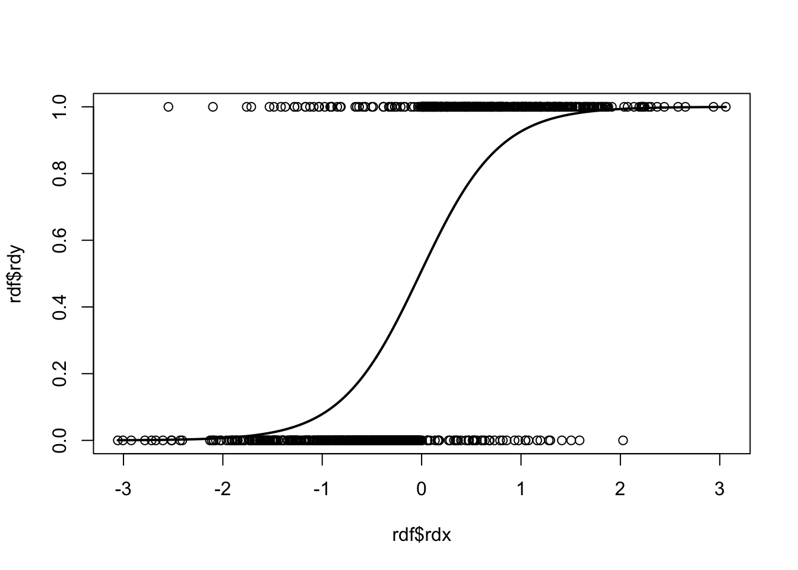
load("correctional_stats_report_environment1b.RData")
dataframe_original <- df
cols_to_rename <- setdiff(names(dataframe_original), "unique_individual_id")
num_to_letters <- function(n) {
sapply(n, function(i) {
out <- ""
while (i > 0) {
i <- i - 1
out <- paste0(letters[(i %% 26) + 1], out)
i <- i %/% 26
}
out
})
}
new_names <- paste0("x1", num_to_letters(seq_along(cols_to_rename)))
names(dataframe_original)[match(
cols_to_rename,
names(dataframe_original)
)] <- new_names
knitr::kable(
head(
dataframe_original[, setdiff(
names(dataframe_original),
"unique_individual_id"
)],
10
),
booktabs = TRUE,
longtable = TRUE,
caption = "Ontario Restrictive Confinement Dataframe (2023-2025)"
)| x1a | x1b | x1c | x1d | x1e | x1f | x1g | x1h | x1i |
|---|---|---|---|---|---|---|---|---|
| 2023 | Toronto | Toronto | Male | 25 to 49 | No | Yes | No | 8 |
| 2023 | Toronto | Toronto | Male | 25 to 49 | No | No | No | 26 |
| 2023 | Northern | Northern | Male | 50+ | No | No | No | 20 |
| 2023 | Eastern | Eastern | Male | 25 to 49 | Yes | Yes | No | 9 |
| 2023 | Western | Western | Male | 25 to 49 | No | Yes | No | 11 |
| 2023 | Eastern | Eastern | Male | 50+ | No | No | No | 8 |
| 2023 | Eastern | Eastern | Male | 50+ | No | No | No | 8 |
| 2023 | Central | Central | Male | 25 to 49 | No | No | No | 10 |
| 2023 | Northern | Northern | Male | 50+ | No | No | No | 3 |
| 2023 | Western | Western | Male | 25 to 49 | No | No | No | 11 |
region_names <- c("Central", "Eastern", "Northern", "Toronto", "Western")
age_levels <- c("18 to 24", "25 to 49", "50+")
sex_levels <- c("Male", "Female")
years <- 2023:2025
dataframe_original1b <- copy(dataframe_original)
df_rc <- as.data.table(df)
df_rc[, end_fiscal_year := as.integer(end_fiscal_year)]
df_rc[, age_category := factor(age_category, levels = age_levels)]
df_rc[, gender := factor(gender, levels = sex_levels)]
df_rc[,
region_at_time_of_placement := factor(
region_at_time_of_placement,
levels = region_names
)
]
get_region_by_age <- function(D, yr, sex = NULL) {
tmp <- D[
end_fiscal_year == yr &
!is.na(age_category) &
!is.na(region_at_time_of_placement)
]
if (!is.null(sex)) {
tmp <- tmp[gender == sex]
}
tab <- tmp[,
.(n = uniqueN(unique_individual_id)),
by = .(age_category, region_at_time_of_placement)
]
grid <- CJ(
age_category = age_levels,
region_at_time_of_placement = region_names,
unique = TRUE
)
tab <- merge(
grid,
tab,
by = c("age_category", "region_at_time_of_placement"),
all.x = TRUE
)
tab[is.na(n), n := 0L]
wide <- dcast(
tab,
age_category ~ region_at_time_of_placement,
value.var = "n"
)
S <- as.matrix(wide[, -1])
rownames(S) <- wide$age_category
den <- rowSums(S)
P <- sweep(S, 1, den, "/")
P[den == 0, ] <- NA_real_
list(S = S, P = P)
}
P_year <- list()
S_year <- list()
for (yr in years) {
out_all <- get_region_by_age(df_rc, yr)
P <- out_all$P
S_year[[as.character(yr)]] <- out_all$S
P_year[[as.character(yr)]] <- P
cols <- seq_len(ncol(P))
matplot(
P,
type = "l",
lwd = 2,
lty = 1,
col = cols,
xaxt = "n",
xlab = "Age Group",
ylab = "Proportion",
main = paste0(yr, " Region at Time of Placement by Age Group")
)
axis(1, at = seq_len(nrow(P)), labels = rownames(P))
legend(
"topright",
legend = colnames(P),
col = cols,
lty = 1,
lwd = 2,
bty = "n"
)
par(mfrow = c(1, 2), mar = c(4, 4, 3, 1))
for (sex in c("Male", "Female")) {
out_sex <- get_region_by_age(df_rc, yr, sex = sex)
Psex <- out_sex$P
cols <- seq_len(ncol(Psex))
matplot(
Psex,
type = "l",
lwd = 2,
lty = 1,
col = cols,
xaxt = "n",
xlab = "Age Group",
ylab = "Proportion",
main = paste0(yr, " RTP (", sex, ")")
)
axis(1, at = seq_len(nrow(Psex)), labels = rownames(Psex))
legend(
"topright",
legend = colnames(Psex),
col = cols,
lty = 1,
lwd = 2,
bty = "n"
)
}
par(mfrow = c(1, 1))
}
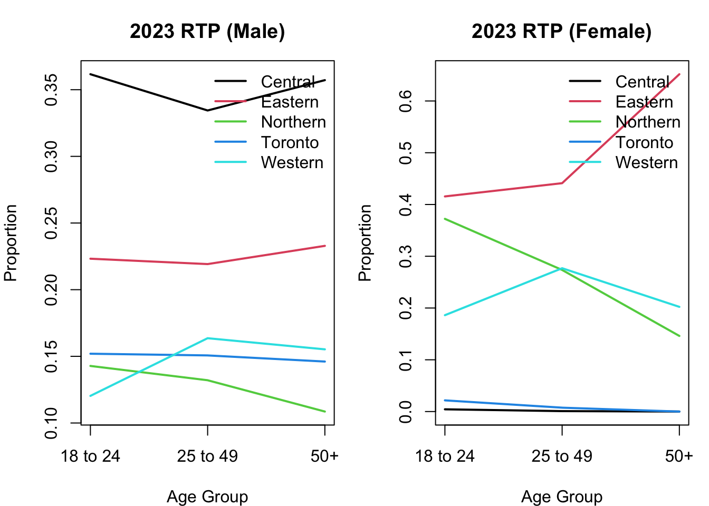


ac1b <- df |>
mutate(
ac1a = factor(
dplyr::recode(
as.character(age_category),
"18 to 24" = "1",
"25 to 49" = "2",
"50+" = "3"
),
levels = c("1", "2", "3"),
ordered = TRUE
)
) |>
group_by(ac1a) |>
summarise(
f = dplyr::n(),
n = dplyr::n_distinct(unique_individual_id),
.groups = "drop"
) |>
arrange(ac1a) |>
mutate(
p = round(n / sum(n), 2),
pct = round(100 * n / sum(n), 2),
rate = round(10000 * n / sum(n), 2)
)
vars <- c(
"gender",
"age_category",
"region_at_time_of_placement",
"region_most_recent_placement",
"mental_health_alert",
"suicide_watch_alert",
"suicide_risk_alert"
)
df.counts <- df |>
group_by(region_at_time_of_placement) |>
summarise(
f = n(),
count = n_distinct(unique_individual_id),
.groups = "drop"
) |>
mutate(p = count / sum(count), pct = p * 100, rate = p * 10000)
df.counts_ac_year <- df |>
pivot_longer(all_of(vars), names_to = "variable", values_to = "level") |>
group_by(end_fiscal_year, variable, level) |>
summarise(
f = n(),
count = n_distinct(unique_individual_id),
.groups = "drop"
) |>
group_by(end_fiscal_year, variable) |>
mutate(p = count / sum(count), pct = 100 * p, rate = 10000 * p) |>
ungroup()
df.counts_year <- df |>
group_by(end_fiscal_year, region_at_time_of_placement) |>
summarise(
f = n(),
count = n_distinct(unique_individual_id),
.groups = "drop"
) |>
group_by(end_fiscal_year) |>
mutate(p = count / sum(count), pct = 100 * p, rate = 10000 * p) |>
ungroup()
df.person_freq_year <- df |>
group_by(
end_fiscal_year,
region_at_time_of_placement,
unique_individual_id
) |>
summarise(freq = n(), .groups = "drop")
ecdf_age <- ac1b |>
arrange(ac1a) |>
mutate(ecdf = cumsum(p))
events_per_person <- df |>
count(unique_individual_id, name = "n_events") |>
pull(n_events)
total_people <- df |>
summarise(N = n_distinct(unique_individual_id)) |>
pull(N)
df_overall <- df |>
select(unique_individual_id, all_of(vars)) |>
pivot_longer(all_of(vars), names_to = "variable", values_to = "level") |>
group_by(variable, level) |>
summarise(
f = n(),
count = n_distinct(unique_individual_id),
.groups = "drop"
) |>
mutate(
p = count / total_people,
pct = 100 * p,
rate = 10000 * p
)
knitr::kable(
ecdf_age,
booktabs = TRUE,
longtable = TRUE,
caption = '(`ecdf_age`)'
)| ac1a | f | n | p | pct | rate | ecdf |
|---|---|---|---|---|---|---|
| 1 | 11977 | 10139 | 0.15 | 15.49 | 1548.72 | 0.15 |
| 2 | 56518 | 47857 | 0.73 | 73.10 | 7310.10 | 0.88 |
| 3 | 8439 | 7471 | 0.11 | 11.41 | 1141.19 | 0.99 |
knitr::kable(
df.counts,
booktabs = TRUE,
longtable = TRUE,
caption = '(`df.counts`).'
)| region_at_time_of_placement | f | count | p | pct | rate |
|---|---|---|---|---|---|
| Central | 22643 | 20066 | 0.2943783 | 29.43783 | 2943.783 |
| Eastern | 20349 | 17811 | 0.2612963 | 26.12963 | 2612.963 |
| Northern | 9110 | 7891 | 0.1157649 | 11.57649 | 1157.649 |
| Toronto | 12602 | 11213 | 0.1645003 | 16.45003 | 1645.003 |
| Western | 12230 | 11183 | 0.1640602 | 16.40602 | 1640.602 |
knitr::kable(
df.counts_year,
booktabs = TRUE,
longtable = TRUE,
caption = '(`df.counts_year`)'
)| end_fiscal_year | region_at_time_of_placement | f | count | p | pct | rate |
|---|---|---|---|---|---|---|
| 2023 | Central | 7663 | 6784 | 0.3174841 | 31.748409 | 3174.8409 |
| 2023 | Eastern | 5811 | 5079 | 0.2376919 | 23.769188 | 2376.9188 |
| 2023 | Northern | 3422 | 3031 | 0.1418476 | 14.184762 | 1418.4762 |
| 2023 | Toronto | 3455 | 2999 | 0.1403501 | 14.035006 | 1403.5006 |
| 2023 | Western | 3772 | 3475 | 0.1626264 | 16.262636 | 1626.2636 |
| 2024 | Central | 5949 | 5228 | 0.2569926 | 25.699258 | 2569.9258 |
| 2024 | Eastern | 7416 | 6569 | 0.3229121 | 32.291206 | 3229.1206 |
| 2024 | Northern | 2852 | 2417 | 0.1188124 | 11.881237 | 1188.1237 |
| 2024 | Toronto | 2874 | 2575 | 0.1265792 | 12.657917 | 1265.7917 |
| 2024 | Western | 3904 | 3554 | 0.1747038 | 17.470383 | 1747.0383 |
| 2025 | Central | 9031 | 8054 | 0.3044645 | 30.446452 | 3044.6452 |
| 2025 | Eastern | 7122 | 6163 | 0.2329792 | 23.297925 | 2329.7925 |
| 2025 | Northern | 2836 | 2443 | 0.0923525 | 9.235247 | 923.5247 |
| 2025 | Toronto | 6273 | 5639 | 0.2131705 | 21.317053 | 2131.7053 |
| 2025 | Western | 4554 | 4154 | 0.1570332 | 15.703323 | 1570.3323 |
knitr::kable(
df_overall,
booktabs = TRUE,
longtable = TRUE,
caption = '(`df_overall`)'
)| variable | level | f | count | p | pct | rate |
|---|---|---|---|---|---|---|
| age_category | 18 to 24 | 11977 | 10139 | 0.1548719 | 15.487192 | 1548.7192 |
| age_category | 25 to 49 | 56518 | 47857 | 0.7310095 | 73.100952 | 7310.0952 |
| age_category | 50+ | 8439 | 7471 | 0.1141186 | 11.411856 | 1141.1856 |
| gender | Female | 7242 | 6256 | 0.0955596 | 9.555960 | 955.5959 |
| gender | Male | 69692 | 59211 | 0.9044404 | 90.444040 | 9044.4041 |
| mental_health_alert | No | 55837 | 50900 | 0.7774909 | 77.749095 | 7774.9095 |
| mental_health_alert | Yes | 21097 | 17661 | 0.2697695 | 26.976950 | 2697.6950 |
| region_at_time_of_placement | Central | 22643 | 20066 | 0.3065056 | 30.650557 | 3065.0557 |
| region_at_time_of_placement | Eastern | 20349 | 17811 | 0.2720607 | 27.206073 | 2720.6073 |
| region_at_time_of_placement | Northern | 9110 | 7891 | 0.1205340 | 12.053401 | 1205.3401 |
| region_at_time_of_placement | Toronto | 12602 | 11213 | 0.1712771 | 17.127713 | 1712.7713 |
| region_at_time_of_placement | Western | 12230 | 11183 | 0.1708189 | 17.081889 | 1708.1889 |
| region_most_recent_placement | Central | 22577 | 19207 | 0.2933845 | 29.338445 | 2933.8445 |
| region_most_recent_placement | Eastern | 20263 | 17237 | 0.2632930 | 26.329296 | 2632.9296 |
| region_most_recent_placement | Northern | 9080 | 7696 | 0.1175554 | 11.755541 | 1175.5541 |
| region_most_recent_placement | Toronto | 12743 | 10558 | 0.1612721 | 16.127209 | 1612.7209 |
| region_most_recent_placement | Western | 12271 | 10769 | 0.1644951 | 16.449509 | 1644.9509 |
| suicide_risk_alert | No | 63229 | 58447 | 0.8927704 | 89.277040 | 8927.7040 |
| suicide_risk_alert | Yes | 13705 | 11328 | 0.1730337 | 17.303374 | 1730.3374 |
| suicide_watch_alert | No | 71715 | 64433 | 0.9842058 | 98.420578 | 9842.0578 |
| suicide_watch_alert | Yes | 5219 | 4921 | 0.0751676 | 7.516764 | 751.6764 |
knitr::kable(
df.counts_ac_year,
booktabs = TRUE,
longtable = TRUE,
caption = '(`df.counts_ac_year`)'
)| end_fiscal_year | variable | level | f | count | p | pct | rate |
|---|---|---|---|---|---|---|---|
| 2023 | age_category | 18 to 24 | 4062 | 3507 | 0.1687599 | 16.875992 | 1687.5992 |
| 2023 | age_category | 25 to 49 | 17437 | 14930 | 0.7184447 | 71.844473 | 7184.4473 |
| 2023 | age_category | 50+ | 2624 | 2344 | 0.1127953 | 11.279534 | 1127.9534 |
| 2023 | gender | Female | 1712 | 1511 | 0.0727106 | 7.271065 | 727.1065 |
| 2023 | gender | Male | 22411 | 19270 | 0.9272894 | 92.728935 | 9272.8935 |
| 2023 | mental_health_alert | No | 17726 | 16399 | 0.7487786 | 74.877859 | 7487.7859 |
| 2023 | mental_health_alert | Yes | 6397 | 5502 | 0.2512214 | 25.122141 | 2512.2141 |
| 2023 | region_at_time_of_placement | Central | 7663 | 6784 | 0.3174841 | 31.748409 | 3174.8409 |
| 2023 | region_at_time_of_placement | Eastern | 5811 | 5079 | 0.2376919 | 23.769188 | 2376.9188 |
| 2023 | region_at_time_of_placement | Northern | 3422 | 3031 | 0.1418476 | 14.184762 | 1418.4762 |
| 2023 | region_at_time_of_placement | Toronto | 3455 | 2999 | 0.1403501 | 14.035006 | 1403.5006 |
| 2023 | region_at_time_of_placement | Western | 3772 | 3475 | 0.1626264 | 16.262636 | 1626.2636 |
| 2023 | region_most_recent_placement | Central | 7647 | 6581 | 0.3166835 | 31.668351 | 3166.8351 |
| 2023 | region_most_recent_placement | Eastern | 5841 | 4987 | 0.2399788 | 23.997883 | 2399.7883 |
| 2023 | region_most_recent_placement | Northern | 3422 | 2988 | 0.1437852 | 14.378519 | 1437.8519 |
| 2023 | region_most_recent_placement | Toronto | 3425 | 2826 | 0.1359896 | 13.598961 | 1359.8961 |
| 2023 | region_most_recent_placement | Western | 3788 | 3399 | 0.1635629 | 16.356287 | 1635.6287 |
| 2023 | suicide_risk_alert | No | 20380 | 18942 | 0.8549377 | 85.493771 | 8549.3771 |
| 2023 | suicide_risk_alert | Yes | 3743 | 3214 | 0.1450623 | 14.506229 | 1450.6229 |
| 2023 | suicide_watch_alert | No | 23057 | 20621 | 0.9531756 | 95.317556 | 9531.7556 |
| 2023 | suicide_watch_alert | Yes | 1066 | 1013 | 0.0468244 | 4.682444 | 468.2444 |
| 2024 | age_category | 18 to 24 | 3486 | 2944 | 0.1498905 | 14.989054 | 1498.9054 |
| 2024 | age_category | 25 to 49 | 16959 | 14445 | 0.7354514 | 73.545135 | 7354.5135 |
| 2024 | age_category | 50+ | 2550 | 2252 | 0.1146581 | 11.465811 | 1146.5811 |
| 2024 | gender | Female | 2219 | 1924 | 0.0979584 | 9.795835 | 979.5835 |
| 2024 | gender | Male | 20776 | 17717 | 0.9020416 | 90.204165 | 9020.4165 |
| 2024 | mental_health_alert | No | 16562 | 15146 | 0.7372469 | 73.724688 | 7372.4688 |
| 2024 | mental_health_alert | Yes | 6433 | 5398 | 0.2627531 | 26.275312 | 2627.5312 |
| 2024 | region_at_time_of_placement | Central | 5949 | 5228 | 0.2569926 | 25.699258 | 2569.9258 |
| 2024 | region_at_time_of_placement | Eastern | 7416 | 6569 | 0.3229121 | 32.291206 | 3229.1206 |
| 2024 | region_at_time_of_placement | Northern | 2852 | 2417 | 0.1188124 | 11.881237 | 1188.1237 |
| 2024 | region_at_time_of_placement | Toronto | 2874 | 2575 | 0.1265792 | 12.657917 | 1265.7917 |
| 2024 | region_at_time_of_placement | Western | 3904 | 3554 | 0.1747038 | 17.470383 | 1747.0383 |
| 2024 | region_most_recent_placement | Central | 5969 | 5035 | 0.2563515 | 25.635151 | 2563.5151 |
| 2024 | region_most_recent_placement | Eastern | 7400 | 6382 | 0.3249325 | 32.493254 | 3249.3254 |
| 2024 | region_most_recent_placement | Northern | 2860 | 2376 | 0.1209714 | 12.097144 | 1209.7144 |
| 2024 | region_most_recent_placement | Toronto | 2896 | 2408 | 0.1226007 | 12.260068 | 1226.0068 |
| 2024 | region_most_recent_placement | Western | 3870 | 3440 | 0.1751438 | 17.514383 | 1751.4383 |
| 2024 | suicide_risk_alert | No | 18616 | 17315 | 0.8272419 | 82.724189 | 8272.4189 |
| 2024 | suicide_risk_alert | Yes | 4379 | 3616 | 0.1727581 | 17.275811 | 1727.5811 |
| 2024 | suicide_watch_alert | No | 21198 | 19259 | 0.9190208 | 91.902080 | 9190.2081 |
| 2024 | suicide_watch_alert | Yes | 1797 | 1697 | 0.0809792 | 8.097919 | 809.7919 |
| 2025 | age_category | 18 to 24 | 4429 | 3688 | 0.1472549 | 14.725494 | 1472.5494 |
| 2025 | age_category | 25 to 49 | 22122 | 18482 | 0.7379517 | 73.795169 | 7379.5169 |
| 2025 | age_category | 50+ | 3265 | 2875 | 0.1147934 | 11.479337 | 1147.9337 |
| 2025 | gender | Female | 3311 | 2821 | 0.1126373 | 11.263725 | 1126.3725 |
| 2025 | gender | Male | 26505 | 22224 | 0.8873627 | 88.736275 | 8873.6275 |
| 2025 | mental_health_alert | No | 21549 | 19355 | 0.7411166 | 74.111656 | 7411.1656 |
| 2025 | mental_health_alert | Yes | 8267 | 6761 | 0.2588834 | 25.888344 | 2588.8344 |
| 2025 | region_at_time_of_placement | Central | 9031 | 8054 | 0.3044645 | 30.446452 | 3044.6452 |
| 2025 | region_at_time_of_placement | Eastern | 7122 | 6163 | 0.2329792 | 23.297925 | 2329.7925 |
| 2025 | region_at_time_of_placement | Northern | 2836 | 2443 | 0.0923525 | 9.235247 | 923.5247 |
| 2025 | region_at_time_of_placement | Toronto | 6273 | 5639 | 0.2131705 | 21.317053 | 2131.7053 |
| 2025 | region_at_time_of_placement | Western | 4554 | 4154 | 0.1570332 | 15.703323 | 1570.3323 |
| 2025 | region_most_recent_placement | Central | 8961 | 7591 | 0.3030944 | 30.309443 | 3030.9443 |
| 2025 | region_most_recent_placement | Eastern | 7022 | 5868 | 0.2342983 | 23.429826 | 2342.9826 |
| 2025 | region_most_recent_placement | Northern | 2798 | 2332 | 0.0931124 | 9.311240 | 931.1240 |
| 2025 | region_most_recent_placement | Toronto | 6422 | 5324 | 0.2125774 | 21.257736 | 2125.7736 |
| 2025 | region_most_recent_placement | Western | 4613 | 3930 | 0.1569175 | 15.691755 | 1569.1755 |
| 2025 | suicide_risk_alert | No | 24233 | 22190 | 0.8314598 | 83.145983 | 8314.5983 |
| 2025 | suicide_risk_alert | Yes | 5583 | 4498 | 0.1685402 | 16.854017 | 1685.4017 |
| 2025 | suicide_watch_alert | No | 27460 | 24553 | 0.9173890 | 91.738903 | 9173.8903 |
| 2025 | suicide_watch_alert | Yes | 2356 | 2211 | 0.0826110 | 8.261097 | 826.1097 |
library(DoubleML)
library(mlr3)
library(mlr3learners)
library(data.table)
library(dplyr)
library(parallel)
lgr::get_logger("mlr3")$set_threshold("warn")
# "regr.lm" instead of "regr.ranger" utilized (disclaimer)
# "classif.log_reg", predict_type = "prob" instead of classif.ranger
# cores <- max(1L, parallel::detectCores() - 1L)
# yn_cols <- c("mental_health_alert", "suicide_risk_alert", "suicide_watch_alert")
# dfn <- dfn %>%
# mutate(across(
# all_of(yn_cols),
# ~ factor(dplyr::if_else(.x == "Yes", 1L, 0L), levels = c(0, 1))
# ))
# dt <- as.data.table(dfn)
# dt[, number_of_placements := as.integer(number_of_placements)]
# dt <- dt[!is.na(number_of_placements) & number_of_placements > 0L]
# N_expanded <- sum(dt$number_of_placements)
# message("Expanded N = ", format(N_expanded, big.mark = ","))
# dt <- dt[rep.int(seq_len(.N), number_of_placements)]
# dt[, Y := as.integer(suicide_risk_alert) - 1L]
# dt[, D := as.integer(mental_health_alert) - 1L]
# stopifnot(identical(sort(unique(dt$D)), c(0L, 1L)))
# dt[, cluster_id := as.factor(unique_individual_id)]
# ml_g <- lrn("regr.lm")
# ml_m <- lrn("classif.log_reg", predict_type = "prob")
# fit_irm_ate_atte <- function(dsub, x_cols, tag) {
# dml_data <- DoubleMLClusterData$new(
# data = dsub,
# y_col = "Y",
# d_cols = "D",
# x_cols = x_cols,
# cluster_cols = "cluster_id"
# )
# set.seed(1111111111)
# obj_ate <- DoubleMLIRM$new(
# dml_data,
# ml_g = ml_g,
# ml_m = ml_m,
# n_folds = 3,
# n_rep = 1,
# score = "ATE"
# )
# obj_ate$fit()
# set.seed(1111111111)
# obj_atte <- DoubleMLIRM$new(
# dml_data,
# ml_g = ml_g,
# ml_m = ml_m,
# n_folds = 3,
# n_rep = 1,
# score = "ATTE"
# )
# obj_atte$fit()
# mk <- function(obj, estimand) {
# ci <- obj$confint(level = 0.95)
# data.table(
# group = tag,
# estimand = estimand,
# effect = as.numeric(obj$coef),
# se = as.numeric(obj$se),
# t_value = as.numeric(obj$t_stat),
# p_value = as.numeric(obj$pval),
# ci_low = as.numeric(ci[1, 1]),
# ci_high = as.numeric(ci[1, 2])
# )
# }
# rbind(mk(obj_ate, "ATE"), mk(obj_atte, "ATTE"))
# }
# x_cols_pool <- c(
# "gender",
# "age_category",
# "region_at_time_of_placement",
# "region_most_recent_placement",
# "end_fiscal_year"
# )
# dt[, (x_cols_pool) := lapply(.SD, as.factor), .SDcols = x_cols_pool]
# keep_pool <- complete.cases(dt[,
# c("Y", "D", "cluster_id", x_cols_pool),
# with = FALSE
# ])
# dsub_pool <- dt[keep_pool, c("Y", "D", "cluster_id", x_cols_pool), with = FALSE]
# res_pool <- fit_irm_ate_atte(dsub_pool, x_cols_pool, tag = "Pooled 2023-25")
# years <- sort(unique(dt$end_fiscal_year))
# x_cols_year <- c(
# "gender",
# "age_category",
# "region_at_time_of_placement",
# "region_most_recent_placement"
# )
# res_by_year <- rbindlist(lapply(years, function(yy) {
# sub <- dt[end_fiscal_year == yy]
# sub[, (x_cols_year) := lapply(.SD, as.factor), .SDcols = x_cols_year]
# keep_y <- complete.cases(sub[,
# c("Y", "D", "cluster_id", x_cols_year),
# with = FALSE
# ])
# dsub_y <- sub[keep_y, c("Y", "D", "cluster_id", x_cols_year), with = FALSE]
# fit_irm_ate_atte(dsub_y, x_cols_year, tag = as.character(yy))
# }))
setHook(packageEvent("graphics", "onLoad"), function(...) par(ask = FALSE))
setnames(
dataframe_original,
old = c(
"x1a",
"unique_individual_id",
"x1b",
"x1c",
"x1d",
"x1f",
"x1g",
"x1h",
"x1i"
),
new = c("year", "id", "regA", "regB", "sex", "binA", "binB", "binC", "np")
)
dt1b <- as.data.table(dataframe_original)
placement_dist <- dt1b[,
.(
total_placements = sum(np),
unique_status_rows = .N
),
by = .(id, year)
]
summary_report <- placement_dist[,
.(
total_unique_people = .N,
avg_placements_per_person = mean(total_placements),
median_placements = median(total_placements),
max_placements = max(total_placements),
avg_status_changes = mean(unique_status_rows),
max_status_changes = max(unique_status_rows)
),
by = year
][order(year)]
# Summary of Placement Distribution by Year
knitr::kable(
summary_report,
booktabs = TRUE,
longtable = TRUE,
caption = '(`summary_report`)'
)| year | total_unique_people | avg_placements_per_person | median_placements | max_placements | avg_status_changes | max_status_changes |
|---|---|---|---|---|---|---|
| 2023 | 20781 | 21.25749 | 10 | 362 | 1.160820 | 7 |
| 2024 | 19641 | 27.88183 | 8 | 366 | 1.170765 | 8 |
| 2025 | 25045 | 37.69008 | 8 | 364 | 1.190497 | 8 |
# Frequency of Status Combinations per Person
as.data.frame(table(placement_dist$unique_status_rows)) Var1 Freq
1 1 56367
2 2 7300
3 3 1397
4 4 286
5 5 83
6 6 25
7 7 5
8 8 4placement_rows <- as.data.frame(table(placement_dist$unique_status_rows))
knitr::kable(
placement_rows,
booktabs = TRUE,
longtable = TRUE,
caption = '(`placement_rows`)'
)| Var1 | Freq |
|---|---|
| 1 | 56367 |
| 2 | 7300 |
| 3 | 1397 |
| 4 | 286 |
| 5 | 83 |
| 6 | 25 |
| 7 | 5 |
| 8 | 4 |
top_rows <- placement_dist[order(-unique_status_rows)][1:10]
knitr::kable(
top_rows,
booktabs = TRUE,
longtable = TRUE,
caption = '(`top_rows`)'
)| id | year | total_placements | unique_status_rows |
|---|---|---|---|
| 2024-09049-RC | 2024 | 91 | 8 |
| 2025-01080-RC | 2025 | 83 | 8 |
| 2025-10704-RC | 2025 | 181 | 8 |
| 2025-11914-RC | 2025 | 122 | 8 |
| 2023-06822-RC | 2023 | 94 | 7 |
| 2023-15226-RC | 2023 | 30 | 7 |
| 2024-03863-RC | 2024 | 27 | 7 |
| 2025-18531-RC | 2025 | 108 | 7 |
| 2025-20049-RC | 2025 | 83 | 7 |
| 2023-03600-RC | 2023 | 48 | 6 |
row_counts_summary <- placement_dist[,
.(count_of_people = .N),
by = unique_status_rows
][order(unique_status_rows)]
# how many people have 1, 2,...n rows ?:!
knitr::kable(
row_counts_summary,
booktabs = TRUE,
longtable = TRUE,
caption = '(`row_counts_summary`)'
)| unique_status_rows | count_of_people |
|---|---|
| 1 | 56367 |
| 2 | 7300 |
| 3 | 1397 |
| 4 | 286 |
| 5 | 83 |
| 6 | 25 |
| 7 | 5 |
| 8 | 4 |
setnames(dt1b, "x1e", "age")
bin_cols <- c("binA", "binB", "binC")
dt1b[,
(bin_cols) := lapply(.SD, function(x) ifelse(x == "Yes", 1L, 0L)),
.SDcols = bin_cols
]
dt1b[age == "18 to 24", `:=`(age_num = 21, age_order = 1L)]
dt1b[age == "25 to 49", `:=`(age_num = 42, age_order = 2L)]
dt1b[age == "50+", `:=`(age_num = 57.5, age_order = 3L)]
dt1b[,
age_factor := factor(
age,
levels = c("A", "B", "C"),
ordered = TRUE
)
]
cat_cols <- c("regA", "regB", "sex")
dt1b[, (cat_cols) := lapply(.SD, as.factor), .SDcols = cat_cols]
dt1b[, a1 := as.integer(binA == 1 & binB == 0 & binC == 0)] # 1,0,0
dt1b[, a2 := as.integer(binA == 0 & binB == 1 & binC == 0)] # 0,1,0
dt1b[, a3 := as.integer(binA == 0 & binB == 0 & binC == 1)] # 0,0,1
dt1b[, a4 := as.integer(binA == 1 & binB == 1 & binC == 0)] # 1,1,0
dt1b[, a5 := as.integer(binA == 0 & binB == 1 & binC == 1)] # 0,1,1
dt1b[, a6 := as.integer(binA == 1 & binB == 0 & binC == 1)] # 1,0,1
dt1b[, a7 := as.integer(binA == 1 & binB == 1 & binC == 1)] # 1,1,1
dt1b[, a8 := as.integer(binA == 0 & binB == 0 & binC == 0)] # 0,0,0
dt_unbiased <- dt1b[,
.(
a1 = sum(a1 * np),
a2 = sum(a2 * np),
a3 = sum(a3 * np),
a4 = sum(a4 * np),
a5 = sum(a5 * np),
a6 = sum(a6 * np),
a7 = sum(a7 * np),
a8 = sum(a8 * np),
Y = sum(binB * np) / sum(np),
D = sum(binA * np) / sum(np),
total_np = sum(np),
age_val = first(age_num),
sex = first(sex),
regA = first(regA)
),
by = .(id, year)
]
state_cols <- paste0("a", 1:8)
dt_unbiased[, combo_count := rowSums(.SD > 0), .SDcols = state_cols]
dt_8 <- dt_unbiased[combo_count == 8]
dt_7 <- dt_unbiased[combo_count == 7]
dt_6 <- dt_unbiased[combo_count == 6]
dt_5 <- dt_unbiased[combo_count == 5]
dt_4 <- dt_unbiased[combo_count == 4]
dt_3 <- dt_unbiased[combo_count == 3]
dt_2 <- dt_unbiased[combo_count == 2]
dt_1 <- dt_unbiased[combo_count == 1]
dt_2plus <- dt_unbiased[combo_count >= 2]
subset_summary <- dt_unbiased[, .(n_persons = .N), by = combo_count][order(
-combo_count
)]
knitr::kable(
subset_summary,
booktabs = TRUE,
longtable = TRUE,
caption = '(`subset_summary`)'
)| combo_count | n_persons |
|---|---|
| 6 | 12 |
| 5 | 35 |
| 4 | 163 |
| 3 | 1092 |
| 2 | 5958 |
| 1 | 58207 |
print(paste(
"Number of rows with NA combo_count:",
sum(is.na(dt_unbiased$combo_count))
))[1] "Number of rows with NA combo_count: 0"alert_stats <- summary(dt_unbiased[, .(a1, a2, a3, a4, a5, a6, a7, a8)])
knitr::kable(
alert_stats,
booktabs = TRUE,
longtable = TRUE,
caption = '(`alert_stats`)'
)| a1 | a2 | a3 | a4 | a5 | a6 | a7 | a8 | |
|---|---|---|---|---|---|---|---|---|
| Min. : 0.000 | Min. : 0.000 | Min. :0 | Min. : 0.000 | Min. : 0.0000 | Min. :0 | Min. : 0.0000 | Min. : 0.00 | |
| 1st Qu.: 0.000 | 1st Qu.: 0.000 | 1st Qu.:0 | 1st Qu.: 0.000 | 1st Qu.: 0.0000 | 1st Qu.:0 | 1st Qu.: 0.0000 | 1st Qu.: 0.00 | |
| Median : 0.000 | Median : 0.000 | Median :0 | Median : 0.000 | Median : 0.0000 | Median :0 | Median : 0.0000 | Median : 3.00 | |
| Mean : 6.995 | Mean : 1.294 | Mean :0 | Mean : 1.841 | Mean : 0.3006 | Mean :0 | Mean : 0.3485 | Mean : 18.75 | |
| 3rd Qu.: 0.000 | 3rd Qu.: 0.000 | 3rd Qu.:0 | 3rd Qu.: 0.000 | 3rd Qu.: 0.0000 | 3rd Qu.:0 | 3rd Qu.: 0.0000 | 3rd Qu.: 14.00 | |
| Max. :364.000 | Max. :357.000 | Max. :0 | Max. :364.000 | Max. :340.0000 | Max. :0 | Max. :293.0000 | Max. :366.00 |
dt_unbiased[,
combo_count_robust := rowSums(.SD > 0, na.rm = TRUE),
.SDcols = state_cols
]
alert_stats1a <- as.data.frame(table(dt_unbiased$combo_count_robust))
# Then pass it to kable
knitr::kable(
alert_stats1a,
booktabs = TRUE,
longtable = TRUE,
caption = '(`alert_stats1a`)'
)| Var1 | Freq |
|---|---|
| 1 | 58207 |
| 2 | 5958 |
| 3 | 1092 |
| 4 | 163 |
| 5 | 35 |
| 6 | 12 |
top_ids <- placement_dist[unique_status_rows >= 7, id]
complex_moves <- dt_unbiased[id %in% top_ids]
print(complex_moves[, .(id, combo_count, total_np, a1, a2, a4, a5, a7, a8)]) id combo_count total_np a1 a2 a4 a5 a7 a8
<char> <num> <num> <num> <num> <num> <num> <num> <num>
1: 2023-06822-RC 5 94 9 27 1 12 0 45
2: 2023-15226-RC 4 30 20 0 0 3 1 6
3: 2024-03863-RC 3 27 10 0 0 1 0 16
4: 2024-09049-RC 4 91 40 0 2 0 4 45
5: 2025-01080-RC 6 83 12 20 3 4 39 5
6: 2025-10704-RC 3 181 0 8 0 5 0 168
7: 2025-11914-RC 6 122 35 2 3 10 32 40
8: 2025-18531-RC 3 108 0 2 0 4 0 102
9: 2025-20049-RC 5 83 20 0 31 2 6 24knitr::kable(
complex_moves[, .(id, combo_count, total_np, a1, a2, a4, a5, a7, a8)],
booktabs = TRUE,
longtable = TRUE,
caption = '(`complex_moves`)'
)| id | combo_count | total_np | a1 | a2 | a4 | a5 | a7 | a8 |
|---|---|---|---|---|---|---|---|---|
| 2023-06822-RC | 5 | 94 | 9 | 27 | 1 | 12 | 0 | 45 |
| 2023-15226-RC | 4 | 30 | 20 | 0 | 0 | 3 | 1 | 6 |
| 2024-03863-RC | 3 | 27 | 10 | 0 | 0 | 1 | 0 | 16 |
| 2024-09049-RC | 4 | 91 | 40 | 0 | 2 | 0 | 4 | 45 |
| 2025-01080-RC | 6 | 83 | 12 | 20 | 3 | 4 | 39 | 5 |
| 2025-10704-RC | 3 | 181 | 0 | 8 | 0 | 5 | 0 | 168 |
| 2025-11914-RC | 6 | 122 | 35 | 2 | 3 | 10 | 32 | 40 |
| 2025-18531-RC | 3 | 108 | 0 | 2 | 0 | 4 | 0 | 102 |
| 2025-20049-RC | 5 | 83 | 20 | 0 | 31 | 2 | 6 | 24 |
region_profile <- dcast(
dt1b[id %in% top_ids],
id + year ~ regA,
value.var = "np",
fun.aggregate = sum
)
complex_subset <- merge(
dt_unbiased[
id %in% top_ids,
.(id, year, combo_count, total_np, a1, a2, a4, a5, a7, a8)
],
region_profile,
by = c("id", "year")
)
knitr::kable(
complex_subset,
booktabs = TRUE,
longtable = TRUE,
caption = '(`complex_subset`)'
)| id | year | combo_count | total_np | a1 | a2 | a4 | a5 | a7 | a8 | Central | Eastern | Toronto | Western |
|---|---|---|---|---|---|---|---|---|---|---|---|---|---|
| 2023-06822-RC | 2023 | 5 | 94 | 9 | 27 | 1 | 12 | 0 | 45 | 0 | 49 | 45 | 0 |
| 2023-15226-RC | 2023 | 4 | 30 | 20 | 0 | 0 | 3 | 1 | 6 | 25 | 2 | 3 | 0 |
| 2024-03863-RC | 2024 | 3 | 27 | 10 | 0 | 0 | 1 | 0 | 16 | 4 | 6 | 15 | 2 |
| 2024-09049-RC | 2024 | 4 | 91 | 40 | 0 | 2 | 0 | 4 | 45 | 19 | 18 | 47 | 7 |
| 2025-01080-RC | 2025 | 6 | 83 | 12 | 20 | 3 | 4 | 39 | 5 | 7 | 64 | 12 | 0 |
| 2025-10704-RC | 2025 | 3 | 181 | 0 | 8 | 0 | 5 | 0 | 168 | 29 | 0 | 137 | 15 |
| 2025-11914-RC | 2025 | 6 | 122 | 35 | 2 | 3 | 10 | 32 | 40 | 24 | 98 | 0 | 0 |
| 2025-18531-RC | 2025 | 3 | 108 | 0 | 2 | 0 | 4 | 0 | 102 | 81 | 17 | 3 | 7 |
| 2025-20049-RC | 2025 | 5 | 83 | 20 | 0 | 31 | 2 | 6 | 24 | 36 | 0 | 47 | 0 |
dt_complex_raw <- dt1b[id %in% top_ids]
regA_counts <- dcast(
dt_complex_raw,
id + year ~ regA,
value.var = "np",
fun.aggregate = sum
)
setnames(
regA_counts,
old = setdiff(names(regA_counts), c("id", "year")),
new = paste0(setdiff(names(regA_counts), c("id", "year")), "_A")
)
regB_counts <- dcast(
dt_complex_raw,
id + year ~ regB,
value.var = "np",
fun.aggregate = sum
)
setnames(
regB_counts,
old = setdiff(names(regB_counts), c("id", "year")),
new = paste0(setdiff(names(regB_counts), c("id", "year")), "_B")
)
complex_subset <- merge(
dt_unbiased[
id %in% top_ids,
.(id, year, combo_count, total_np, a1, a2, a4, a5, a7, a8)
],
regA_counts,
by = c("id", "year"),
all.x = TRUE
)
complex_subset <- merge(
complex_subset,
regB_counts,
by = c("id", "year"),
all.x = TRUE
)
complex_subset[is.na(complex_subset)] <- as.double(0)
knitr::kable(
complex_subset,
booktabs = TRUE,
longtable = TRUE,
caption = '(`complex_subset`)'
)| id | year | combo_count | total_np | a1 | a2 | a4 | a5 | a7 | a8 | Central_A | Eastern_A | Toronto_A | Western_A | Eastern_B | Toronto_B | Western_B |
|---|---|---|---|---|---|---|---|---|---|---|---|---|---|---|---|---|
| 2023-06822-RC | 2023 | 5 | 94 | 9 | 27 | 1 | 12 | 0 | 45 | 0 | 49 | 45 | 0 | 94 | 0 | 0 |
| 2023-15226-RC | 2023 | 4 | 30 | 20 | 0 | 0 | 3 | 1 | 6 | 25 | 2 | 3 | 0 | 0 | 30 | 0 |
| 2024-03863-RC | 2024 | 3 | 27 | 10 | 0 | 0 | 1 | 0 | 16 | 4 | 6 | 15 | 2 | 27 | 0 | 0 |
| 2024-09049-RC | 2024 | 4 | 91 | 40 | 0 | 2 | 0 | 4 | 45 | 19 | 18 | 47 | 7 | 0 | 91 | 0 |
| 2025-01080-RC | 2025 | 6 | 83 | 12 | 20 | 3 | 4 | 39 | 5 | 7 | 64 | 12 | 0 | 0 | 83 | 0 |
| 2025-10704-RC | 2025 | 3 | 181 | 0 | 8 | 0 | 5 | 0 | 168 | 29 | 0 | 137 | 15 | 0 | 0 | 181 |
| 2025-11914-RC | 2025 | 6 | 122 | 35 | 2 | 3 | 10 | 32 | 40 | 24 | 98 | 0 | 0 | 122 | 0 | 0 |
| 2025-18531-RC | 2025 | 3 | 108 | 0 | 2 | 0 | 4 | 0 | 102 | 81 | 17 | 3 | 7 | 0 | 108 | 0 |
| 2025-20049-RC | 2025 | 5 | 83 | 20 | 0 | 31 | 2 | 6 | 24 | 36 | 0 | 47 | 0 | 0 | 83 | 0 |
all_regions <- c("Toronto", "Central", "Eastern", "Western", "Northern")
dt_complex_raw <- dt1b[id %in% top_ids]
dt_complex_raw[, regA := factor(regA, levels = all_regions)]
dt_complex_raw[, regB := factor(regB, levels = all_regions)]
regA_counts <- dcast(
dt_complex_raw,
id + year ~ regA,
value.var = "np",
fun.aggregate = sum,
drop = FALSE
)
setnames(regA_counts, old = all_regions, new = paste0(all_regions, "_A"))
regB_counts <- dcast(
dt_complex_raw,
id + year ~ regB,
value.var = "np",
fun.aggregate = sum,
drop = FALSE
)
setnames(regB_counts, old = all_regions, new = paste0(all_regions, "_B"))
complex_subset <- dt_unbiased[
id %in% top_ids,
.(id, year, combo_count, total_np, a1, a2, a4, a5, a7, a8)
]
complex_subset <- merge(
complex_subset,
regA_counts,
by = c("id", "year"),
all.x = TRUE
)
complex_subset <- merge(
complex_subset,
regB_counts,
by = c("id", "year"),
all.x = TRUE
)
cols_to_fix <- c(paste0(all_regions, "_A"), paste0(all_regions, "_B"))
complex_subset[,
(cols_to_fix) := lapply(.SD, function(x) ifelse(is.na(x), 0, x)),
.SDcols = cols_to_fix
]
# Complex Cases (10 Regional Columns + Possible Alert Status Combinations)
knitr::kable(
complex_subset,
booktabs = TRUE,
longtable = TRUE,
caption = '(`complex_subset`)'
)| id | year | combo_count | total_np | a1 | a2 | a4 | a5 | a7 | a8 | Toronto_A | Central_A | Eastern_A | Western_A | Northern_A | Toronto_B | Central_B | Eastern_B | Western_B | Northern_B |
|---|---|---|---|---|---|---|---|---|---|---|---|---|---|---|---|---|---|---|---|
| 2023-06822-RC | 2023 | 5 | 94 | 9 | 27 | 1 | 12 | 0 | 45 | 45 | 0 | 49 | 0 | 0 | 0 | 0 | 94 | 0 | 0 |
| 2023-15226-RC | 2023 | 4 | 30 | 20 | 0 | 0 | 3 | 1 | 6 | 3 | 25 | 2 | 0 | 0 | 30 | 0 | 0 | 0 | 0 |
| 2024-03863-RC | 2024 | 3 | 27 | 10 | 0 | 0 | 1 | 0 | 16 | 15 | 4 | 6 | 2 | 0 | 0 | 0 | 27 | 0 | 0 |
| 2024-09049-RC | 2024 | 4 | 91 | 40 | 0 | 2 | 0 | 4 | 45 | 47 | 19 | 18 | 7 | 0 | 91 | 0 | 0 | 0 | 0 |
| 2025-01080-RC | 2025 | 6 | 83 | 12 | 20 | 3 | 4 | 39 | 5 | 12 | 7 | 64 | 0 | 0 | 83 | 0 | 0 | 0 | 0 |
| 2025-10704-RC | 2025 | 3 | 181 | 0 | 8 | 0 | 5 | 0 | 168 | 137 | 29 | 0 | 15 | 0 | 0 | 0 | 0 | 181 | 0 |
| 2025-11914-RC | 2025 | 6 | 122 | 35 | 2 | 3 | 10 | 32 | 40 | 0 | 24 | 98 | 0 | 0 | 0 | 0 | 122 | 0 | 0 |
| 2025-18531-RC | 2025 | 3 | 108 | 0 | 2 | 0 | 4 | 0 | 102 | 3 | 81 | 17 | 7 | 0 | 108 | 0 | 0 | 0 | 0 |
| 2025-20049-RC | 2025 | 5 | 83 | 20 | 0 | 31 | 2 | 6 | 24 | 47 | 36 | 0 | 0 | 0 | 83 | 0 | 0 | 0 | 0 |
dt_moves_corrected <- dt1b[
order(id, year),
.(
id,
year,
internal_move = as.integer(regA != regB),
external_move = as.integer(regA != shift(regA, type = "lag"))
),
by = .(id, year)
]
regional_volatility <- dt_moves_corrected[,
.(
total_regional_changes = sum(
internal_move == 1 | (external_move == 1 & !is.na(external_move))
)
),
by = .(id, year)
]
dt_unbiased <- merge(
dt_unbiased,
regional_volatility,
by = c("id", "year"),
all.x = TRUE
)
move_summary <- dt_unbiased[,
.(n_persons = .N),
by = total_regional_changes
][order(total_regional_changes)]
print(move_summary) total_regional_changes n_persons
<int> <int>
1: 0 62901
2: 1 362
3: 2 1800
4: 3 315
5: 4 64
6: 5 18
7: 6 2
8: 7 4
9: 8 1region_counts_per_id <- dt1b[,
.(
unique_regions = list(unique(c(regA, regB)))
),
by = .(id, year)
]
region_counts_per_id[, n_regions := sapply(unique_regions, length)]
multi_region_ids <- region_counts_per_id[n_regions > 1]
total_multi_region_persons <- nrow(multi_region_ids)
total_unique_persons <- nrow(region_counts_per_id)
print(paste("Total Unique Person-IDs in dataset:", total_unique_persons))[1] "Total Unique Person-IDs in dataset: 65467"print(paste("Number of Person-IDs with >1 region:", total_multi_region_persons))[1] "Number of Person-IDs with >1 region: 2566"print(paste(
"Percentage of population moving regions:",
round((total_multi_region_persons / total_unique_persons) * 100, 2),
"%"
))[1] "Percentage of population moving regions: 3.92 %"reg_count_id <- table(region_counts_per_id$n_regions)
knitr::kable(
reg_count_id,
booktabs = TRUE,
longtable = TRUE,
caption = '(`reg_count_id`)'
)| Var1 | Freq |
|---|---|
| 1 | 62901 |
| 2 | 2425 |
| 3 | 137 |
| 4 | 4 |
dt1b[,
status_combo := case_when(
binA == 1 & binB == 0 & binC == 0 ~ "a1",
binA == 0 & binB == 1 & binC == 0 ~ "a2",
binA == 0 & binB == 0 & binC == 1 ~ "a3",
binA == 1 & binB == 1 & binC == 0 ~ "a4",
binA == 0 & binB == 1 & binC == 1 ~ "a5",
binA == 1 & binB == 0 & binC == 1 ~ "a6",
binA == 1 & binB == 1 & binC == 1 ~ "a7",
binA == 0 & binB == 0 & binC == 0 ~ "a8"
)
]
dt1b[, reg_status_key := paste0(regA, "_", status_combo)]
dt_40state <- dcast(
dt1b,
id + year + sex + age_num + age_order ~ reg_status_key,
value.var = "np",
fun.aggregate = sum,
fill = 0
)
print(paste("Number of columns in the new state-space:", ncol(dt_40state)))[1] "Number of columns in the new state-space: 35"head(dt_40state)Key: <id, year, sex, age_num, age_order>
id year sex age_num age_order Central_a1 Central_a2
<char> <num> <fctr> <num> <int> <num> <num>
1: 2023-00001-RC 2023 Male 42.0 2 0 0
2: 2023-00002-RC 2023 Male 57.5 3 0 0
3: 2023-00003-RC 2023 Male 42.0 2 0 0
4: 2023-00004-RC 2023 Male 42.0 2 0 0
5: 2023-00005-RC 2023 Male 57.5 3 0 0
6: 2023-00006-RC 2023 Male 57.5 3 0 0
Central_a4 Central_a5 Central_a7 Central_a8 Eastern_a1 Eastern_a2 Eastern_a4
<num> <num> <num> <num> <num> <num> <num>
1: 0 0 0 0 0 0 0
2: 0 0 0 0 0 0 0
3: 0 0 0 0 0 0 9
4: 0 0 0 0 0 0 0
5: 0 0 0 0 0 0 0
6: 0 0 0 0 0 0 0
Eastern_a5 Eastern_a7 Eastern_a8 Northern_a1 Northern_a2 Northern_a4
<num> <num> <num> <num> <num> <num>
1: 0 0 0 0 0 0
2: 0 0 0 0 0 0
3: 0 0 0 0 0 0
4: 0 0 0 0 0 0
5: 0 0 8 0 0 0
6: 0 0 8 0 0 0
Northern_a5 Northern_a7 Northern_a8 Toronto_a1 Toronto_a2 Toronto_a4
<num> <num> <num> <num> <num> <num>
1: 0 0 0 0 8 0
2: 0 0 20 0 0 0
3: 0 0 0 0 0 0
4: 0 0 0 0 0 0
5: 0 0 0 0 0 0
6: 0 0 0 0 0 0
Toronto_a5 Toronto_a7 Toronto_a8 Western_a1 Western_a2 Western_a4 Western_a5
<num> <num> <num> <num> <num> <num> <num>
1: 0 0 26 0 0 0 0
2: 0 0 0 0 0 0 0
3: 0 0 0 0 0 0 0
4: 0 0 0 0 11 0 0
5: 0 0 0 0 0 0 0
6: 0 0 0 0 0 0 0
Western_a7 Western_a8
<num> <num>
1: 0 0
2: 0 0
3: 0 0
4: 0 0
5: 0 0
6: 0 0state_totals <- colSums(dt_40state[, .SD, .SDcols = patterns("_a[1-8]")])
state_summary <- data.table(
state = names(state_totals),
total_placements = state_totals
)[order(-total_placements)]
print("Top Ten Empirical Region-Status combinations:")[1] "Top Ten Empirical Region-Status combinations:"print(head(state_summary, 10)) state total_placements
<char> <num>
1: Central_a8 440242
2: Eastern_a8 421376
3: Toronto_a8 197025
4: Eastern_a1 196748
5: Central_a1 105275
6: Western_a8 94102
7: Toronto_a1 93729
8: Northern_a8 74921
9: Eastern_a4 55094
10: Western_a1 36830id_counts <- dt_40state[,
lapply(.SD, function(x) sum(x > 0)),
.SDcols = patterns("_a[1-8]")
]
id_counts_t <- data.table(
state = names(id_counts),
count_of_people = as.numeric(id_counts)
)[order(-count_of_people)]
print("Number of unique individuals who entered each state:")[1] "Number of unique individuals who entered each state:"print(id_counts_t) state count_of_people
<char> <num>
1: Central_a8 15267
2: Eastern_a8 12161
3: Toronto_a8 8670
4: Western_a8 7473
5: Northern_a8 5344
6: Eastern_a1 4449
7: Central_a1 3818
8: Toronto_a1 2453
9: Western_a1 2335
10: Eastern_a4 1283
11: Northern_a1 1259
12: Eastern_a2 1177
13: Northern_a2 1035
14: Central_a5 1023
15: Central_a4 921
16: Western_a4 919
17: Central_a7 870
18: Northern_a4 788
19: Central_a2 744
20: Eastern_a5 695
21: Western_a2 655
22: Eastern_a7 584
23: Toronto_a2 498
24: Toronto_a4 466
25: Western_a5 438
26: Western_a7 410
27: Northern_a5 363
28: Northern_a7 321
29: Toronto_a5 294
30: Toronto_a7 221
state count_of_people
<char> <num>dt_40state[, states_visited := rowSums(.SD > 0), .SDcols = patterns("_a[1-8]")]
complexity_dist <- dt_40state[, .(n_people = .N), by = states_visited][order(
states_visited
)]
print("How many unique Region-Status states did people visit?")[1] "How many unique Region-Status states did people visit?"print(complexity_dist) states_visited n_people
<num> <int>
1: 1 56367
2: 2 7300
3: 3 1397
4: 4 286
5: 5 83
6: 6 25
7: 7 5
8: 8 4dt1b[,
status_combo := case_when(
binA == 1 & binB == 0 & binC == 0 ~ "a1",
binA == 0 & binB == 1 & binC == 0 ~ "a2",
binA == 0 & binB == 0 & binC == 1 ~ "a3",
binA == 1 & binB == 1 & binC == 0 ~ "a4",
binA == 0 & binB == 1 & binC == 1 ~ "a5",
binA == 1 & binB == 0 & binC == 1 ~ "a6",
binA == 1 & binB == 1 & binC == 1 ~ "a7",
binA == 0 & binB == 0 & binC == 0 ~ "a8"
)
]
dt1b[, reg_status_key := paste0(regA, "_", status_combo)]
dt_40state_yearly <- dcast(
dt1b,
id + year + sex + age_num ~ reg_status_key,
value.var = "np",
fun.aggregate = sum,
fill = 0
)
yearly_stats <- dt_40state_yearly[,
.(
unique_ids = uniqueN(id),
total_placements = sum(.SD, na.rm = TRUE)
),
by = year,
.SDcols = patterns("_a[1-8]")
]
print(yearly_stats) year unique_ids total_placements
<num> <int> <num>
1: 2023 20781 441752
2: 2024 19641 547627
3: 2025 25045 943948split_summary <- dt_40state_yearly[,
lapply(.SD, sum),
by = year,
.SDcols = patterns("_a[1-8]")
]
print("First few rows of 2023 data:")[1] "First few rows of 2023 data:"head(dt_40state_yearly[year == 2023])Key: <id, year, sex, age_num>
id year sex age_num Central_a1 Central_a2 Central_a4
<char> <num> <fctr> <num> <num> <num> <num>
1: 2023-00001-RC 2023 Male 42.0 0 0 0
2: 2023-00002-RC 2023 Male 57.5 0 0 0
3: 2023-00003-RC 2023 Male 42.0 0 0 0
4: 2023-00004-RC 2023 Male 42.0 0 0 0
5: 2023-00005-RC 2023 Male 57.5 0 0 0
6: 2023-00006-RC 2023 Male 57.5 0 0 0
Central_a5 Central_a7 Central_a8 Eastern_a1 Eastern_a2 Eastern_a4 Eastern_a5
<num> <num> <num> <num> <num> <num> <num>
1: 0 0 0 0 0 0 0
2: 0 0 0 0 0 0 0
3: 0 0 0 0 0 9 0
4: 0 0 0 0 0 0 0
5: 0 0 0 0 0 0 0
6: 0 0 0 0 0 0 0
Eastern_a7 Eastern_a8 Northern_a1 Northern_a2 Northern_a4 Northern_a5
<num> <num> <num> <num> <num> <num>
1: 0 0 0 0 0 0
2: 0 0 0 0 0 0
3: 0 0 0 0 0 0
4: 0 0 0 0 0 0
5: 0 8 0 0 0 0
6: 0 8 0 0 0 0
Northern_a7 Northern_a8 Toronto_a1 Toronto_a2 Toronto_a4 Toronto_a5
<num> <num> <num> <num> <num> <num>
1: 0 0 0 8 0 0
2: 0 20 0 0 0 0
3: 0 0 0 0 0 0
4: 0 0 0 0 0 0
5: 0 0 0 0 0 0
6: 0 0 0 0 0 0
Toronto_a7 Toronto_a8 Western_a1 Western_a2 Western_a4 Western_a5 Western_a7
<num> <num> <num> <num> <num> <num> <num>
1: 0 26 0 0 0 0 0
2: 0 0 0 0 0 0 0
3: 0 0 0 0 0 0 0
4: 0 0 0 11 0 0 0
5: 0 0 0 0 0 0 0
6: 0 0 0 0 0 0 0
Western_a8
<num>
1: 0
2: 0
3: 0
4: 0
5: 0
6: 0dt_40state_yearly[,
combinations_this_year := rowSums(.SD > 0),
.SDcols = patterns("_a[1-8]")
]
table(dt_40state_yearly$year, dt_40state_yearly$combinations_this_year)
1 2 3 4 5 6 7 8
2023 18098 2175 394 85 23 4 2 0
2024 16992 2120 404 88 26 9 1 1
2025 21277 3005 599 113 34 12 2 3id_counts_yearly <- dt_40state_yearly[,
lapply(.SD, function(x) sum(x > 0)),
by = year,
.SDcols = patterns("_a[1-8]")
]
id_counts_long <- melt(
id_counts_yearly,
id.vars = "year",
variable.name = "state",
value.name = "person_count"
)
id_counts_long <- id_counts_long[order(year, -person_count)]
print("Top 5 most frequent Region-Status states per year:")[1] "Top 5 most frequent Region-Status states per year:"print(id_counts_long[, head(.SD, 5), by = year]) year state person_count
<num> <fctr> <int>
1: 2023 Central_a8 5473
2: 2023 Eastern_a8 3336
3: 2023 Western_a8 2464
4: 2023 Toronto_a8 2265
5: 2023 Northern_a8 2250
6: 2024 Eastern_a8 4609
7: 2024 Central_a8 3791
8: 2024 Western_a8 2361
9: 2024 Toronto_a8 1904
10: 2024 Northern_a8 1627
11: 2025 Central_a8 6003
12: 2025 Toronto_a8 4501
13: 2025 Eastern_a8 4216
14: 2025 Western_a8 2648
15: 2025 Central_a1 1490empty_states <- id_counts_long[,
.(total_across_years = sum(person_count)),
by = state
][total_across_years == 0]
print("States with zero occupancy (these won't help the DoubleML):")[1] "States with zero occupancy (these won't help the DoubleML):"print(empty_states$state)factor()
30 Levels: Central_a1 Central_a2 Central_a4 Central_a5 ... Western_a8reg_summary <- dt1b[,
.(
reg_count = uniqueN(c(regA, regB)),
regC = paste(sort(unique(c(regA, regB))), collapse = " + ")
),
by = .(id, year)
]
status_summary <- dcast(
dt1b,
id + year ~ status_combo,
value.var = "np",
fun.aggregate = sum,
fill = 0
)
dt_final_complex <- merge(status_summary, reg_summary, by = c("id", "year"))
demo_info <- dt1b[,
.(
sex = first(sex),
age_num = first(age_num)
),
by = .(id, year)
]
dt_final_complex <- merge(dt_final_complex, demo_info, by = c("id", "year"))
print(head(dt_final_complex))Key: <id, year>
id year a1 a2 a4 a5 a7 a8 reg_count regC
<char> <num> <num> <num> <num> <num> <num> <num> <int> <char>
1: 2023-00001-RC 2023 0 8 0 0 0 26 1 Toronto
2: 2023-00002-RC 2023 0 0 0 0 0 20 1 Northern
3: 2023-00003-RC 2023 0 0 9 0 0 0 1 Eastern
4: 2023-00004-RC 2023 0 11 0 0 0 0 1 Western
5: 2023-00005-RC 2023 0 0 0 0 0 8 1 Eastern
6: 2023-00006-RC 2023 0 0 0 0 0 8 1 Eastern
sex age_num
<fctr> <num>
1: Male 42.0
2: Male 57.5
3: Male 42.0
4: Male 42.0
5: Male 57.5
6: Male 57.5regC_stats <- dt_final_complex[, .(n_persons = .N), by = regC][order(
-n_persons
)]
print(regC_stats) regC n_persons
<char> <int>
1: Central 18403
2: Eastern 16765
3: Western 10374
4: Toronto 9829
5: Northern 7530
6: Central + Toronto 662
7: Central + Western 443
8: Eastern + Toronto 398
9: Central + Eastern 381
10: Northern + Toronto 124
11: Eastern + Western 116
12: Toronto + Western 95
13: Northern + Western 84
14: Central + Northern 66
15: Eastern + Northern 56
16: Central + Eastern + Toronto 54
17: Central + Toronto + Western 21
18: Central + Eastern + Western 19
19: Eastern + Toronto + Western 13
20: Central + Northern + Western 11
21: Central + Northern + Toronto 8
22: Eastern + Northern + Toronto 5
23: Northern + Toronto + Western 4
24: Central + Eastern + Toronto + Western 3
25: Eastern + Northern + Western 2
26: Eastern + Northern + Toronto + Western 1
regC n_persons
<char> <int>regC_yearly_counts <- dt_final_complex[, .(n = .N), by = .(regC, year)]
regC_stats_wide <- dcast(
regC_yearly_counts,
regC ~ year,
value.var = "n",
fill = 0
)
year_cols <- setdiff(names(regC_stats_wide), "regC")
new_t_names <- paste0("t", seq_along(year_cols))
setnames(regC_stats_wide, old = year_cols, new = new_t_names)
regC_stats_wide[, n_persons := rowSums(.SD), .SDcols = new_t_names]
setcolorder(regC_stats_wide, c("regC", "n_persons", new_t_names))
regC_stats_wide <- regC_stats_wide[order(-n_persons)]
print(regC_stats_wide) regC n_persons t1 t2 t3
<char> <num> <int> <int> <int>
1: Central 18403 6391 4839 7173
2: Eastern 16765 4869 6215 5681
3: Western 10374 3316 3363 3695
4: Toronto 9829 2687 2237 4905
5: Northern 7530 2949 2324 2257
6: Central + Toronto 662 178 144 340
7: Central + Western 443 107 75 261
8: Eastern + Toronto 398 91 133 174
9: Central + Eastern 381 66 123 192
10: Northern + Toronto 124 17 19 88
11: Eastern + Western 116 19 48 49
12: Toronto + Western 95 14 16 65
13: Northern + Western 84 9 32 43
14: Central + Northern 66 27 17 22
15: Eastern + Northern 56 23 19 14
16: Central + Eastern + Toronto 54 5 14 35
17: Central + Toronto + Western 21 3 3 15
18: Central + Eastern + Western 19 4 8 7
19: Eastern + Toronto + Western 13 0 4 9
20: Central + Northern + Western 11 2 2 7
21: Central + Northern + Toronto 8 1 1 6
22: Eastern + Northern + Toronto 5 2 2 1
23: Northern + Toronto + Western 4 1 0 3
24: Central + Eastern + Toronto + Western 3 0 2 1
25: Eastern + Northern + Western 2 0 1 1
26: Eastern + Northern + Toronto + Western 1 0 0 1
regC n_persons t1 t2 t3
<char> <num> <int> <int> <int>demog_counts <- dt_final_complex[, .(n = .N), by = .(regC, year, sex)]
demog_wide <- dcast(demog_counts, regC ~ year + sex, value.var = "n", fill = 0)
unique_years <- sort(unique(demog_counts$year))
for (i in seq_along(unique_years)) {
year_val <- unique_years[i]
suffix <- letters[i]
setnames(
demog_wide,
old = paste0(year_val, "_Male"),
new = paste0("g1", suffix),
skip_absent = TRUE
)
setnames(
demog_wide,
old = paste0(year_val, "_Female"),
new = paste0("g2", suffix),
skip_absent = TRUE
)
}
demog_wide[, t1 := g1a + g2a]
demog_wide[, t2 := g1b + g2b]
demog_wide[, t3 := g1c + g2c]
demog_wide[, n_persons := t1 + t2 + t3]
setcolorder(
demog_wide,
c(
"regC",
"n_persons",
"t1",
"t2",
"t3",
"g1a",
"g1b",
"g1c",
"g2a",
"g2b",
"g2c"
)
)
regC_demog_stats <- demog_wide[order(-n_persons)]
print(regC_demog_stats) regC n_persons t1 t2 t3 g1a
<char> <int> <int> <int> <int> <int>
1: Central 18403 6391 4839 7173 6390
2: Eastern 16765 4869 6215 5681 4193
3: Western 10374 3316 3363 3695 2927
4: Toronto 9829 2687 2237 4905 2673
5: Northern 7530 2949 2324 2257 2526
6: Central + Toronto 662 178 144 340 178
7: Central + Western 443 107 75 261 107
8: Eastern + Toronto 398 91 133 174 91
9: Central + Eastern 381 66 123 192 65
10: Northern + Toronto 124 17 19 88 17
11: Eastern + Western 116 19 48 49 16
12: Toronto + Western 95 14 16 65 14
13: Northern + Western 84 9 32 43 8
14: Central + Northern 66 27 17 22 27
15: Eastern + Northern 56 23 19 14 20
16: Central + Eastern + Toronto 54 5 14 35 5
17: Central + Toronto + Western 21 3 3 15 3
18: Central + Eastern + Western 19 4 8 7 4
19: Eastern + Toronto + Western 13 0 4 9 0
20: Central + Northern + Western 11 2 2 7 2
21: Central + Northern + Toronto 8 1 1 6 1
22: Eastern + Northern + Toronto 5 2 2 1 2
23: Northern + Toronto + Western 4 1 0 3 1
24: Central + Eastern + Toronto + Western 3 0 2 1 0
25: Eastern + Northern + Western 2 0 1 1 0
26: Eastern + Northern + Toronto + Western 1 0 0 1 0
regC n_persons t1 t2 t3 g1a
<char> <int> <int> <int> <int> <int>
g1b g1c g2a g2b g2c
<int> <int> <int> <int> <int>
1: 4836 6681 1 3 492
2: 5275 4542 676 940 1139
3: 2843 3137 389 520 558
4: 2222 4896 14 15 9
5: 1896 1724 423 428 533
6: 142 331 0 2 9
7: 73 248 0 2 13
8: 133 173 0 0 1
9: 121 153 1 2 39
10: 19 87 0 0 1
11: 42 42 3 6 7
12: 16 65 0 0 0
13: 26 37 1 6 6
14: 17 19 0 0 3
15: 19 10 3 0 4
16: 14 34 0 0 1
17: 3 15 0 0 0
18: 8 5 0 0 2
19: 4 9 0 0 0
20: 2 4 0 0 3
21: 1 6 0 0 0
22: 2 1 0 0 0
23: 0 3 0 0 0
24: 2 1 0 0 0
25: 1 0 0 0 1
26: 0 1 0 0 0
g1b g1c g2a g2b g2c
<int> <int> <int> <int> <int>knitr::kable(res_pool, digits = 4, caption = "Pooled IRM DoubleML (2023–2025)")| group | estimand | effect | se | t_value | p_value | ci_low | ci_high |
|---|---|---|---|---|---|---|---|
| Pooled 2023-25 | ATE | 0.1605 | 0.0063 | 25.5418 | 0 | 0.1481 | 0.1728 |
| Pooled 2023-25 | ATTE | 0.1557 | 0.0061 | 25.6923 | 0 | 0.1438 | 0.1676 |
knitr::kable(
res_by_year,
digits = 4,
caption = "Yearly IRM DoubleML (2023/2024/2025)"
)| group | estimand | effect | se | t_value | p_value | ci_low | ci_high |
|---|---|---|---|---|---|---|---|
| 2023 | ATE | 0.1342 | 0.0099 | 13.6093 | 0 | 0.1149 | 0.1535 |
| 2023 | ATTE | 0.1272 | 0.0103 | 12.3080 | 0 | 0.1070 | 0.1475 |
| 2024 | ATE | 0.1591 | 0.0117 | 13.6359 | 0 | 0.1362 | 0.1820 |
| 2024 | ATTE | 0.1550 | 0.0114 | 13.5809 | 0 | 0.1326 | 0.1774 |
| 2025 | ATE | 0.1737 | 0.0103 | 16.8639 | 0 | 0.1535 | 0.1939 |
| 2025 | ATTE | 0.1704 | 0.0097 | 17.6296 | 0 | 0.1514 | 0.1893 |
knitr::kable(
res_pool,
booktabs = TRUE,
longtable = TRUE,
digits = 4,
caption = "Pooled IRM DoubleML (2023–2025)"
)| group | estimand | effect | se | t_value | p_value | ci_low | ci_high |
|---|---|---|---|---|---|---|---|
| Pooled 2023-25 | ATE | 0.1605 | 0.0063 | 25.5418 | 0 | 0.1481 | 0.1728 |
| Pooled 2023-25 | ATTE | 0.1557 | 0.0061 | 25.6923 | 0 | 0.1438 | 0.1676 |
knitr::kable(
res_by_year,
booktabs = TRUE,
longtable = TRUE,
digits = 4,
caption = "IRM DoubleML (2023/2024/2025)"
)| group | estimand | effect | se | t_value | p_value | ci_low | ci_high |
|---|---|---|---|---|---|---|---|
| 2023 | ATE | 0.1342 | 0.0099 | 13.6093 | 0 | 0.1149 | 0.1535 |
| 2023 | ATTE | 0.1272 | 0.0103 | 12.3080 | 0 | 0.1070 | 0.1475 |
| 2024 | ATE | 0.1591 | 0.0117 | 13.6359 | 0 | 0.1362 | 0.1820 |
| 2024 | ATTE | 0.1550 | 0.0114 | 13.5809 | 0 | 0.1326 | 0.1774 |
| 2025 | ATE | 0.1737 | 0.0103 | 16.8639 | 0 | 0.1535 | 0.1939 |
| 2025 | ATTE | 0.1704 | 0.0097 | 17.6296 | 0 | 0.1514 | 0.1893 |
dt1c <- as.data.table(dataframe_original1b)
setnames(
dt1c,
old = c(
"x1a",
"unique_individual_id",
"x1b",
"x1c",
"x1d",
"x1e",
"x1f",
"x1g",
"x1h",
"x1i"
),
new = c("year", "id", "regA", "regB", "sex", "age", "bA", "bB", "bC", "np"),
skip_absent = TRUE
)
dt1c[, `:=`(
bA = as.integer(bA == "Yes"),
bB = as.integer(bB == "Yes"),
bC = as.integer(bC == "Yes"),
age_n = fcase(
age == "18 to 24" , 21 ,
age == "25 to 49" , 42 ,
age == "50+" , 57.5
)
)]
dt1c[,
combo := fcase(
bA == 1 & bB == 0 & bC == 0 , "a1" ,
bA == 0 & bB == 1 & bC == 0 , "a2" ,
bA == 1 & bB == 1 & bC == 0 , "a4" ,
bA == 0 & bB == 1 & bC == 1 , "a5" ,
bA == 1 & bB == 1 & bC == 1 , "a7" ,
bA == 0 & bB == 0 & bC == 0 , "a8"
)
]
# person-year: alert-state intensity via 2^3 = 8 possible outcomes (a1-a8) where two (a3 and a6) were not observed empirically
orc <- dt1c[,
.(
a1 = sum((combo == "a1") * np, na.rm = TRUE),
a2 = sum((combo == "a2") * np, na.rm = TRUE),
a4 = sum((combo == "a4") * np, na.rm = TRUE),
a5 = sum((combo == "a5") * np, na.rm = TRUE),
a7 = sum((combo == "a7") * np, na.rm = TRUE),
a8 = sum((combo == "a8") * np, na.rm = TRUE),
np = sum(np),
rg = uniqueN(c(regA, regB)),
rc = paste(sort(unique(c(regA, regB))), collapse = " + "),
yr = first(year),
sg = first(sex),
ag = first(age_n)
),
by = id
]
keyz <- c("a1", "a2", "a4", "a5", "a7", "a8")
orc[, ac := rowSums(.SD > 0), .SDcols = keyz]
# 6. VOLATILITY (v_moves): placement transfers/shifts within the person-year sequence for vm
moves <- dt1c[
order(id),
.(
vm = sum((regA != regB) | (regA != shift(regA) & !is.na(shift(regA))))
),
by = id
]
orc <- merge(orc, moves, by = "id")
setcolorder(
orc,
c(
"yr",
"ag",
"sg",
"np",
"ac",
"rg",
"vm",
"a1",
"a2",
"a4",
"a5",
"a7",
"a8",
"id",
"rc"
)
)
print(orc[ac > 3][order(-ac)][1:10]) yr ag sg np ac rg vm a1 a2 a4 a5 a7
<num> <num> <char> <num> <num> <int> <int> <num> <num> <num> <num> <num>
1: 2023 42.0 Male 93 6 1 0 15 22 11 2 3
2: 2023 21.0 Male 161 6 1 0 131 3 1 1 1
3: 2024 42.0 Male 355 6 1 0 31 66 2 4 3
4: 2024 42.0 Male 183 6 1 0 27 6 11 40 12
5: 2024 42.0 Male 39 6 1 0 10 2 1 1 1
6: 2024 42.0 Male 196 6 1 0 161 8 1 1 3
7: 2025 42.0 Male 249 6 1 0 86 7 12 2 6
8: 2025 57.5 Male 83 6 3 8 12 20 3 4 39
9: 2025 42.0 Male 86 6 1 0 16 37 2 11 4
10: 2025 42.0 Male 122 6 2 3 35 2 3 10 32
a8 id rc
<num> <char> <char>
1: 40 2023-15720-RC Eastern
2: 24 2023-16285-RC Eastern
3: 249 2024-00145-RC Eastern
4: 87 2024-00280-RC Eastern
5: 24 2024-04490-RC Eastern
6: 22 2024-10754-RC Eastern
7: 136 2025-00167-RC Eastern
8: 5 2025-01080-RC Central + Eastern + Toronto
9: 16 2025-05185-RC Eastern
10: 40 2025-11914-RC Central + Easternprint(paste("Zero day rows:", nrow(orc[np == 0])))[1] "Zero day rows: 0"orc[, id := .I]
orc[, sg := ifelse(sg == "Male", 1, 2)]
# Xbar and SD for complexity and volatility by year and gender
statz <- orc[,
.(
n = .N,
xA = round(mean(ac, na.rm = TRUE), 2),
sA = round(sd(ac, na.rm = TRUE), 2),
xB = round(mean(vm, na.rm = TRUE), 2),
sB = round(sd(vm, na.rm = TRUE), 2)
),
by = .(yr, sg)
]
statz <- statz[order(yr, sg)]
print("--- Summary Statistics for Methods Section ---")[1] "--- Summary Statistics for Methods Section ---"print(statz) yr sg n xA sA xB sB
<num> <num> <int> <num> <num> <num> <num>
1: 2023 1 19270 1.13 0.42 0.06 0.37
2: 2023 2 1511 1.13 0.39 0.01 0.13
3: 2024 1 17717 1.14 0.42 0.08 0.42
4: 2024 2 1924 1.15 0.43 0.02 0.21
5: 2025 1 22224 1.13 0.42 0.11 0.49
6: 2025 2 2821 1.14 0.41 0.06 0.36orc[,
agc := fcase(
ag == 21 , "21" , ag == 42 , "42" , ag == 57.5 , "57.5"
)
]
library(data.table)
library(lme4)
library(glmmTMB)
library(DHARMa)
library(cobalt)
library(DoubleML)
library(mlr3)
library(mlr3learners)
library(Hmisc) # weighted variance/sd
# weighted mean: sum(value * weight) / sum(weight)
# weighted sd: sq rt of weighted variance
statz1a <- orc[,
.(
n = .N,
xA = round(wtd.mean(ac, weights = np), 2),
sA = round(sqrt(wtd.var(ac, weights = np)), 2),
xB = round(wtd.mean(vm, weights = np), 2),
sB = round(sqrt(wtd.var(vm, weights = np)), 2)
),
by = .(yr, sg, agc, rc)
]
statz1a[is.na(sA), sA := mean(sB)]
statz1a[is.na(sB), sB := mean(sB)]
print(statz1a[order(yr, agc, sg, n, xA, xB, sA, sB, rc)]) yr sg agc rc n xA sA xB
<num> <num> <char> <char> <int> <num> <num> <num>
1: 2023 1 21 Central + Eastern + Western 1 1.00 0.00 3.00
2: 2023 1 21 Central + Toronto + Western 1 1.00 0.00 3.00
3: 2023 1 21 Eastern + Northern + Toronto 1 1.00 0.00 3.00
4: 2023 1 21 Toronto + Western 2 3.00 0.00 1.06
5: 2023 1 21 Central + Eastern + Toronto 2 3.49 0.50 5.48
---
236: 2025 2 57.5 Central + Eastern 3 1.00 0.00 1.11
237: 2025 2 57.5 Northern 25 1.04 0.20 0.00
238: 2025 2 57.5 Western 33 1.87 0.85 0.00
239: 2025 2 57.5 Central 44 1.08 0.28 0.00
240: 2025 2 57.5 Eastern 99 1.37 0.65 0.00
sB
<num>
1: 0.00
2: 0.00
3: 0.00
4: 0.24
5: 1.51
---
236: 0.31
237: 0.00
238: 0.00
239: 0.00
240: 0.00# year, age, gender, region
statz1a <- statz1a[order(yr, agc, sg, n, xA, xB, sA, sB, rc)]
print("--- Detailed Summary Statistics (By Year, Demographics, and Region) ---")[1] "--- Detailed Summary Statistics (By Year, Demographics, and Region) ---"print(head(statz1a, 30)) yr sg agc rc n xA sA xB
<num> <num> <char> <char> <int> <num> <num> <num>
1: 2023 1 21 Central + Eastern + Western 1 1.00 0.00 3.00
2: 2023 1 21 Central + Toronto + Western 1 1.00 0.00 3.00
3: 2023 1 21 Eastern + Northern + Toronto 1 1.00 0.00 3.00
4: 2023 1 21 Toronto + Western 2 3.00 0.00 1.06
5: 2023 1 21 Central + Eastern + Toronto 2 3.49 0.50 5.48
6: 2023 1 21 Northern + Toronto 4 1.27 0.45 2.00
7: 2023 1 21 Central + Northern 7 1.00 0.00 1.86
8: 2023 1 21 Eastern + Northern 7 1.54 0.69 2.00
9: 2023 1 21 Eastern + Toronto 9 1.73 1.14 2.55
10: 2023 1 21 Central + Eastern 13 1.28 0.59 1.69
11: 2023 1 21 Central + Western 19 1.38 0.55 1.75
12: 2023 1 21 Central + Toronto 33 1.90 1.23 2.28
13: 2023 1 21 Western 384 1.15 0.45 0.00
14: 2023 1 21 Toronto 462 1.21 0.49 0.00
15: 2023 1 21 Northern 464 1.40 0.73 0.00
16: 2023 1 21 Eastern 722 1.20 0.54 0.00
17: 2023 1 21 Central 1147 1.23 0.56 0.00
18: 2023 2 21 Central 1 1.00 NaN 0.00
19: 2023 2 21 Eastern + Northern 1 1.00 0.00 2.00
20: 2023 2 21 Eastern + Western 1 2.00 0.00 1.00
21: 2023 2 21 Toronto 5 1.58 1.20 0.00
22: 2023 2 21 Western 42 1.28 0.51 0.00
23: 2023 2 21 Northern 85 1.13 0.38 0.00
24: 2023 2 21 Eastern 94 1.87 1.06 0.00
25: 2023 1 42 Central + Northern + Toronto 1 1.00 0.00 3.00
26: 2023 1 42 Northern + Toronto + Western 1 1.00 0.00 3.00
27: 2023 1 42 Eastern + Northern + Toronto 1 2.00 0.00 3.00
28: 2023 1 42 Central + Northern + Western 2 1.62 0.49 3.00
29: 2023 1 42 Central + Toronto + Western 2 2.00 0.00 4.00
30: 2023 1 42 Central + Eastern + Toronto 3 1.59 0.49 3.59
yr sg agc rc n xA sA xB
<num> <num> <char> <char> <int> <num> <num> <num>
sB
<num>
1: 0.00
2: 0.00
3: 0.00
4: 0.24
5: 1.51
6: 0.00
7: 0.35
8: 0.00
9: 0.78
10: 0.46
11: 0.43
12: 0.55
13: 0.00
14: 0.00
15: 0.00
16: 0.00
17: 0.00
18: NaN
19: 0.00
20: 0.00
21: 0.00
22: 0.00
23: 0.00
24: 0.00
25: 0.00
26: 0.00
27: 0.00
28: 0.00
29: 0.00
30: 0.49
sB
<num># paths by volume per year
rpvy <- statz1a[, .SD[head(order(-n), 15)], by = yr]
print(rpvy) yr sg agc rc n xA sA xB sB
<num> <num> <char> <char> <int> <num> <num> <num> <num>
1: 2023 1 42 Central 4451 1.25 0.59 0 0
2: 2023 1 42 Eastern 2950 1.20 0.50 0 0
3: 2023 1 42 Western 2194 1.20 0.48 0 0
4: 2023 1 42 Toronto 1902 1.28 0.62 0 0
5: 2023 1 42 Northern 1814 1.33 0.67 0 0
6: 2023 1 21 Central 1147 1.23 0.56 0 0
7: 2023 1 57.5 Central 792 1.25 0.56 0 0
8: 2023 1 21 Eastern 722 1.20 0.54 0 0
9: 2023 2 42 Eastern 525 1.29 0.58 0 0
10: 2023 1 57.5 Eastern 521 1.13 0.36 0 0
11: 2023 1 21 Northern 464 1.40 0.73 0 0
12: 2023 1 21 Toronto 462 1.21 0.49 0 0
13: 2023 1 21 Western 384 1.15 0.45 0 0
14: 2023 1 57.5 Western 349 1.10 0.34 0 0
15: 2023 2 42 Western 330 1.29 0.55 0 0
16: 2024 1 42 Eastern 3769 1.20 0.58 0 0
17: 2024 1 42 Central 3515 1.24 0.53 0 0
18: 2024 1 42 Western 2143 1.17 0.45 0 0
19: 2024 1 42 Toronto 1589 1.18 0.46 0 0
20: 2024 1 42 Northern 1408 1.41 0.69 0 0
21: 2024 1 21 Eastern 833 1.21 0.59 0 0
22: 2024 2 42 Eastern 751 1.35 0.78 0 0
23: 2024 1 21 Central 700 1.22 0.48 0 0
24: 2024 1 57.5 Eastern 673 1.16 0.49 0 0
25: 2024 1 57.5 Central 621 1.26 0.59 0 0
26: 2024 2 42 Western 445 1.24 0.50 0 0
27: 2024 1 21 Western 373 1.17 0.43 0 0
28: 2024 1 21 Toronto 361 1.17 0.43 0 0
29: 2024 1 57.5 Western 327 1.18 0.39 0 0
30: 2024 2 42 Northern 326 1.31 0.59 0 0
31: 2025 1 42 Central 4943 1.17 0.45 0 0
32: 2025 1 42 Toronto 3440 1.25 0.57 0 0
33: 2025 1 42 Eastern 3267 1.26 0.64 0 0
34: 2025 1 42 Western 2392 1.17 0.40 0 0
35: 2025 1 42 Northern 1277 1.35 0.64 0 0
36: 2025 1 21 Central 981 1.12 0.40 0 0
37: 2025 2 42 Eastern 918 1.28 0.59 0 0
38: 2025 1 21 Toronto 793 1.14 0.42 0 0
39: 2025 1 57.5 Central 757 1.14 0.39 0 0
40: 2025 1 21 Eastern 663 1.17 0.48 0 0
41: 2025 1 57.5 Toronto 663 1.20 0.43 0 0
42: 2025 1 57.5 Eastern 612 1.18 0.49 0 0
43: 2025 2 42 Western 474 1.28 0.47 0 0
44: 2025 2 42 Northern 400 1.41 0.71 0 0
45: 2025 2 42 Central 379 1.16 0.41 0 0
yr sg agc rc n xA sA xB sB
<num> <num> <char> <char> <int> <num> <num> <num> <num>orc[, agc := NULL]
orc[,
ag := fcase(
ag == 21 , "21" ,
ag == 42 , "42" ,
ag == 57.5 , "57.5"
)
]
orc[, rc := as.factor(rc)]
orc[, ag := factor(ag, levels = c("21", "42", "57.5"), ordered = TRUE)]
orc[, sg := factor(sg, levels = c(1, 2), labels = c("M", "F"))]
orc[, yr := factor(yr, levels = sort(unique(yr)), ordered = TRUE)]
# data types
str(orc[, .(yr, ag, sg, rc)])Classes 'data.table' and 'data.frame': 65467 obs. of 4 variables:
$ yr: Ord.factor w/ 3 levels "2023"<"2024"<..: 1 1 1 1 1 1 1 1 1 1 ...
$ ag: Ord.factor w/ 3 levels "21"<"42"<"57.5": 2 3 2 2 3 3 2 3 2 3 ...
$ sg: Factor w/ 2 levels "M","F": 1 1 1 1 1 1 1 1 1 1 ...
$ rc: Factor w/ 26 levels "Central","Central + Eastern",..: 24 20 12 26 12 12 1 20 26 26 ...
- attr(*, ".internal.selfref")=<externalptr> orc[, treat := as.integer(ac >= 2)]
m.out <- matchit(
treat ~ ag + sg + yr,
data = orc,
method = "nearest",
distance = "glm",
weights = orc$np
)
orc_matched <- match.data(m.out)
# fit of weighted poisson GLMM 'weights' (matching weights) via MatchIt
model_final <- glmer(
vm ~ treat + ag + sg + yr + (1 | rc),
data = orc_matched,
family = poisson(link = "log"),
weights = weights
)
# poisson model fit (matched sample)
model_final <- glmer(
vm ~ treat + ag + sg + yr + (1 | rc),
data = orc_matched,
family = poisson(link = "log"),
weights = weights
)
summary(model_final)Generalized linear mixed model fit by maximum likelihood (Laplace
Approximation) [glmerMod]
Family: poisson ( log )
Formula: vm ~ treat + ag + sg + yr + (1 | rc)
Data: orc_matched
Weights: weights
AIC BIC logLik -2*log(L) df.resid
3039.7 3100.4 -1511.9 3023.7 14512
Scaled residuals:
Min 1Q Median 3Q Max
-1.00219 -0.01331 -0.01131 -0.00979 2.23180
Random effects:
Groups Name Variance Std.Dev.
rc (Intercept) 19.41 4.406
Number of obs: 14520, groups: rc, 24
Fixed effects:
Estimate Std. Error z value Pr(>|z|)
(Intercept) -1.409675 0.912681 -1.545 0.122
treat 0.290601 0.051779 5.612 2e-08 ***
ag.L 0.029770 0.066244 0.449 0.653
ag.Q 0.017940 0.042570 0.421 0.673
sgF -0.105187 0.102136 -1.030 0.303
yr.L -0.008085 0.037464 -0.216 0.829
yr.Q -0.008459 0.039257 -0.215 0.829
---
Signif. codes: 0 '***' 0.001 '**' 0.01 '*' 0.05 '.' 0.1 ' ' 1
Correlation of Fixed Effects:
(Intr) treat ag.L ag.Q sgF yr.L
treat -0.045
ag.L 0.017 -0.046
ag.Q 0.027 -0.017 0.351
sgF -0.009 -0.024 0.056 0.010
yr.L -0.006 0.032 0.023 0.016 -0.116
yr.Q -0.001 0.062 0.025 0.022 -0.058 -0.163# effect sizes (Incidence Rate Ratio) from log-odds
results_table <- exp(fixef(model_final))
print(results_table)(Intercept) treat ag.L ag.Q sgF yr.L
0.2442227 1.3372305 1.0302174 1.0181016 0.9001565 0.9919480
yr.Q
0.9915767 library(DHARMa)
sim_res <- simulateResiduals(model_final)
plot(sim_res)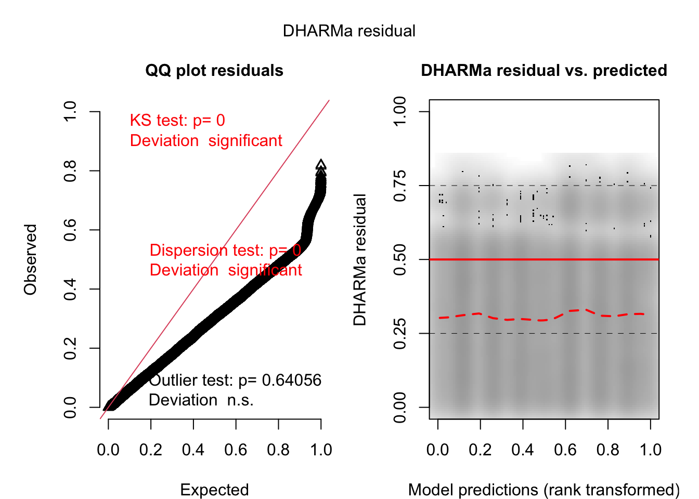
testDispersion(sim_res)
DHARMa nonparametric dispersion test via sd of residuals fitted vs.
simulated
data: simulationOutput
dispersion = 6.895e-11, p-value < 2.2e-16
alternative hypothesis: two.sidedtestZeroInflation(sim_res)
DHARMa zero-inflation test via comparison to expected zeros with
simulation under H0 = fitted model
data: simulationOutput
ratioObsSim = 1.6609, p-value = 0.016
alternative hypothesis: two.sidedlibrary(glmmTMB)
model_final_thesis <- glmmTMB(
vm ~ treat + ag + sg + yr + (1 | rc),
data = orc_matched,
family = nbinom2,
weights = weights,
control = glmmTMBControl(optimizer = optim, optArgs = list(method = "BFGS"))
)
summary(model_final_thesis) Family: nbinom2 ( log )
Formula: vm ~ treat + ag + sg + yr + (1 | rc)
Data: orc_matched
Weights: weights
AIC BIC logLik -2*log(L) df.resid
3041.7 3110.0 -1511.9 3023.7 14511
Random effects:
Conditional model:
Groups Name Variance Std.Dev.
rc (Intercept) 19.52 4.418
Number of obs: 14520, groups: rc, 24
Dispersion parameter for nbinom2 family (): 2.58e+08
Conditional model:
Estimate Std. Error z value Pr(>|z|)
(Intercept) -1.416375 0.934642 -1.515 0.130
treat 0.290602 0.051777 5.613 1.99e-08 ***
ag.L 0.029777 0.066240 0.450 0.653
ag.Q 0.017940 0.042567 0.421 0.673
sgF -0.105184 0.102124 -1.030 0.303
yr.L -0.008090 0.037462 -0.216 0.829
yr.Q -0.008458 0.039255 -0.215 0.829
---
Signif. codes: 0 '***' 0.001 '**' 0.01 '*' 0.05 '.' 0.1 ' ' 1fix_eff <- summary(model_final_thesis)$coefficients$cond
results_final <- data.frame(
Variable = rownames(fix_eff),
IRR = exp(fix_eff[, "Estimate"]),
Lower_CI = exp(fix_eff[, "Estimate"] - 1.96 * fix_eff[, "Std. Error"]),
Upper_CI = exp(fix_eff[, "Estimate"] + 1.96 * fix_eff[, "Std. Error"]),
P_Value = fix_eff[, "Pr(>|z|)"]
)
print(results_final) Variable IRR Lower_CI Upper_CI P_Value
(Intercept) (Intercept) 0.2425918 0.03884119 1.515164 1.296662e-01
treat treat 1.3372328 1.20818531 1.480064 1.993339e-08
ag.L ag.L 1.0302247 0.90478976 1.173049 6.530468e-01
ag.Q ag.Q 1.0181020 0.93660717 1.106688 6.734231e-01
sgF sgF 0.9001589 0.73686691 1.099637 3.030295e-01
yr.L yr.L 0.9919424 0.92171814 1.067517 8.290195e-01
yr.Q yr.Q 0.9915779 0.91814800 1.070880 8.294083e-01sim_res1b <- simulateResiduals(model_final_thesis, n = 5000)
plot(sim_res1b)
testDispersion(sim_res1b)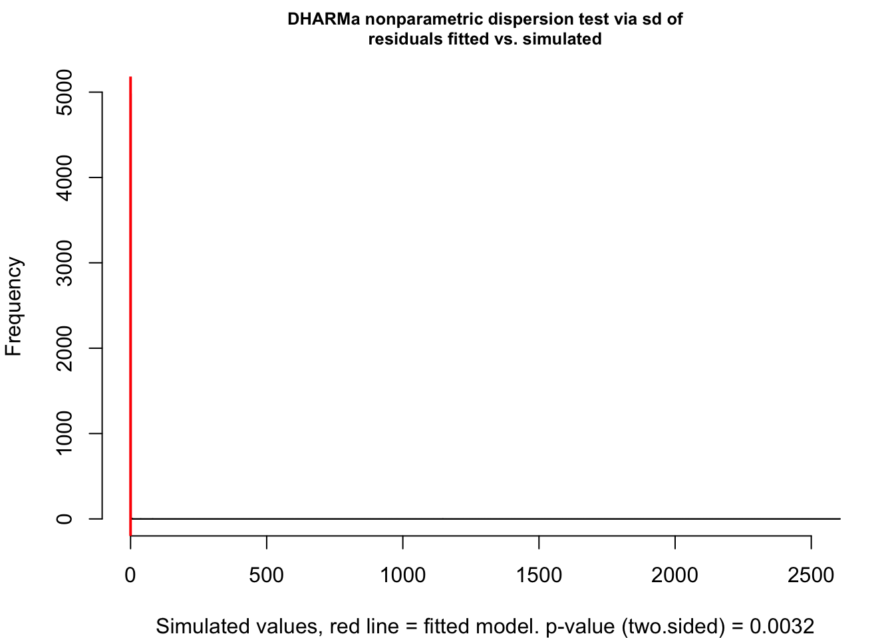
DHARMa nonparametric dispersion test via sd of residuals fitted vs.
simulated
data: simulationOutput
dispersion = 4.2272e-11, p-value = 0.0032
alternative hypothesis: two.sidedtestZeroInflation(sim_res1b)
DHARMa zero-inflation test via comparison to expected zeros with
simulation under H0 = fitted model
data: simulationOutput
ratioObsSim = 1.6516, p-value = 0.0268
alternative hypothesis: two.sided# naive weighted mean comparison to double-check the 33% increase; close to the IRR ?:!
library(weights)
wtd.mean(
orc_matched$vm[orc_matched$treat == 1],
weights = orc_matched$weights[orc_matched$treat == 1]
)[1] 0.2538567wtd.mean(
orc_matched$vm[orc_matched$treat == 0],
weights = orc_matched$weights[orc_matched$treat == 0]
)[1] 0.06721763plot(sim_res1b)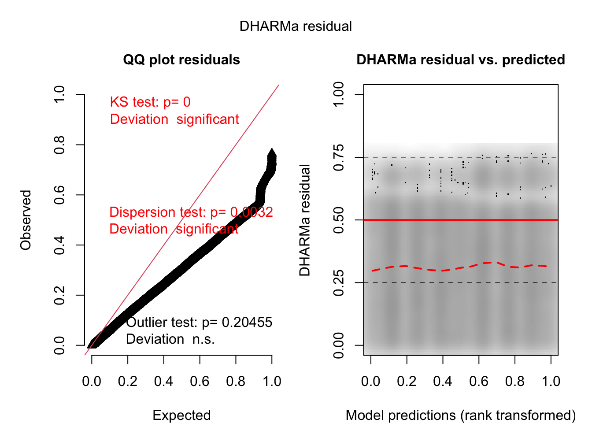
testDispersion(sim_res1b)
DHARMa nonparametric dispersion test via sd of residuals fitted vs.
simulated
data: simulationOutput
dispersion = 4.2272e-11, p-value = 0.0032
alternative hypothesis: two.sidedtestZeroInflation(sim_res1b)
DHARMa zero-inflation test via comparison to expected zeros with
simulation under H0 = fitted model
data: simulationOutput
ratioObsSim = 1.6516, p-value = 0.0268
alternative hypothesis: two.sidedlibrary(cobalt)
love_plot <- love.plot(
m.out,
binary = "std",
thresholds = c(m = .1),
var.order = "unadjusted",
abs = TRUE,
colors = c("red", "blue"),
shapes = c("circle", "triangle"),
sample.names = c("Original", "Matched"),
stars = "std"
)
print(love_plot)
bal_table <- bal.tab(m.out, un = TRUE)
print(bal_table)Balance Measures
Type Diff.Un Diff.Adj
distance Distance 0.0911 0
ag_21 Binary -0.0072 0
ag_42 Binary 0.0314 0
ag_57.5 Binary -0.0242 0
sg_F Binary 0.0065 0
yr_2023 Binary -0.0027 0
yr_2024 Binary 0.0026 0
yr_2025 Binary 0.0001 0
Sample sizes
Control Treated
All 58207 7260
Matched 7260 7260
Unmatched 50947 0love.plot(
m.out,
binary = "std",
stats = "m",
thresholds = c(m = .1),
abs = TRUE,
line = TRUE,
sample.names = c("Original (Pre-Match)", "Matched (Final Sample)"),
colors = c("#d62728", "#1f77b4"),
shapes = c(21, 24),
title = "Covariate Balance Across Groups",
xlab = "Absolute Standardized Mean Differences",
)
dml_data <- as.data.frame(orc_matched)
dml_data$sg <- as.numeric(dml_data$sg)
dml_data$ag <- as.numeric(dml_data$ag)
dml_data$yr <- as.numeric(dml_data$yr)
data_dml_obj = double_ml_data_from_data_frame(
dml_data,
y_col = "vm",
d_cols = "treat",
x_cols = c("ag", "sg", "yr")
)
l_ranger = lrn("regr.ranger", num.trees = 500, max.depth = 5)
dml_model = DoubleMLPLR$new(
data_dml_obj,
ml_l = l_ranger,
ml_m = l_ranger,
n_folds = 3
) # l = target y learner ; m = treatment d learner
dml_model$fit()
print(dml_model$summary())Estimates and significance testing of the effect of target variables
Estimate. Std. Error t value Pr(>|t|)
treat 0.18658 0.01048 17.8 <2e-16 ***
---
Signif. codes: 0 '***' 0.001 '**' 0.01 '*' 0.05 '.' 0.1 ' ' 1
Estimate. Std. Error t value Pr(>|t|)
treat 0.1865815 0.01048398 17.79682 7.480299e-71dml_matrix_data <- model.matrix(
~ vm + treat + ag + sg + yr + rc - 1,
data = orc_matched
)
dml_df <- as.data.frame(dml_matrix_data)
colnames(dml_df) <- make.names(colnames(dml_df))
data_dml_adj = double_ml_data_from_data_frame(
dml_df,
y_col = "vm",
d_cols = "treat",
x_cols = setdiff(colnames(dml_df), c("vm", "treat"))
)
l_ranger = lrn("regr.ranger", num.trees = 500, max.depth = 5)
dml_model_adj = DoubleMLPLR$new(
data_dml_adj,
ml_l = l_ranger,
ml_m = l_ranger,
n_folds = 3
)
dml_model_adj$fit(store_predictions = TRUE)
dml_preds_final <- dml_model_adj$predictions$ml_l[, 1, 1]
print(paste("DML Predictions Count:", length(dml_preds_final)))[1] "DML Predictions Count: 14520"glmm_preds_final <- predict(model_final_thesis, type = "response")
plot_data <- data.frame(
Actual = as.numeric(orc_matched$vm),
GLMM = as.numeric(glmm_preds_final),
DML = as.numeric(dml_preds_final)
)
ggplot(plot_data) +
geom_density(aes(x = GLMM, fill = "GLMM (Parametric)"), alpha = 0.4) +
geom_density(aes(x = DML, fill = "DML (Machine Learning)"), alpha = 0.4) +
scale_x_log10(labels = scales::comma) +
labs(
title = "Comparison of Predicted Values (Log Scale)",
subtitle = "Revealing the distribution of low-probability GLMM predictions",
x = "Predicted Moves (Log10 Scale)",
y = "Density",
fill = "Model Type"
) +
theme_minimal() # log10 transformation for distribution of very small GLMM values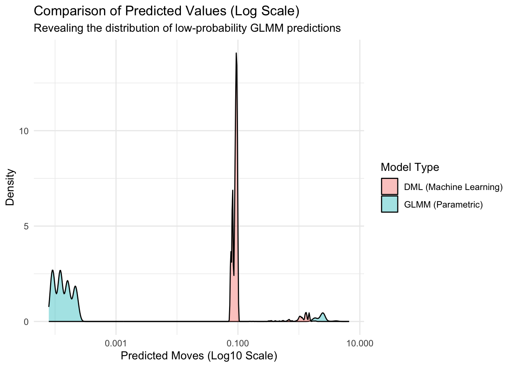
mse_glmm <- mean((plot_data$Actual - plot_data$GLMM)^2)
mse_dml <- mean((plot_data$Actual - plot_data$DML)^2)
cat("\n--- Initial Results ---\n")
--- Initial Results ---print(dml_model_adj$summary())Estimates and significance testing of the effect of target variables
Estimate. Std. Error t value Pr(>|t|)
treat 0.090705 0.006215 14.59 <2e-16 ***
---
Signif. codes: 0 '***' 0.001 '**' 0.01 '*' 0.05 '.' 0.1 ' ' 1
Estimate. Std. Error t value Pr(>|t|)
treat 0.09070513 0.006215405 14.5936 3.08484e-48cat("GLMM MSE:", round(mse_glmm, 6), "\n")GLMM MSE: 0.033648 cat("DML MSE: ", round(mse_dml, 6), "\n")DML MSE: 0.176137 summary(orc_matched$weights) Min. 1st Qu. Median Mean 3rd Qu. Max.
1 1 1 1 1 1 cat("Matching weight distribution:\n")Matching weight distribution:print(table(orc_matched$weights))
1
14520 cat("\nBy treatment group:\n")
By treatment group:print(aggregate(weights ~ treat, data = orc_matched, FUN = summary)) treat weights.Min. weights.1st Qu. weights.Median weights.Mean
1 0 1 1 1 1
2 1 1 1 1 1
weights.3rd Qu. weights.Max.
1 1 1
2 1 1cat("\nSample sizes by treatment:\n")
Sample sizes by treatment:print(table(orc_matched$treat))
0 1
7260 7260 dml_data_clustered <- DoubleMLClusterData$new(
data = as.data.frame(orc_matched),
y_col = "vm",
d_cols = "treat",
x_cols = c("ag", "sg", "yr", "rc"),
cluster_cols = "id"
)
set.seed(42569872)
dml_clustered <- DoubleMLPLR$new(
dml_data_clustered,
ml_l = lrn("regr.ranger", num.trees = 500, max.depth = 5),
ml_m = lrn("regr.ranger", num.trees = 500, max.depth = 5),
n_folds = 3
)
dml_clustered$fit()
print(dml_clustered$summary())Estimates and significance testing of the effect of target variables
Estimate. Std. Error t value Pr(>|t|)
treat 0.078614 0.005167 15.21 <2e-16 ***
---
Signif. codes: 0 '***' 0.001 '**' 0.01 '*' 0.05 '.' 0.1 ' ' 1
Estimate. Std. Error t value Pr(>|t|)
treat 0.0786137 0.005167116 15.21423 2.845424e-52library(sandwich)
library(lmtest)
dml_data_region_clustered <- DoubleMLClusterData$new(
data = as.data.frame(orc_matched),
y_col = "vm",
d_cols = "treat",
x_cols = c("ag", "sg"),
cluster_cols = c("rc", "yr")
)
set.seed(2764389)
dml_region_clustered <- DoubleMLPLR$new(
dml_data_region_clustered,
ml_l = lrn("regr.ranger", num.trees = 500, max.depth = 5),
ml_m = lrn("regr.ranger", num.trees = 500, max.depth = 5),
n_folds = 3
)
dml_region_clustered$fit()
print(dml_region_clustered$summary())Estimates and significance testing of the effect of target variables
Estimate. Std. Error t value Pr(>|t|)
treat 0.2091 0.1277 1.638 0.101
Estimate. Std. Error t value Pr(>|t|)
treat 0.2091398 0.1276979 1.637769 0.1014698dml_data_region <- DoubleMLClusterData$new(
data = as.data.frame(orc_matched),
y_col = "vm",
d_cols = "treat",
x_cols = c("ag", "sg", "yr"),
cluster_cols = "rc"
)
set.seed(6450835)
dml_region <- DoubleMLPLR$new(
dml_data_region,
ml_l = lrn("regr.ranger", num.trees = 500, max.depth = 5),
ml_m = lrn("regr.ranger", num.trees = 500, max.depth = 5),
n_folds = 3
)
dml_region$fit()
print(dml_region$summary())Estimates and significance testing of the effect of target variables
Estimate. Std. Error t value Pr(>|t|)
treat 0.1943 0.1013 1.919 0.055 .
---
Signif. codes: 0 '***' 0.001 '**' 0.01 '*' 0.05 '.' 0.1 ' ' 1
Estimate. Std. Error t value Pr(>|t|)
treat 0.1943492 0.1012809 1.918914 0.05499526dml_data_yr <- DoubleMLClusterData$new(
data = as.data.frame(orc_matched),
y_col = "vm",
d_cols = "treat",
x_cols = c("ag", "sg", "rc"),
cluster_cols = "yr"
)
set.seed(69543)
dml_yearz <- DoubleMLPLR$new(
dml_data_yr,
ml_l = lrn("regr.ranger", num.trees = 500, max.depth = 5),
ml_m = lrn("regr.ranger", num.trees = 500, max.depth = 5),
n_folds = 3
)
dml_yearz$fit()
print(dml_yearz$summary())Estimates and significance testing of the effect of target variables
Estimate. Std. Error t value Pr(>|t|)
treat 0.13004 0.01491 8.719 <2e-16 ***
---
Signif. codes: 0 '***' 0.001 '**' 0.01 '*' 0.05 '.' 0.1 ' ' 1
Estimate. Std. Error t value Pr(>|t|)
treat 0.1300352 0.01491448 8.718722 2.813599e-18dml_data_yrID <- DoubleMLClusterData$new(
data = as.data.frame(orc_matched),
y_col = "vm",
d_cols = "treat",
x_cols = c("ag", "sg", "rc", "id"),
cluster_cols = "yr"
)
set.seed(2468176)
dml_yearzID <- DoubleMLPLR$new(
dml_data_yrID,
ml_l = lrn("regr.ranger", num.trees = 500, max.depth = 5),
ml_m = lrn("regr.ranger", num.trees = 500, max.depth = 5),
n_folds = 3
)
dml_yearzID$fit()
print(dml_yearzID$summary())Estimates and significance testing of the effect of target variables
Estimate. Std. Error t value Pr(>|t|)
treat 0.08137 0.01173 6.936 4.04e-12 ***
---
Signif. codes: 0 '***' 0.001 '**' 0.01 '*' 0.05 '.' 0.1 ' ' 1
Estimate. Std. Error t value Pr(>|t|)
treat 0.08137193 0.01173222 6.935764 4.04033e-12dml_data_IDz <- DoubleMLClusterData$new(
data = as.data.frame(orc_matched),
y_col = "vm",
d_cols = "treat",
x_cols = c(
"ag",
"sg",
"rc",
"yr",
"subclass",
"id",
"a1",
"a2",
"a4",
"a5",
"a7",
"a8"
),
cluster_cols = "distance"
)
set.seed(4568937)
dml_IDz <- DoubleMLPLR$new(
dml_data_IDz,
ml_l = lrn("regr.ranger", num.trees = 500, max.depth = 5),
ml_m = lrn("regr.ranger", num.trees = 500, max.depth = 5),
n_folds = 3
)
dml_IDz$fit()
print(dml_IDz$summary())Estimates and significance testing of the effect of target variables
Estimate. Std. Error t value Pr(>|t|)
treat 0.12669 0.01854 6.833 8.29e-12 ***
---
Signif. codes: 0 '***' 0.001 '**' 0.01 '*' 0.05 '.' 0.1 ' ' 1
Estimate. Std. Error t value Pr(>|t|)
treat 0.1266875 0.01853918 6.8335 8.286776e-12ml_g <- lrn("regr.ranger", num.trees = 500, max.depth = 5)
ml_m <- lrn("classif.ranger", num.trees = 500, max.depth = 5)
x_cols_all <- c("ag", "sg", "rc", "yr", "a1", "a2", "a4", "a5", "a7", "a8")
orc_matched[,
(c("sg", "rc", "yr")) := lapply(.SD, as.factor),
.SDcols = c("sg", "rc", "yr")
]
run_dml_analysis <- function(data, x_cols, tag, cluster_var) {
dml_data <- DoubleMLClusterData$new(
data = as.data.frame(data),
y_col = "vm",
d_cols = "treat",
x_cols = x_cols,
cluster_cols = cluster_var
)
set.seed(117504871)
obj_ate <- DoubleMLIRM$new(
dml_data,
ml_g = ml_g,
ml_m = ml_m,
n_folds = 3,
score = "ATE"
)
obj_ate$fit()
set.seed(16254911)
obj_atte <- DoubleMLIRM$new(
dml_data,
ml_g = ml_g,
ml_m = ml_m,
n_folds = 3,
score = "ATTE"
)
obj_atte$fit()
extract <- function(obj, est) {
ci <- obj$confint(level = 0.95)
data.table(
method = paste0("Clustered by ", cluster_var),
group = tag,
estimand = est,
effect = as.numeric(obj$coef),
se = as.numeric(obj$se),
p_value = as.numeric(obj$pval),
ci_low = as.numeric(ci[1, 1]),
ci_high = as.numeric(ci[1, 2])
)
}
return(rbind(extract(obj_ate, "ATE"), extract(obj_atte, "ATTE")))
}
res_pool_ID <- run_dml_analysis(orc_matched, x_cols_all, "Pooled", "id")
years <- sort(unique(orc_matched$yr))
x_cols_yearly <- setdiff(x_cols_all, "yr")
res_year_ID <- rbindlist(lapply(years, function(yy) {
run_dml_analysis(orc_matched[yr == yy], x_cols_yearly, as.character(yy), "id")
}))
res_pool_SUB <- run_dml_analysis(orc_matched, x_cols_all, "Pooled", "subclass")
res_year_SUB <- rbindlist(lapply(years, function(yy) {
run_dml_analysis(
orc_matched[yr == yy],
x_cols_yearly,
as.character(yy),
"subclass"
)
}))
final_comparison_pool <- rbind(res_pool_ID, res_pool_SUB)
final_comparison_year <- rbind(res_year_ID, res_year_SUB)
knitr::kable(
final_comparison_pool,
digits = 4,
caption = "Pooled: ID vs Subclass Clustering"
)| method | group | estimand | effect | se | p_value | ci_low | ci_high |
|---|---|---|---|---|---|---|---|
| Clustered by id | Pooled | ATE | 0.1166 | 0.0049 | 0 | 0.1070 | 0.1262 |
| Clustered by id | Pooled | ATTE | 0.1477 | 0.0081 | 0 | 0.1319 | 0.1635 |
| Clustered by subclass | Pooled | ATE | 0.1192 | 0.0049 | 0 | 0.1095 | 0.1289 |
| Clustered by subclass | Pooled | ATTE | 0.1474 | 0.0081 | 0 | 0.1316 | 0.1632 |
knitr::kable(
final_comparison_year,
digits = 4,
caption = "Yearly: ID vs Subclass Clustering"
)| method | group | estimand | effect | se | p_value | ci_low | ci_high |
|---|---|---|---|---|---|---|---|
| Clustered by id | 2023 | ATE | 0.0834 | 0.0077 | 0 | 0.0682 | 0.0985 |
| Clustered by id | 2023 | ATTE | 0.1087 | 0.0129 | 0 | 0.0835 | 0.1340 |
| Clustered by id | 2024 | ATE | 0.1406 | 0.0098 | 0 | 0.1215 | 0.1597 |
| Clustered by id | 2024 | ATTE | 0.1876 | 0.0165 | 0 | 0.1553 | 0.2198 |
| Clustered by id | 2025 | ATE | 0.1221 | 0.0083 | 0 | 0.1058 | 0.1383 |
| Clustered by id | 2025 | ATTE | 0.1578 | 0.0137 | 0 | 0.1311 | 0.1846 |
| Clustered by subclass | 2023 | ATE | 0.0839 | 0.0077 | 0 | 0.0687 | 0.0991 |
| Clustered by subclass | 2023 | ATTE | 0.1072 | 0.0128 | 0 | 0.0821 | 0.1323 |
| Clustered by subclass | 2024 | ATE | 0.1397 | 0.0097 | 0 | 0.1207 | 0.1587 |
| Clustered by subclass | 2024 | ATTE | 0.1868 | 0.0165 | 0 | 0.1545 | 0.2192 |
| Clustered by subclass | 2025 | ATE | 0.1228 | 0.0083 | 0 | 0.1066 | 0.1391 |
| Clustered by subclass | 2025 | ATTE | 0.1564 | 0.0136 | 0 | 0.1297 | 0.1830 |
library(DHARMa)
run_dml_extended <- function(data, x_cols, tag, cluster_var) {
dml_data <- DoubleMLClusterData$new(
data = as.data.frame(data),
y_col = "vm",
d_cols = "treat",
x_cols = x_cols,
cluster_cols = cluster_var
)
set.seed(68235576)
obj_ate <- DoubleMLIRM$new(dml_data, ml_g = ml_g, ml_m = ml_m, n_folds = 3)
obj_ate$fit(store_predictions = TRUE)
preds_g0 <- obj_ate$predictions$ml_g0[, 1, 1]
preds_g1 <- obj_ate$predictions$ml_g1[, 1, 1]
dml_fitted <- ifelse(data$treat == 1, preds_g1, preds_g0)
current_mse <- mean((data$vm - dml_fitted)^2)
set.seed(65196489)
sim_response <- replicate(250, rpois(length(dml_fitted), dml_fitted))
dharma_res <- createDHARMa(
simulatedResponse = sim_response,
observedResponse = data$vm,
fittedPredictedResponse = dml_fitted,
integerResponse = TRUE
)
ci <- obj_ate$confint(level = 0.95)
res_table <- data.table(
method = paste0("Clustered by ", cluster_var),
group = tag,
effect = as.numeric(obj_ate$coef),
se = as.numeric(obj_ate$se),
p_value = as.numeric(obj_ate$pval),
mse = current_mse,
ci_low = as.numeric(ci[1, 1]),
ci_high = as.numeric(ci[1, 2])
)
return(list(table = res_table, dharma = dharma_res, fitted = dml_fitted))
}
ml_g <- lrn("regr.ranger", num.trees = 500, max.depth = 5)
ml_m <- lrn("classif.ranger", num.trees = 500, max.depth = 5)
pooled_analysis_SUB <- run_dml_extended(
orc_matched,
x_cols_all,
"Pooled",
"subclass"
)
cat("\n--- DML Model Summary (Clustered by Subclass) ---\n")
--- DML Model Summary (Clustered by Subclass) ---print(pooled_analysis_SUB$table) method group effect se p_value mse
<char> <char> <num> <num> <num> <num>
1: Clustered by subclass Pooled 0.1173772 0.004912666 3.642154e-126 0.2056631
ci_low ci_high
<num> <num>
1: 0.1077485 0.1270058cat("\n--- DHARMa Diagnostics ---\n")
--- DHARMa Diagnostics ---plot(pooled_analysis_SUB$dharma)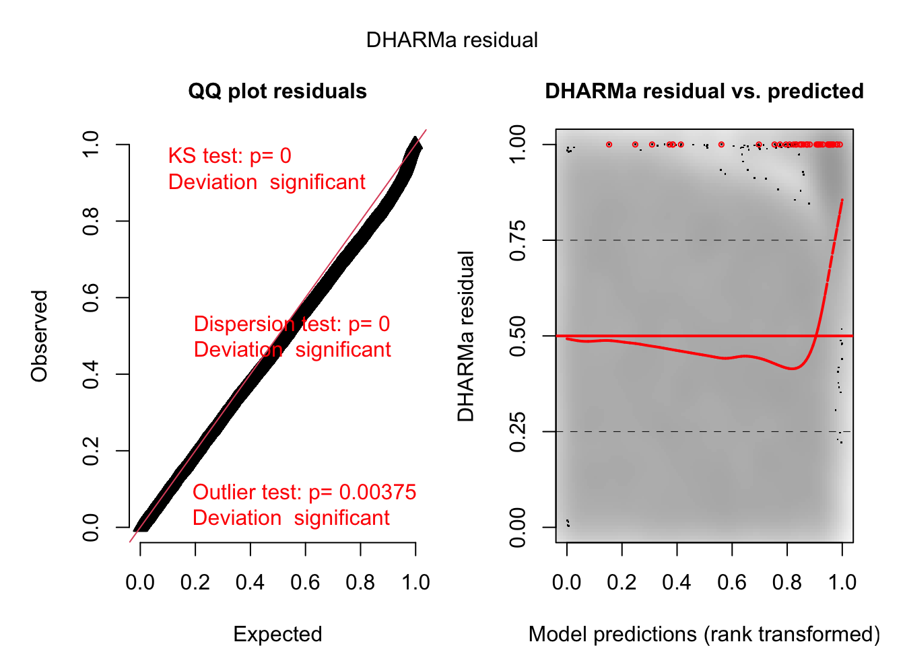
testOutliers(pooled_analysis_SUB$dharma, type = "bootstrap")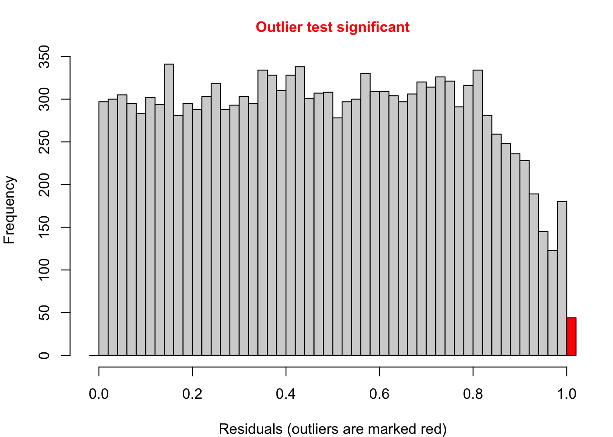
DHARMa bootstrapped outlier test
data: pooled_analysis_SUB$dharma
outliers at both margin(s) = 44, observations = 14520, p-value <
2.2e-16
alternative hypothesis: two.sided
percent confidence interval:
0.001203512 0.002377755
sample estimates:
outlier frequency (expected: 0.00176721763085399 )
0.003030303 testDispersion(pooled_analysis_SUB$dharma)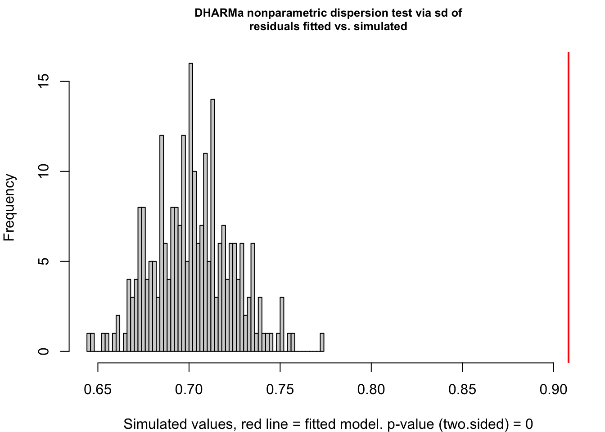
DHARMa nonparametric dispersion test via sd of residuals fitted vs.
simulated
data: simulationOutput
dispersion = 1.2939, p-value < 2.2e-16
alternative hypothesis: two.sidedtestZeroInflation(pooled_analysis_SUB$dharma)
DHARMa zero-inflation test via comparison to expected zeros with
simulation under H0 = fitted model
data: simulationOutput
ratioObsSim = 1.0664, p-value < 2.2e-16
alternative hypothesis: two.sidedcat("\n--- Model Performance Comparison ---\n")
--- Model Performance Comparison ---cat("GLMM MSE:", round(mse_glmm, 6), "\n")GLMM MSE: 0.033648 cat("DML MSE: ", round(pooled_analysis_SUB$table$mse, 6), "\n")DML MSE: 0.205663 ml_g <- lrn("regr.ranger", num.trees = 500, max.depth = 5)
ml_m <- lrn("classif.ranger", num.trees = 500, max.depth = 5)
x_cols_all <- c("ag", "sg", "rc", "yr", "a1", "a2", "a4", "a5", "a7", "a8")
x_cols_with_dist <- c(x_cols_all, "distance")
years <- sort(unique(orc_matched$yr))
run_dml_stable <- function(data, x_cols, tag, cluster_var) {
dml_data <- DoubleMLClusterData$new(
data = as.data.frame(data),
y_col = "vm",
d_cols = "treat",
x_cols = x_cols,
cluster_cols = cluster_var
)
set.seed(54893769)
obj_ate <- DoubleMLIRM$new(
dml_data,
ml_g = ml_g,
ml_m = ml_m,
n_folds = 3,
score = "ATE"
)$fit(store_predictions = TRUE)
set.seed(6549875)
obj_atte <- DoubleMLIRM$new(
dml_data,
ml_g = ml_g,
ml_m = ml_m,
n_folds = 3,
score = "ATTE"
)$fit(store_predictions = TRUE)
# mse
preds_g0 <- obj_ate$predictions$ml_g0[, 1, 1]
preds_g1 <- obj_ate$predictions$ml_g1[, 1, 1]
dml_fitted <- ifelse(data$treat == 1, preds_g1, preds_g0)
calc_mse <- mean((data$vm - dml_fitted)^2)
extract <- function(obj, est) {
ci <- obj$confint(level = 0.95)
data.table(
method = paste0("Clustered by ", cluster_var),
group = tag,
estimand = est,
effect = as.numeric(obj$coef),
se = as.numeric(obj$se),
p_value = as.numeric(obj$pval),
mse = calc_mse,
ci_low = as.numeric(ci[1, 1]),
ci_high = as.numeric(ci[1, 2])
)
}
return(rbind(extract(obj_ate, "ATE"), extract(obj_atte, "ATTE")))
}
all_results_list <- list()
for (yy in years) {
x_yearly <- setdiff(x_cols_all, "yr")
all_results_list[[paste0("ID_", yy)]] <- run_dml_stable(
orc_matched[yr == yy],
x_yearly,
as.character(yy),
"id"
)
all_results_list[[paste0("SUB_", yy)]] <- run_dml_stable(
orc_matched[yr == yy],
x_yearly,
as.character(yy),
"subclass"
)
}
all_results_list[["Pool_23_25_ID"]] <- run_dml_stable(
orc_matched,
x_cols_all,
"Pool (23-25)",
"id"
)
all_results_list[["Pool_23_25_SUB"]] <- run_dml_stable(
orc_matched,
x_cols_all,
"Pool (23-25)",
"subclass"
)
all_results_list[["Pool_23_24_SUB"]] <- run_dml_stable(
orc_matched[yr %in% c("2023", "2024")],
x_cols_all,
"Pool (23-24)",
"subclass"
)
all_results_list[["Pool_24_25_SUB"]] <- run_dml_stable(
orc_matched[yr %in% c("2024", "2025")],
x_cols_all,
"Pool (24-25)",
"subclass"
)
all_results_list[["Pool_Dist_Adj"]] <- run_dml_stable(
orc_matched,
x_cols_with_dist,
"Pool (Dist-Adj)",
"subclass"
)
m_results <- rbindlist(all_results_list, fill = TRUE)
m_results[, t_stat := abs(effect / se)]
m_results[, df := 1000] # DF for SEs
m_results[, RV := round(t_stat / sqrt(df), 4)]
m_results[,
sig := cut(
p_value,
breaks = c(-Inf, 0.01, 0.05, 0.1, Inf),
label = c("***", "**", "*", "")
)
]
knitr::kable(
m_results[
order(group, method),
.(group, method, estimand, effect, se, sig, RV, mse)
],
digits = 4,
caption = "Final Consolidated DML Results"
)| group | method | estimand | effect | se | sig | RV | mse |
|---|---|---|---|---|---|---|---|
| 2023 | Clustered by id | ATE | 0.0836 | 0.0077 | *** | 0.3445 | 0.1636 |
| 2023 | Clustered by id | ATTE | 0.1069 | 0.0128 | *** | 0.2650 | 0.1636 |
| 2023 | Clustered by subclass | ATE | 0.0835 | 0.0077 | *** | 0.3410 | 0.1640 |
| 2023 | Clustered by subclass | ATTE | 0.1092 | 0.0129 | *** | 0.2670 | 0.1640 |
| 2024 | Clustered by id | ATE | 0.1373 | 0.0095 | *** | 0.4550 | 0.2288 |
| 2024 | Clustered by id | ATTE | 0.1873 | 0.0165 | *** | 0.3583 | 0.2288 |
| 2024 | Clustered by subclass | ATE | 0.1391 | 0.0098 | *** | 0.4510 | 0.2284 |
| 2024 | Clustered by subclass | ATTE | 0.1871 | 0.0165 | *** | 0.3579 | 0.2284 |
| 2025 | Clustered by id | ATE | 0.1222 | 0.0082 | *** | 0.4688 | 0.2253 |
| 2025 | Clustered by id | ATTE | 0.1546 | 0.0136 | *** | 0.3584 | 0.2253 |
| 2025 | Clustered by subclass | ATE | 0.1227 | 0.0081 | *** | 0.4761 | 0.2252 |
| 2025 | Clustered by subclass | ATTE | 0.1559 | 0.0136 | *** | 0.3624 | 0.2252 |
| Pool (23-24) | Clustered by subclass | ATE | 0.1143 | 0.0063 | *** | 0.5749 | 0.2081 |
| Pool (23-24) | Clustered by subclass | ATTE | 0.1398 | 0.0100 | *** | 0.4410 | 0.2081 |
| Pool (23-25) | Clustered by id | ATE | 0.1173 | 0.0049 | *** | 0.7550 | 0.2067 |
| Pool (23-25) | Clustered by id | ATTE | 0.1476 | 0.0081 | *** | 0.5768 | 0.2067 |
| Pool (23-25) | Clustered by subclass | ATE | 0.1183 | 0.0050 | *** | 0.7545 | 0.2081 |
| Pool (23-25) | Clustered by subclass | ATTE | 0.1481 | 0.0081 | *** | 0.5786 | 0.2081 |
| Pool (24-25) | Clustered by subclass | ATE | 0.1309 | 0.0063 | *** | 0.6605 | 0.2327 |
| Pool (24-25) | Clustered by subclass | ATTE | 0.1656 | 0.0103 | *** | 0.5090 | 0.2327 |
| Pool (Dist-Adj) | Clustered by subclass | ATE | 0.1220 | 0.0052 | *** | 0.7456 | 0.2242 |
| Pool (Dist-Adj) | Clustered by subclass | ATTE | 0.1514 | 0.0083 | *** | 0.5787 | 0.2242 |
plot_data1b <- copy(m_results)
plot_data1b[,
group := factor(
group,
levels = rev(c(
as.character(years),
"Pool (23-24)",
"Pool (24-25)",
"Pool (23-25)",
"Pool (Dist-Adj)"
))
)
]
ggplot(plot_data1b, aes(x = effect, y = group, color = method)) +
geom_vline(xintercept = 0, linetype = "dashed", alpha = 0.5) +
geom_errorbarh(
aes(xmin = ci_low, xmax = ci_high),
height = 0.3,
position = position_dodge(width = 0.6)
) +
geom_point(position = position_dodge(width = 0.6), size = 3) +
facet_wrap(~estimand) +
scale_color_brewer(palette = "Set1") +
labs(
title = "DMLIRM Effect Stability",
x = "Average Policy Effects of Treatment Variable",
y = " Computational Model"
) +
theme_minimal()
set.seed(5469257)
m.out1a <- matchit(
treat ~ ag + sg + yr,
data = orc,
method = "nearest",
distance = "glm",
)
orc_matched1b <- match.data(m.out1a)
love_plot1b <- love.plot(
m.out1a,
binary = "std",
thresholds = c(m = .1),
abs = TRUE,
stars = "std",
line = TRUE,
sample.names = c("Original (Pre-Match)", "Matched (Final Sample)"),
colors = c("#d62728", "#1f77b4"),
title = "Covariate Balance"
)
print(love_plot1b)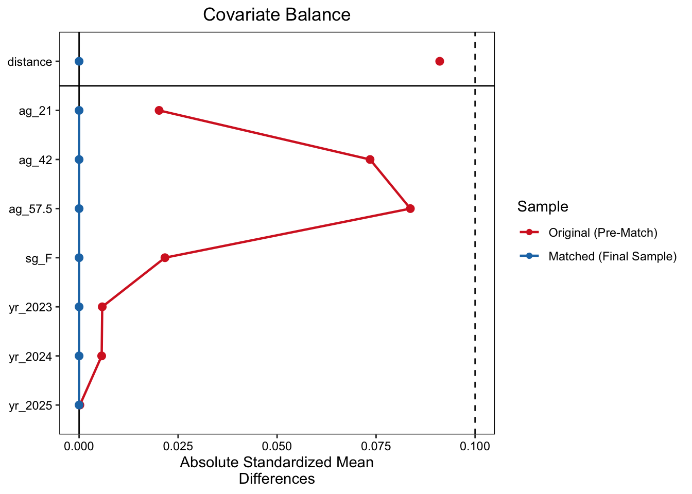
model_final_thesis1b <- glmmTMB(
vm ~ treat + ag + sg + yr + (1 | rc),
data = orc_matched1b,
family = nbinom2,
weights = weights,
control = glmmTMBControl(optimizer = optim, optArgs = list(method = "BFGS"))
)
fix_eff1b <- summary(model_final_thesis1b)$coefficients$cond
results_final1b <- data.frame(
Variable = rownames(fix_eff1b),
IRR = exp(fix_eff1b[, "Estimate"]),
P_Value = fix_eff1b[, "Pr(>|z|)"]
)
print(results_final1b) Variable IRR P_Value
(Intercept) (Intercept) 0.2425918 1.296662e-01
treat treat 1.3372328 1.993339e-08
ag.L ag.L 1.0302247 6.530468e-01
ag.Q ag.Q 1.0181020 6.734231e-01
sgF sgF 0.9001589 3.030295e-01
yr.L yr.L 0.9919424 8.290195e-01
yr.Q yr.Q 0.9915779 8.294083e-01# DML robustness test confirms the GLMM via non-linear RF ?:!
dml_data1b <- copy(orc_matched1b)
dml_data1b[, `:=`(
sg = as.numeric(sg),
ag = as.numeric(ag),
yr = as.numeric(yr)
)]
data_dml_obj1b = double_ml_data_from_data_frame(
as.data.frame(dml_data1b),
y_col = "vm",
d_cols = "treat",
x_cols = c("ag", "sg", "yr")
)
l_ranger1b = lrn("regr.ranger", num.trees = 500, max.depth = 5) # nuisance param
dml_model1b = DoubleMLPLR$new(
data_dml_obj1b,
ml_l = l_ranger1b,
ml_m = l_ranger1b,
n_folds = 3
)
dml_model1b$fit()
print(dml_model1b$summary())Estimates and significance testing of the effect of target variables
Estimate. Std. Error t value Pr(>|t|)
treat 0.18635 0.01049 17.76 <2e-16 ***
---
Signif. codes: 0 '***' 0.001 '**' 0.01 '*' 0.05 '.' 0.1 ' ' 1
Estimate. Std. Error t value Pr(>|t|)
treat 0.1863547 0.01049039 17.76433 1.335209e-70fit_raw <- glm(vm ~ treat, data = orc, family = poisson()) # baseline
ate_raw <- exp(coef(fit_raw)["treat"])
# adjusted gcomp log/poisson of outcome via treatment and covariates
fit_adj <- glm(vm ~ treat + ag + sg + yr + rc, data = orc, family = poisson())
# ATE of marginality
data_t1 <- copy(orc)[, treat := 1]
data_t0 <- copy(orc)[, treat := 0]
ate_gcomp <- mean(predict(fit_adj, data_t1, type = "response")) /
mean(predict(fit_adj, data_t0, type = "response"))
m_near <- matchit(
treat ~ ag + sg + yr + rc,
data = orc,
method = "nearest",
distance = "glm"
) # PSM
d_near <- match.data(m_near)
# psm subclassification: 'subclass' blocks
m_sub <- matchit(
treat ~ ag + sg + yr + rc,
data = orc,
method = "subclass",
subclass = 10
)
d_sub <- match.data(m_sub)
library(WeightIt)
library(survey)
w_ipw <- weightit(
treat ~ ag + sg + yr + rc,
data = orc,
method = "ps",
estimand = "ATE"
)
fit_ipw <- glm(
vm ~ treat,
data = orc,
weights = w_ipw$weights,
family = poisson()
)
library(AIPW)
library(SuperLearner)
library(glmmTMB)
library(pscl)
results_list <- list()
results_list[["Baseline_Raw"]] <- exp(coef(glm(
vm ~ treat,
data = orc,
family = poisson
))["treat"])
fit_adj <- glm(vm ~ treat + ag + sg + yr + rc, data = orc, family = poisson)
results_list[["Adjusted_GComp"]] <- exp(coef(fit_adj)["treat"])
m_near <- matchit(treat ~ ag + sg + yr + rc, data = orc, method = "nearest")
d_near <- match.data(m_near)
results_list[["PSM_Nearest"]] <- exp(fixef(glmmTMB(
vm ~ treat + ag + sg + yr + (1 | rc),
data = d_near,
family = poisson
))$cond["treat"])
m_sub <- matchit(
treat ~ ag + sg + yr + rc,
data = orc,
method = "subclass",
subclass = 5
)
d_sub <- match.data(m_sub)
results_list[["PSM_Subclass"]] <- exp(fixef(glmmTMB(
vm ~ treat + ag + sg + yr + (1 | rc),
data = d_sub,
family = poisson
))$cond["treat"])
w_ipw <- weightit(
treat ~ ag + sg + yr + rc,
data = orc,
method = "ps",
estimand = "ATE"
)
results_list[["IPW_Weighted"]] <- exp(coef(glm(
vm ~ treat,
data = orc,
weights = w_ipw$weights,
family = poisson
))["treat"])
# nb given overdispersion ?:!
mod_nbin <- glmmTMB(
vm ~ treat + ag + sg + yr + (1 | rc),
data = d_near,
family = nbinom2
)
results_list[["NegBinomial"]] <- exp(fixef(mod_nbin)$cond["treat"])
# zinb
mod_zinb <- glmmTMB(
vm ~ treat + ag + sg + yr + (1 | rc),
ziformula = ~1,
data = d_near,
family = nbinom2
)
results_list[["ZINB_Model"]] <- exp(fixef(mod_zinb)$cond["treat"])
validation_table <- data.frame(
Method = names(results_list),
IRR_Estimate = unlist(results_list)
)
print(validation_table) Method IRR_Estimate
Baseline_Raw.treat Baseline_Raw 4.273060
Adjusted_GComp.treat Adjusted_GComp 1.338768
PSM_Nearest.treat PSM_Nearest 1.349855
PSM_Subclass.treat PSM_Subclass 1.339447
IPW_Weighted.treat IPW_Weighted 1.338755
NegBinomial.treat NegBinomial 1.349856
ZINB_Model.treat ZINB_Model 1.349856library(AIPW)
library(randomForest)
library(gbm3)
library(SuperLearner)
sl_libs <- c("SL.glmnet", "SL.xgboost", "SL.glm", "SL.mean")
cov <- c("ag", "sg", "yr", "rg")
aipw_obj1a <- AIPW$new(
Y = orc_matched$vm,
A = orc_matched$treat,
W = subset(orc_matched, select = cov),
Q.SL.library = sl_libs,
g.SL.library = sl_libs,
k_split = 10,
verbose = TRUE
)
aipw_obj1a$fit()
aipw_obj1a$stratified_fit()
aipw_obj1a$summary() Estimate SE 95% LCL 95% UCL N
Mean of Exposure 0.173 0.00580 0.1612 0.1839 7260
Mean of Control 0.128 0.00430 0.1191 0.1360 7260
Mean Difference 0.045 0.00302 0.0390 0.0509 14520
ATT Mean Difference 0.066 0.00461 0.0569 0.0750 14520
ATC Mean Difference 0.024 0.00206 0.0199 0.0280 14520aipw_obj1a$plot.p_score(print.ip_weights = TRUE)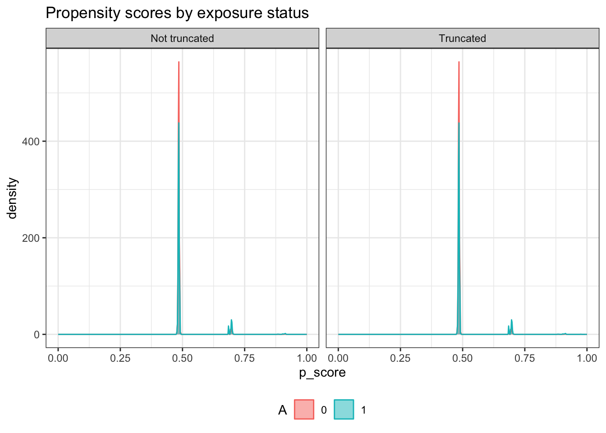
aipw_obj1a$plot.ip_weights()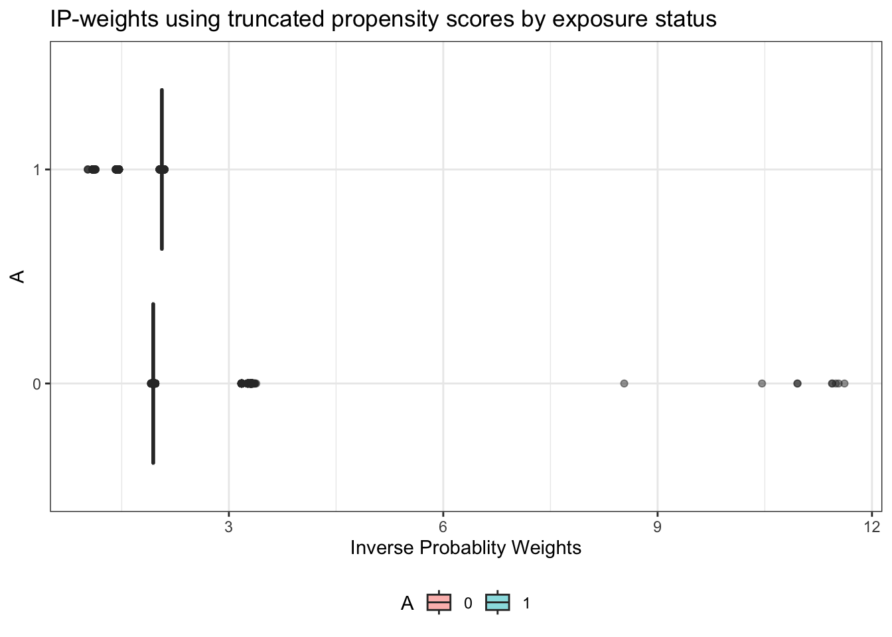
orcmatch_temp <- copy(orc_matched1b)
orcmatch_temp[, weights := NULL]
orcmatch_temp[, treat := NULL]
orcmatch_temp[, distance := NULL]
orcmatch_temp[, subclass := NULL]
orcmatch_temp[,
ag := fcase(
ag == 21 , "21" ,
ag == 42 , "42" ,
ag == 57.5 , "57.5"
)
]
orcmatch_temp[, rc := as.factor(rc)]
orcmatch_temp[,
ag := factor(ag, levels = c("21", "42", "57.5"), ordered = TRUE)
]
orcmatch_temp[, sg := factor(sg)]
orcmatch_temp[, yr := factor(yr, levels = sort(unique(yr)), ordered = TRUE)]
orcmatch_temp$norm_weights <- orcmatch_temp$np / mean(orcmatch_temp$np)
str(orcmatch_temp[, .(yr, norm_weights, ag, sg)])Classes 'matchdata', 'data.table' and 'data.frame': 14520 obs. of 4 variables:
$ yr : Ord.factor w/ 3 levels "2023"<"2024"<..: 1 1 1 1 1 1 1 1 1 1 ...
$ norm_weights: num 0.877 0.232 1.058 1.161 0.413 ...
$ ag : Ord.factor w/ 3 levels "21"<"42"<"57.5": 2 2 2 2 3 3 3 3 2 2 ...
$ sg : Factor w/ 2 levels "M","F": 1 1 1 1 1 1 1 1 1 1 ...
- attr(*, ".internal.selfref")=<externalptr> orcmatch_temp[, treat := as.numeric(ac >= median(ac))]
modout <- matchit(
treat ~ ag + sg + yr + rg,
data = orcmatch_temp,
distance = "cbps",
estimand = "ATC",
distance.options = list(method ="exact"),
replace = FALSE
)
modout$model$coefficients Treated
(Intercept) 1.074180658
ag.L -0.023798449
ag.Q -0.002682600
sgF -0.039661234
yr.L 0.026371435
yr.Q 0.005070966
rg -1.007400078modout$model$var (Intercept) ag.L ag.Q sgF
(Intercept) 0.0053016181 1.093081e-04 2.999696e-04 -1.010579e-04
ag.L 0.0001093081 3.349526e-04 1.156739e-04 4.132592e-05
ag.Q 0.0002999696 1.156739e-04 3.644225e-04 2.836486e-05
sgF -0.0001010579 4.132592e-05 2.836486e-05 2.739531e-04
yr.L -0.0000892365 -2.470722e-05 -6.279140e-06 -5.227314e-05
yr.Q -0.0000971804 1.051907e-05 1.750383e-05 -5.736243e-06
rg -0.0011899421 1.106198e-05 1.928462e-05 1.161580e-05
yr.L yr.Q rg
(Intercept) -8.923650e-05 -9.718040e-05 -1.189942e-03
ag.L -2.470722e-05 1.051907e-05 1.106198e-05
ag.Q -6.279140e-06 1.750383e-05 1.928462e-05
sgF -5.227314e-05 -5.736243e-06 1.161580e-05
yr.L 2.962879e-04 -2.242514e-05 1.438637e-05
yr.Q -2.242514e-05 3.020457e-04 2.828130e-05
rg 1.438637e-05 2.828130e-05 3.080084e-04modout$model$deviance[1] 19886.95modout$model$J[1] 0.0005695698modout$model$mle.J[1] 0.0005744275modout$model$method[1] "exact"modout$model$termstreat ~ ag + sg + yr + rg
attr(,"variables")
list(treat, ag, sg, yr, rg)
attr(,"factors")
ag sg yr rg
treat 0 0 0 0
ag 1 0 0 0
sg 0 1 0 0
yr 0 0 1 0
rg 0 0 0 1
attr(,"term.labels")
[1] "ag" "sg" "yr" "rg"
attr(,"order")
[1] 1 1 1 1
attr(,"intercept")
[1] 1
attr(,"response")
[1] 1
attr(,".Environment")
<environment: R_GlobalEnv>
attr(,"predvars")
list(treat, ag, sg, yr, rg)
attr(,"dataClasses")
treat ag sg yr rg
"numeric" "ordered" "factor" "ordered" "numeric" modout$model$formulatreat ~ ag + sg + yr + rgmodsum <- summary(modout)
summary(modout)
Call:
matchit(formula = treat ~ ag + sg + yr + rg, data = orcmatch_temp,
distance = "cbps", distance.options = list(method = "exact"),
estimand = "ATC", replace = FALSE)
Summary of Balance for All Data:
Means Treated Means Control Std. Mean Diff. Var. Ratio eCDF Mean
distance 0.4921 0.5079 -0.3482 2.7489 0.0295
ag21 0.1485 0.1485 0.0000 . 0.0000
ag42 0.7590 0.7590 0.0000 . 0.0000
ag57.5 0.0926 0.0926 0.0000 . 0.0000
sgM 0.8986 0.8986 0.0000 . 0.0000
sgF 0.1014 0.1014 0.0000 . 0.0000
yr2023 0.3150 0.3150 0.0000 . 0.0000
yr2024 0.3023 0.3023 0.0000 . 0.0000
yr2025 0.3826 0.3826 0.0000 . 0.0000
rg 1.1069 1.0375 0.3536 2.9272 0.0174
eCDF Max
distance 0.0624
ag21 0.0000
ag42 0.0000
ag57.5 0.0000
sgM 0.0000
sgF 0.0000
yr2023 0.0000
yr2024 0.0000
yr2025 0.0000
rg 0.0624
Summary of Balance for Matched Data:
Means Treated Means Control Std. Mean Diff. Var. Ratio eCDF Mean
distance 0.4921 0.5079 -0.3482 2.7489 0.0295
ag21 0.1485 0.1485 0.0000 . 0.0000
ag42 0.7590 0.7590 0.0000 . 0.0000
ag57.5 0.0926 0.0926 0.0000 . 0.0000
sgM 0.8986 0.8986 0.0000 . 0.0000
sgF 0.1014 0.1014 0.0000 . 0.0000
yr2023 0.3150 0.3150 0.0000 . 0.0000
yr2024 0.3023 0.3023 0.0000 . 0.0000
yr2025 0.3826 0.3826 0.0000 . 0.0000
rg 1.1069 1.0375 0.3536 2.9272 0.0174
eCDF Max Std. Pair Dist.
distance 0.0624 0.3675
ag21 0.0000 0.2231
ag42 0.0000 0.1686
ag57.5 0.0000 0.0747
sgM 0.0000 0.0339
sgF 0.0000 0.0339
yr2023 0.0000 0.1135
yr2024 0.0000 0.1521
yr2025 0.0000 0.1565
rg 0.0624 0.3536
Sample Sizes:
Control Treated
All 7260 7260
Matched 7260 7260
Unmatched 0 0
Discarded 0 0modout1a <- matchit(
treat ~ ag + sg + yr + rg,
data = orcmatch_temp,
distance = "gam",
replace = TRUE
)
modsum1a <- summary(modout1a$model)
summary(modout1a$model)
Family: quasibinomial
Link function: logit
Formula:
treat ~ ag + sg + yr + rg
Parametric coefficients:
Estimate Std. Error t value Pr(>|t|)
(Intercept) -1.083370 0.078555 -13.791 <2e-16 ***
ag.L 0.024002 0.049632 0.484 0.629
ag.Q 0.002706 0.032627 0.083 0.934
sgF 0.040001 0.055542 0.720 0.471
yr.L -0.026597 0.028592 -0.930 0.352
yr.Q -0.005114 0.029792 -0.172 0.864
rg 1.016018 0.070606 14.390 <2e-16 ***
---
Signif. codes: 0 '***' 0.001 '**' 0.01 '*' 0.05 '.' 0.1 ' ' 1
R-sq.(adj) = 0.0155 Deviance explained = 1.2%
GCV = 1.3709 Scale est. = 1.0005 n = 14520p.score <- fitted(glm(
treat ~ ag + sg + yr + norm_weights,
data = orcmatch_temp,
family = binomial
))
modout1b <- matchit(
treat ~ ag + sg + yr + norm_weights,
data = orcmatch_temp,
distance = p.score
)
modsum1b <- summary(modout1b$model)
summary(modout1b$model)Length Class Mode
0 NULL NULL y1a <- orcmatch_temp[orcmatch_temp$yr == 2023, ]
y1b <- orcmatch_temp[orcmatch_temp$yr == 2024, ]
y1c <- orcmatch_temp[orcmatch_temp$yr == 2025, ]
full_mod <- lm(vm ~ . - id, data = orcmatch_temp)
backstep <- stats::step(full_mod, direction = "backward")Start: AIC=-47581.54
vm ~ (yr + ag + sg + np + ac + rg + a1 + a2 + a4 + a5 + a7 +
a8 + id + rc + norm_weights + treat) - id
Step: AIC=-47581.54
vm ~ yr + ag + sg + np + ac + rg + a1 + a2 + a4 + a5 + a7 + a8 +
rc + treat
Step: AIC=-47581.54
vm ~ yr + ag + sg + np + ac + rg + a1 + a2 + a4 + a5 + a7 + rc +
treat
Step: AIC=-47581.54
vm ~ yr + ag + sg + np + ac + a1 + a2 + a4 + a5 + a7 + rc + treat
Df Sum of Sq RSS AIC
- a5 1 0.0 545.2 -47584
- a2 1 0.0 545.3 -47583
- yr 2 0.1 545.3 -47583
- ag 2 0.1 545.3 -47583
- a7 1 0.0 545.3 -47582
- sg 1 0.0 545.3 -47582
- a1 1 0.1 545.3 -47582
<none> 545.2 -47582
- np 1 0.2 545.4 -47579
- a4 1 0.3 545.5 -47576
- treat 1 8.0 553.2 -47373
- ac 1 19.5 564.7 -47073
- rc 23 5109.5 5654.7 -13665
Step: AIC=-47583.52
vm ~ yr + ag + sg + np + ac + a1 + a2 + a4 + a7 + rc + treat
Df Sum of Sq RSS AIC
- a2 1 0.0 545.3 -47585
- yr 2 0.1 545.3 -47585
- ag 2 0.1 545.3 -47585
- a7 1 0.0 545.3 -47584
- sg 1 0.0 545.3 -47584
- a1 1 0.1 545.3 -47584
<none> 545.2 -47584
- np 1 0.2 545.4 -47581
- a4 1 0.3 545.5 -47578
- treat 1 8.0 553.2 -47375
- ac 1 19.6 564.8 -47073
- rc 23 5109.5 5654.7 -13667
Step: AIC=-47585.1
vm ~ yr + ag + sg + np + ac + a1 + a4 + a7 + rc + treat
Df Sum of Sq RSS AIC
- yr 2 0.1 545.4 -47586
- ag 2 0.1 545.4 -47586
- a7 1 0.0 545.3 -47586
- a1 1 0.0 545.3 -47586
- sg 1 0.1 545.3 -47586
<none> 545.3 -47585
- np 1 0.2 545.4 -47583
- a4 1 0.3 545.5 -47580
- treat 1 8.0 553.2 -47377
- ac 1 19.7 564.9 -47072
- rc 23 5109.8 5655.0 -13668
Step: AIC=-47586.25
vm ~ ag + sg + np + ac + a1 + a4 + a7 + rc + treat
Df Sum of Sq RSS AIC
- ag 2 0.1 545.5 -47587
- a7 1 0.0 545.4 -47587
- a1 1 0.1 545.4 -47587
- sg 1 0.1 545.4 -47587
<none> 545.4 -47586
- np 1 0.2 545.6 -47583
- a4 1 0.3 545.6 -47581
- treat 1 8.0 553.3 -47378
- ac 1 19.7 565.1 -47073
- rc 23 5120.1 5665.5 -13645
Step: AIC=-47587.37
vm ~ sg + np + ac + a1 + a4 + a7 + rc + treat
Df Sum of Sq RSS AIC
- a7 1 0.0 545.5 -47588
- a1 1 0.1 545.5 -47588
- sg 1 0.1 545.5 -47588
<none> 545.5 -47587
- np 1 0.2 545.7 -47584
- a4 1 0.3 545.7 -47582
- treat 1 7.9 553.4 -47380
- ac 1 19.7 565.2 -47074
- rc 23 5123.0 5668.5 -13642
Step: AIC=-47588.27
vm ~ sg + np + ac + a1 + a4 + rc + treat
Df Sum of Sq RSS AIC
- a1 1 0.1 545.6 -47589
- sg 1 0.1 545.6 -47588
<none> 545.5 -47588
- np 1 0.2 545.7 -47585
- a4 1 0.3 545.8 -47583
- treat 1 8.0 553.5 -47380
- ac 1 20.0 565.5 -47068
- rc 23 5123.0 5668.5 -13644
Step: AIC=-47588.87
vm ~ sg + np + ac + a4 + rc + treat
Df Sum of Sq RSS AIC
- sg 1 0.1 545.6 -47589
<none> 545.6 -47589
- np 1 0.1 545.7 -47587
- a4 1 0.2 545.8 -47584
- treat 1 7.9 553.5 -47382
- ac 1 20.0 565.6 -47067
- rc 23 5123.4 5668.9 -13644
Step: AIC=-47589.14
vm ~ np + ac + a4 + rc + treat
Df Sum of Sq RSS AIC
<none> 545.6 -47589
- np 1 0.1 545.7 -47588
- a4 1 0.2 545.9 -47585
- treat 1 7.9 553.6 -47381
- ac 1 20.1 565.7 -47067
- rc 23 5130.8 5676.5 -13627frontstep <- stats::step(
lm(vm ~ 1, data = orcmatch_temp),
scope = formula(full_mod),
direction = "forward"
)Start: AIC=-12930.38
vm ~ 1
Df Sum of Sq RSS AIC
+ rc 23 5389.0 569.8 -46968
+ rg 1 5340.7 618.1 -45831
+ ac 1 227.6 5731.2 -13494
+ treat 1 126.4 5832.3 -13240
+ np 1 89.6 5869.2 -13148
+ norm_weights 1 89.6 5869.2 -13148
+ a1 1 45.0 5913.7 -13039
+ a8 1 18.2 5940.6 -12973
+ yr 2 15.4 5943.4 -12964
+ sg 1 11.3 5947.5 -12956
+ a7 1 11.2 5947.6 -12956
+ a4 1 8.9 5949.9 -12950
+ a5 1 8.4 5950.4 -12949
+ a2 1 3.9 5954.9 -12938
+ ag 2 2.8 5956.0 -12933
<none> 5958.8 -12930
Step: AIC=-46967.87
vm ~ rc
Df Sum of Sq RSS AIC
+ ac 1 15.9938 553.80 -47379
+ treat 1 3.9094 565.88 -47066
+ a7 1 0.7024 569.09 -46984
+ a4 1 0.3932 569.40 -46976
+ a1 1 0.3331 569.46 -46974
+ a8 1 0.2641 569.53 -46973
+ a5 1 0.2088 569.59 -46971
+ np 1 0.1989 569.60 -46971
+ norm_weights 1 0.1989 569.60 -46971
+ a2 1 0.1469 569.65 -46970
+ sg 1 0.0931 569.70 -46968
<none> 569.79 -46968
+ yr 2 0.1530 569.64 -46968
+ ag 2 0.0969 569.70 -46966
Step: AIC=-47379.26
vm ~ rc + ac
Df Sum of Sq RSS AIC
+ treat 1 7.8819 545.92 -47585
+ a8 1 0.1932 553.61 -47382
+ a4 1 0.0864 553.71 -47380
+ sg 1 0.0776 553.72 -47379
+ np 1 0.0770 553.72 -47379
+ norm_weights 1 0.0770 553.72 -47379
<none> 553.80 -47379
+ yr 2 0.1402 553.66 -47379
+ a7 1 0.0472 553.75 -47379
+ ag 2 0.0987 553.70 -47378
+ a5 1 0.0169 553.78 -47378
+ a1 1 0.0114 553.79 -47378
+ a2 1 0.0004 553.80 -47377
Step: AIC=-47585.4
vm ~ rc + ac + treat
Df Sum of Sq RSS AIC
+ a8 1 0.232295 545.69 -47590
+ a4 1 0.169176 545.75 -47588
<none> 545.92 -47585
+ yr 2 0.140836 545.78 -47585
+ sg 1 0.054487 545.86 -47585
+ np 1 0.049841 545.87 -47585
+ norm_weights 1 0.049841 545.87 -47585
+ ag 2 0.116231 545.80 -47584
+ a7 1 0.034851 545.88 -47584
+ a5 1 0.015094 545.90 -47584
+ a1 1 0.000607 545.92 -47583
+ a2 1 0.000040 545.92 -47583
Step: AIC=-47589.58
vm ~ rc + ac + treat + a8
Df Sum of Sq RSS AIC
+ a4 1 0.139125 545.55 -47591
<none> 545.69 -47590
+ sg 1 0.068728 545.62 -47589
+ ag 2 0.115092 545.57 -47589
+ yr 2 0.111342 545.57 -47589
+ a7 1 0.025486 545.66 -47588
+ np 1 0.016027 545.67 -47588
+ norm_weights 1 0.016027 545.67 -47588
+ a5 1 0.009874 545.68 -47588
+ a1 1 0.004840 545.68 -47588
+ a2 1 0.000046 545.69 -47588
Step: AIC=-47591.29
vm ~ rc + ac + treat + a8 + a4
Df Sum of Sq RSS AIC
<none> 545.55 -47591
+ sg 1 0.065830 545.48 -47591
+ yr 2 0.117365 545.43 -47590
+ ag 2 0.116097 545.43 -47590
+ a7 1 0.016300 545.53 -47590
+ a5 1 0.007400 545.54 -47589
+ a1 1 0.002675 545.54 -47589
+ np 1 0.001634 545.55 -47589
+ norm_weights 1 0.001634 545.55 -47589
+ a2 1 0.000120 545.55 -47589bothstep <- stats::step(full_mod, direction = "both")Start: AIC=-47581.54
vm ~ (yr + ag + sg + np + ac + rg + a1 + a2 + a4 + a5 + a7 +
a8 + id + rc + norm_weights + treat) - id
Step: AIC=-47581.54
vm ~ yr + ag + sg + np + ac + rg + a1 + a2 + a4 + a5 + a7 + a8 +
rc + treat
Step: AIC=-47581.54
vm ~ yr + ag + sg + np + ac + rg + a1 + a2 + a4 + a5 + a7 + rc +
treat
Step: AIC=-47581.54
vm ~ yr + ag + sg + np + ac + a1 + a2 + a4 + a5 + a7 + rc + treat
Df Sum of Sq RSS AIC
- a5 1 0.0 545.2 -47584
- a2 1 0.0 545.3 -47583
- yr 2 0.1 545.3 -47583
- ag 2 0.1 545.3 -47583
- a7 1 0.0 545.3 -47582
- sg 1 0.0 545.3 -47582
- a1 1 0.1 545.3 -47582
<none> 545.2 -47582
- np 1 0.2 545.4 -47579
- a4 1 0.3 545.5 -47576
- treat 1 8.0 553.2 -47373
- ac 1 19.5 564.7 -47073
- rc 23 5109.5 5654.7 -13665
Step: AIC=-47583.52
vm ~ yr + ag + sg + np + ac + a1 + a2 + a4 + a7 + rc + treat
Df Sum of Sq RSS AIC
- a2 1 0.0 545.3 -47585
- yr 2 0.1 545.3 -47585
- ag 2 0.1 545.3 -47585
- a7 1 0.0 545.3 -47584
- sg 1 0.0 545.3 -47584
- a1 1 0.1 545.3 -47584
<none> 545.2 -47584
+ a5 1 0.0 545.2 -47582
+ a8 1 0.0 545.2 -47582
- np 1 0.2 545.4 -47581
- a4 1 0.3 545.5 -47578
- treat 1 8.0 553.2 -47375
- ac 1 19.6 564.8 -47073
- rc 23 5109.5 5654.7 -13667
Step: AIC=-47585.1
vm ~ yr + ag + sg + np + ac + a1 + a4 + a7 + rc + treat
Df Sum of Sq RSS AIC
- yr 2 0.1 545.4 -47586
- ag 2 0.1 545.4 -47586
- a7 1 0.0 545.3 -47586
- a1 1 0.0 545.3 -47586
- sg 1 0.1 545.3 -47586
<none> 545.3 -47585
+ a2 1 0.0 545.2 -47584
+ a8 1 0.0 545.2 -47583
+ a5 1 0.0 545.3 -47583
- np 1 0.2 545.4 -47583
- a4 1 0.3 545.5 -47580
- treat 1 8.0 553.2 -47377
- ac 1 19.7 564.9 -47072
- rc 23 5109.8 5655.0 -13668
Step: AIC=-47586.25
vm ~ ag + sg + np + ac + a1 + a4 + a7 + rc + treat
Df Sum of Sq RSS AIC
- ag 2 0.1 545.5 -47587
- a7 1 0.0 545.4 -47587
- a1 1 0.1 545.4 -47587
- sg 1 0.1 545.4 -47587
<none> 545.4 -47586
+ yr 2 0.1 545.3 -47585
+ a2 1 0.0 545.3 -47585
+ a8 1 0.0 545.3 -47585
+ a5 1 0.0 545.4 -47584
- np 1 0.2 545.6 -47583
- a4 1 0.3 545.6 -47581
- treat 1 8.0 553.3 -47378
- ac 1 19.7 565.1 -47073
- rc 23 5120.1 5665.5 -13645
Step: AIC=-47587.37
vm ~ sg + np + ac + a1 + a4 + a7 + rc + treat
Df Sum of Sq RSS AIC
- a7 1 0.0 545.5 -47588
- a1 1 0.1 545.5 -47588
- sg 1 0.1 545.5 -47588
<none> 545.5 -47587
+ ag 2 0.1 545.4 -47586
+ yr 2 0.1 545.4 -47586
+ a2 1 0.0 545.5 -47586
+ a8 1 0.0 545.5 -47586
+ a5 1 0.0 545.5 -47585
- np 1 0.2 545.7 -47584
- a4 1 0.3 545.7 -47582
- treat 1 7.9 553.4 -47380
- ac 1 19.7 565.2 -47074
- rc 23 5123.0 5668.5 -13642
Step: AIC=-47588.27
vm ~ sg + np + ac + a1 + a4 + rc + treat
Df Sum of Sq RSS AIC
- a1 1 0.1 545.6 -47589
- sg 1 0.1 545.6 -47588
<none> 545.5 -47588
+ a7 1 0.0 545.5 -47587
+ a8 1 0.0 545.5 -47587
+ ag 2 0.1 545.4 -47587
+ yr 2 0.1 545.4 -47587
+ a2 1 0.0 545.5 -47587
+ a5 1 0.0 545.5 -47586
- np 1 0.2 545.7 -47585
- a4 1 0.3 545.8 -47583
- treat 1 8.0 553.5 -47380
- ac 1 20.0 565.5 -47068
- rc 23 5123.0 5668.5 -13644
Step: AIC=-47588.87
vm ~ sg + np + ac + a4 + rc + treat
Df Sum of Sq RSS AIC
- sg 1 0.1 545.6 -47589
+ a8 1 0.1 545.5 -47589
<none> 545.6 -47589
+ a1 1 0.1 545.5 -47588
+ a7 1 0.0 545.5 -47588
+ yr 2 0.1 545.5 -47588
+ ag 2 0.1 545.5 -47588
- np 1 0.1 545.7 -47587
+ a5 1 0.0 545.6 -47587
+ a2 1 0.0 545.6 -47587
- a4 1 0.2 545.8 -47584
- treat 1 7.9 553.5 -47382
- ac 1 20.0 565.6 -47067
- rc 23 5123.4 5668.9 -13644
Step: AIC=-47589.14
vm ~ np + ac + a4 + rc + treat
Df Sum of Sq RSS AIC
+ a8 1 0.1 545.5 -47589
<none> 545.6 -47589
+ sg 1 0.1 545.6 -47589
+ a1 1 0.1 545.6 -47588
+ yr 2 0.1 545.5 -47588
+ ag 2 0.1 545.5 -47588
+ a7 1 0.0 545.6 -47588
- np 1 0.1 545.7 -47588
+ a2 1 0.0 545.6 -47587
+ a5 1 0.0 545.6 -47587
- a4 1 0.2 545.9 -47585
- treat 1 7.9 553.6 -47381
- ac 1 20.1 565.7 -47067
- rc 23 5130.8 5676.5 -13627
Step: AIC=-47589.33
vm ~ np + ac + a4 + rc + treat + a8
Df Sum of Sq RSS AIC
- np 1 0.0 545.5 -47591
<none> 545.5 -47589
- a8 1 0.1 545.6 -47589
+ sg 1 0.1 545.5 -47589
+ yr 2 0.1 545.4 -47588
+ ag 2 0.1 545.4 -47588
- a4 1 0.1 545.7 -47588
+ a7 1 0.0 545.5 -47588
+ a5 1 0.0 545.5 -47588
+ a1 1 0.0 545.5 -47587
+ a2 1 0.0 545.5 -47587
- treat 1 8.0 553.5 -47380
- ac 1 19.8 565.3 -47075
- rc 23 5130.8 5676.4 -13625
Step: AIC=-47591.29
vm ~ ac + a4 + rc + treat + a8
Df Sum of Sq RSS AIC
<none> 545.5 -47591
+ sg 1 0.1 545.5 -47591
+ yr 2 0.1 545.4 -47590
+ ag 2 0.1 545.4 -47590
+ a7 1 0.0 545.5 -47590
- a4 1 0.1 545.7 -47590
+ a5 1 0.0 545.5 -47589
+ a1 1 0.0 545.5 -47589
+ np 1 0.0 545.5 -47589
+ norm_weights 1 0.0 545.5 -47589
+ a2 1 0.0 545.5 -47589
- a8 1 0.2 545.7 -47588
- treat 1 8.0 553.5 -47382
- ac 1 20.0 565.5 -47072
- rc 23 5152.2 5697.7 -13573summary(backstep)
Call:
lm(formula = vm ~ np + ac + a4 + rc + treat, data = orcmatch_temp)
Residuals:
Min 1Q Median 3Q Max
-1.4488 0.0016 0.0092 0.0154 3.5834
Coefficients:
Estimate Std. Error t value Pr(>|t|)
(Intercept) -1.168e-01 5.642e-03 -20.696 <2e-16
np -5.533e-05 3.079e-05 -1.797 0.0724
ac 1.037e-01 4.491e-03 23.082 <2e-16
a4 2.232e-04 8.826e-05 2.529 0.0114
rcCentral + Eastern 2.184e+00 1.789e-02 122.061 <2e-16
rcCentral + Eastern + Toronto 4.007e+00 3.751e-02 106.830 <2e-16
rcCentral + Eastern + Toronto + Western 6.534e+00 1.122e-01 58.231 <2e-16
rcCentral + Eastern + Western 3.504e+00 5.863e-02 59.751 <2e-16
rcCentral + Northern 2.332e+00 3.819e-02 61.048 <2e-16
rcCentral + Northern + Toronto 2.938e+00 1.121e-01 26.206 <2e-16
rcCentral + Northern + Western 3.161e+00 8.685e-02 36.391 <2e-16
rcCentral + Toronto 2.358e+00 1.248e-02 189.016 <2e-16
rcCentral + Toronto + Western 4.087e+00 6.480e-02 63.062 <2e-16
rcCentral + Western 2.144e+00 1.628e-02 131.673 <2e-16
rcEastern -5.784e-03 4.493e-03 -1.287 0.1980
rcEastern + Northern 2.194e+00 4.247e-02 51.658 <2e-16
rcEastern + Northern + Toronto 3.969e+00 1.121e-01 35.412 <2e-16
rcEastern + Northern + Western 4.007e+00 1.941e-01 20.645 <2e-16
rcEastern + Toronto 2.283e+00 1.495e-02 152.686 <2e-16
rcEastern + Toronto + Western 3.255e+00 9.710e-02 33.522 <2e-16
rcEastern + Western 2.443e+00 2.946e-02 82.920 <2e-16
rcNorthern -3.973e-03 5.530e-03 -0.718 0.4725
rcNorthern + Toronto 2.065e+00 2.852e-02 72.397 <2e-16
rcNorthern + Western 2.188e+00 3.501e-02 62.497 <2e-16
rcToronto 2.635e-05 5.278e-03 0.005 0.9960
rcToronto + Western 1.985e+00 3.251e-02 61.066 <2e-16
rcWestern 4.298e-03 5.299e-03 0.811 0.4173
treat -9.167e-02 6.309e-03 -14.529 <2e-16
(Intercept) ***
np .
ac ***
a4 *
rcCentral + Eastern ***
rcCentral + Eastern + Toronto ***
rcCentral + Eastern + Toronto + Western ***
rcCentral + Eastern + Western ***
rcCentral + Northern ***
rcCentral + Northern + Toronto ***
rcCentral + Northern + Western ***
rcCentral + Toronto ***
rcCentral + Toronto + Western ***
rcCentral + Western ***
rcEastern
rcEastern + Northern ***
rcEastern + Northern + Toronto ***
rcEastern + Northern + Western ***
rcEastern + Toronto ***
rcEastern + Toronto + Western ***
rcEastern + Western ***
rcNorthern
rcNorthern + Toronto ***
rcNorthern + Western ***
rcToronto
rcToronto + Western ***
rcWestern
treat ***
---
Signif. codes: 0 '***' 0.001 '**' 0.01 '*' 0.05 '.' 0.1 ' ' 1
Residual standard error: 0.194 on 14492 degrees of freedom
Multiple R-squared: 0.9084, Adjusted R-squared: 0.9083
F-statistic: 5325 on 27 and 14492 DF, p-value: < 2.2e-16summary(frontstep)
Call:
lm(formula = vm ~ rc + ac + treat + a8 + a4, data = orcmatch_temp)
Residuals:
Min 1Q Median 3Q Max
-1.4529 0.0017 0.0088 0.0154 3.5834
Coefficients:
Estimate Std. Error t value Pr(>|t|)
(Intercept) -1.157e-01 5.683e-03 -20.361 <2e-16
rcCentral + Eastern 2.184e+00 1.789e-02 122.074 <2e-16
rcCentral + Eastern + Toronto 4.006e+00 3.750e-02 106.817 <2e-16
rcCentral + Eastern + Toronto + Western 6.536e+00 1.122e-01 58.250 <2e-16
rcCentral + Eastern + Western 3.503e+00 5.862e-02 59.761 <2e-16
rcCentral + Northern 2.331e+00 3.819e-02 61.051 <2e-16
rcCentral + Northern + Toronto 2.937e+00 1.121e-01 26.200 <2e-16
rcCentral + Northern + Western 3.160e+00 8.685e-02 36.389 <2e-16
rcCentral + Toronto 2.358e+00 1.247e-02 189.137 <2e-16
rcCentral + Toronto + Western 4.087e+00 6.479e-02 63.083 <2e-16
rcCentral + Western 2.144e+00 1.627e-02 131.765 <2e-16
rcEastern -6.046e-03 4.482e-03 -1.349 0.1773
rcEastern + Northern 2.193e+00 4.246e-02 51.654 <2e-16
rcEastern + Northern + Toronto 3.971e+00 1.121e-01 35.429 <2e-16
rcEastern + Northern + Western 4.010e+00 1.941e-01 20.663 <2e-16
rcEastern + Toronto 2.283e+00 1.494e-02 152.755 <2e-16
rcEastern + Toronto + Western 3.255e+00 9.710e-02 33.524 <2e-16
rcEastern + Western 2.442e+00 2.946e-02 82.896 <2e-16
rcNorthern -4.247e-03 5.531e-03 -0.768 0.4426
rcNorthern + Toronto 2.065e+00 2.852e-02 72.413 <2e-16
rcNorthern + Western 2.188e+00 3.500e-02 62.496 <2e-16
rcToronto -2.079e-04 5.278e-03 -0.039 0.9686
rcToronto + Western 1.985e+00 3.251e-02 61.069 <2e-16
rcWestern 4.082e-03 5.297e-03 0.771 0.4409
ac 1.031e-01 4.477e-03 23.023 <2e-16
treat -9.194e-02 6.309e-03 -14.572 <2e-16
a8 -9.117e-05 3.933e-05 -2.318 0.0205
a4 1.638e-04 8.519e-05 1.922 0.0546
(Intercept) ***
rcCentral + Eastern ***
rcCentral + Eastern + Toronto ***
rcCentral + Eastern + Toronto + Western ***
rcCentral + Eastern + Western ***
rcCentral + Northern ***
rcCentral + Northern + Toronto ***
rcCentral + Northern + Western ***
rcCentral + Toronto ***
rcCentral + Toronto + Western ***
rcCentral + Western ***
rcEastern
rcEastern + Northern ***
rcEastern + Northern + Toronto ***
rcEastern + Northern + Western ***
rcEastern + Toronto ***
rcEastern + Toronto + Western ***
rcEastern + Western ***
rcNorthern
rcNorthern + Toronto ***
rcNorthern + Western ***
rcToronto
rcToronto + Western ***
rcWestern
ac ***
treat ***
a8 *
a4 .
---
Signif. codes: 0 '***' 0.001 '**' 0.01 '*' 0.05 '.' 0.1 ' ' 1
Residual standard error: 0.194 on 14492 degrees of freedom
Multiple R-squared: 0.9084, Adjusted R-squared: 0.9083
F-statistic: 5326 on 27 and 14492 DF, p-value: < 2.2e-16summary(bothstep)
Call:
lm(formula = vm ~ ac + a4 + rc + treat + a8, data = orcmatch_temp)
Residuals:
Min 1Q Median 3Q Max
-1.4529 0.0017 0.0088 0.0154 3.5834
Coefficients:
Estimate Std. Error t value Pr(>|t|)
(Intercept) -1.157e-01 5.683e-03 -20.361 <2e-16
ac 1.031e-01 4.477e-03 23.023 <2e-16
a4 1.638e-04 8.519e-05 1.922 0.0546
rcCentral + Eastern 2.184e+00 1.789e-02 122.074 <2e-16
rcCentral + Eastern + Toronto 4.006e+00 3.750e-02 106.817 <2e-16
rcCentral + Eastern + Toronto + Western 6.536e+00 1.122e-01 58.250 <2e-16
rcCentral + Eastern + Western 3.503e+00 5.862e-02 59.761 <2e-16
rcCentral + Northern 2.331e+00 3.819e-02 61.051 <2e-16
rcCentral + Northern + Toronto 2.937e+00 1.121e-01 26.200 <2e-16
rcCentral + Northern + Western 3.160e+00 8.685e-02 36.389 <2e-16
rcCentral + Toronto 2.358e+00 1.247e-02 189.137 <2e-16
rcCentral + Toronto + Western 4.087e+00 6.479e-02 63.083 <2e-16
rcCentral + Western 2.144e+00 1.627e-02 131.765 <2e-16
rcEastern -6.046e-03 4.482e-03 -1.349 0.1773
rcEastern + Northern 2.193e+00 4.246e-02 51.654 <2e-16
rcEastern + Northern + Toronto 3.971e+00 1.121e-01 35.429 <2e-16
rcEastern + Northern + Western 4.010e+00 1.941e-01 20.663 <2e-16
rcEastern + Toronto 2.283e+00 1.494e-02 152.755 <2e-16
rcEastern + Toronto + Western 3.255e+00 9.710e-02 33.524 <2e-16
rcEastern + Western 2.442e+00 2.946e-02 82.896 <2e-16
rcNorthern -4.247e-03 5.531e-03 -0.768 0.4426
rcNorthern + Toronto 2.065e+00 2.852e-02 72.413 <2e-16
rcNorthern + Western 2.188e+00 3.500e-02 62.496 <2e-16
rcToronto -2.079e-04 5.278e-03 -0.039 0.9686
rcToronto + Western 1.985e+00 3.251e-02 61.069 <2e-16
rcWestern 4.082e-03 5.297e-03 0.771 0.4409
treat -9.194e-02 6.309e-03 -14.572 <2e-16
a8 -9.117e-05 3.933e-05 -2.318 0.0205
(Intercept) ***
ac ***
a4 .
rcCentral + Eastern ***
rcCentral + Eastern + Toronto ***
rcCentral + Eastern + Toronto + Western ***
rcCentral + Eastern + Western ***
rcCentral + Northern ***
rcCentral + Northern + Toronto ***
rcCentral + Northern + Western ***
rcCentral + Toronto ***
rcCentral + Toronto + Western ***
rcCentral + Western ***
rcEastern
rcEastern + Northern ***
rcEastern + Northern + Toronto ***
rcEastern + Northern + Western ***
rcEastern + Toronto ***
rcEastern + Toronto + Western ***
rcEastern + Western ***
rcNorthern
rcNorthern + Toronto ***
rcNorthern + Western ***
rcToronto
rcToronto + Western ***
rcWestern
treat ***
a8 *
---
Signif. codes: 0 '***' 0.001 '**' 0.01 '*' 0.05 '.' 0.1 ' ' 1
Residual standard error: 0.194 on 14492 degrees of freedom
Multiple R-squared: 0.9084, Adjusted R-squared: 0.9083
F-statistic: 5326 on 27 and 14492 DF, p-value: < 2.2e-16# plot(bothstep)
abs_t <- sort(
abs(summary(bothstep)$coefficients[, "t value"]),
decreasing = TRUE
)
print(abs_t) rcCentral + Toronto rcEastern + Toronto
189.13684688 152.75510003
rcCentral + Western rcCentral + Eastern
131.76467803 122.07365301
rcCentral + Eastern + Toronto rcEastern + Western
106.81715727 82.89618520
rcNorthern + Toronto rcCentral + Toronto + Western
72.41282325 63.08289090
rcNorthern + Western rcToronto + Western
62.49575446 61.06891525
rcCentral + Northern rcCentral + Eastern + Western
61.05089828 59.76090767
rcCentral + Eastern + Toronto + Western rcEastern + Northern
58.25037221 51.65369553
rcCentral + Northern + Western rcEastern + Northern + Toronto
36.38941150 35.42944826
rcEastern + Toronto + Western rcCentral + Northern + Toronto
33.52431600 26.19996817
ac rcEastern + Northern + Western
23.02250346 20.66306816
(Intercept) treat
20.36090376 14.57178211
a8 a4
2.31785814 1.92243389
rcEastern rcWestern
1.34910662 0.77074141
rcNorthern rcToronto
0.76786860 0.03939446 par(mfrow = c(2, 2))
plot(bothstep, ask = FALSE, which = 1:4)
par(mfrow = c(1, 1))
library(sjPlot)
sjPlot::plot_model(
bothstep,
title = "Variables selected in Stepwise Regression Model",
subtitle = "vm ~ ac + a4 + rc + treatment + a8"
)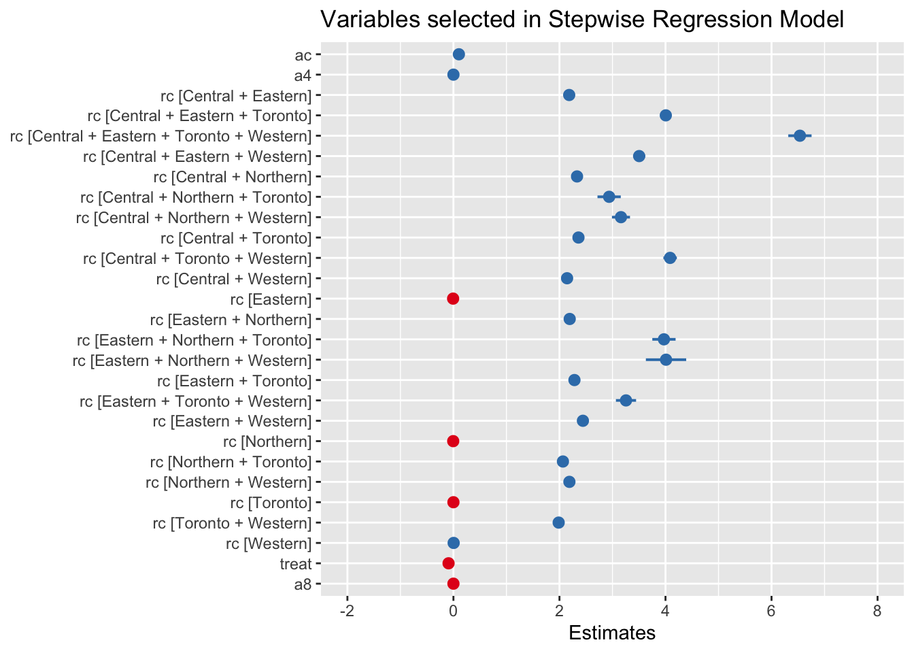
plot(bothstep, which = 1, main = "Model Fit", ask = FALSE)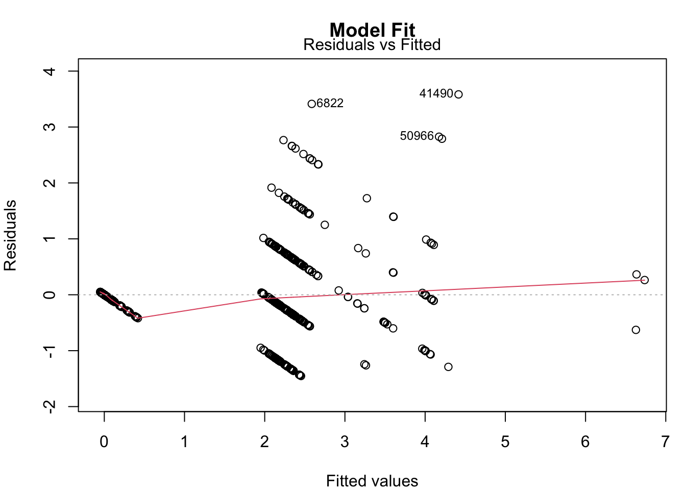
plot_model(
bothstep,
title = "Target Predictors from Stepwise Regression",
sort.est = FALSE,
show.values = TRUE,
value.offset = 0.4,
type = "std"
)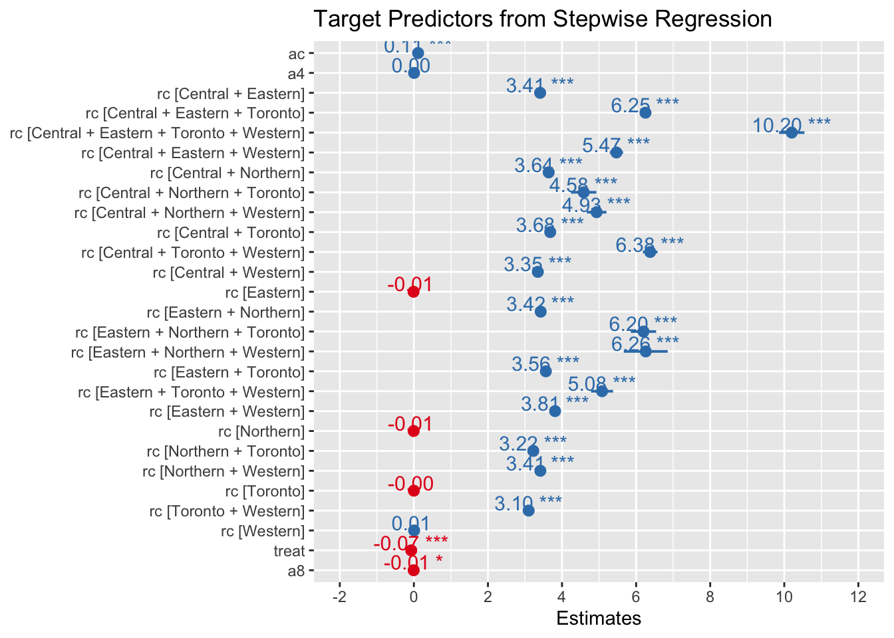
final_covariates <- formula(bothstep)
print(final_covariates)vm ~ ac + a4 + rc + treat + a8set.seed(36825994)
fmod <- lm(treat ~ . - id - vm, data = orcmatch_temp)
bstepz <- stats::step(fmod, direction = "backward")Start: AIC=-39611.14
treat ~ (yr + ag + sg + np + ac + rg + vm + a1 + a2 + a4 + a5 +
a7 + a8 + id + rc + norm_weights) - id - vm
Step: AIC=-39611.14
treat ~ yr + ag + sg + np + ac + rg + a1 + a2 + a4 + a5 + a7 +
a8 + rc
Step: AIC=-39611.14
treat ~ yr + ag + sg + np + ac + rg + a1 + a2 + a4 + a5 + a7 +
rc
Step: AIC=-39611.14
treat ~ yr + ag + sg + np + ac + a1 + a2 + a4 + a5 + a7 + rc
Df Sum of Sq RSS AIC
- yr 2 0.00 944.2 -39615
- ag 2 0.10 944.2 -39614
- a2 1 0.00 944.1 -39613
- a5 1 0.06 944.2 -39612
- np 1 0.07 944.2 -39612
<none> 944.1 -39611
- a7 1 0.23 944.4 -39610
- sg 1 0.29 944.4 -39609
- a1 1 0.93 945.1 -39599
- a4 1 1.90 946.1 -39584
- rc 23 5.73 949.9 -39569
- ac 1 2363.05 3307.2 -21411
Step: AIC=-39615.06
treat ~ ag + sg + np + ac + a1 + a2 + a4 + a5 + a7 + rc
Df Sum of Sq RSS AIC
- ag 2 0.10 944.3 -39618
- a2 1 0.00 944.2 -39617
- a5 1 0.06 944.2 -39616
- np 1 0.07 944.2 -39616
<none> 944.2 -39615
- a7 1 0.23 944.4 -39614
- sg 1 0.28 944.4 -39613
- a1 1 0.94 945.1 -39603
- a4 1 1.91 946.1 -39588
- rc 23 5.74 949.9 -39573
- ac 1 2366.23 3310.4 -21401
Step: AIC=-39617.5
treat ~ sg + np + ac + a1 + a2 + a4 + a5 + a7 + rc
Df Sum of Sq RSS AIC
- a2 1 0.00 944.3 -39619
- a5 1 0.06 944.3 -39619
- np 1 0.07 944.3 -39618
<none> 944.3 -39618
- a7 1 0.23 944.5 -39616
- sg 1 0.27 944.5 -39615
- a1 1 0.94 945.2 -39605
- a4 1 1.91 946.2 -39590
- rc 23 5.72 950.0 -39576
- ac 1 2366.36 3310.6 -21404
Step: AIC=-39619.49
treat ~ sg + np + ac + a1 + a4 + a5 + a7 + rc
Df Sum of Sq RSS AIC
- a5 1 0.06 944.3 -39621
- np 1 0.08 944.3 -39620
<none> 944.3 -39619
- a7 1 0.23 944.5 -39618
- sg 1 0.27 944.5 -39617
- a1 1 0.99 945.2 -39606
- a4 1 1.93 946.2 -39592
- rc 23 5.72 950.0 -39578
- ac 1 2382.55 3326.8 -21335
Step: AIC=-39620.58
treat ~ sg + np + ac + a1 + a4 + a7 + rc
Df Sum of Sq RSS AIC
- np 1 0.06 944.4 -39622
<none> 944.3 -39621
- a7 1 0.24 944.6 -39619
- sg 1 0.27 944.6 -39618
- a1 1 0.94 945.3 -39608
- a4 1 1.88 946.2 -39594
- rc 23 5.73 950.0 -39579
- ac 1 2441.60 3385.9 -21082
Step: AIC=-39621.66
treat ~ sg + ac + a1 + a4 + a7 + rc
Df Sum of Sq RSS AIC
<none> 944.4 -39622
- a7 1 0.27 944.6 -39619
- sg 1 0.29 944.7 -39619
- a1 1 1.00 945.4 -39608
- a4 1 1.87 946.2 -39595
- rc 23 5.87 950.2 -39578
- ac 1 2450.06 3394.4 -21047fstepz <- stats::step(
lm(treat ~ 1, data = orcmatch_temp),
scope = formula(fmod),
direction = "forward"
)Start: AIC=-20126.99
treat ~ 1
Df Sum of Sq RSS AIC
+ ac 1 2677.37 952.6 -39549
+ norm_weights 1 114.94 3515.1 -20592
+ np 1 114.94 3515.1 -20592
+ a1 1 104.80 3525.2 -20550
+ a7 1 63.16 3566.8 -20380
+ a5 1 62.07 3567.9 -20375
+ rc 23 70.94 3559.1 -20368
+ rg 1 56.88 3573.1 -20354
+ a4 1 35.41 3594.6 -20267
+ a2 1 23.32 3606.7 -20219
+ a8 1 0.59 3629.4 -20127
<none> 3630.0 -20127
+ sg 1 0.00 3630.0 -20125
+ yr 2 0.00 3630.0 -20123
+ ag 2 0.00 3630.0 -20123
Step: AIC=-39549.22
treat ~ ac
Df Sum of Sq RSS AIC
+ rc 23 5.1441 947.49 -39582
+ a4 1 1.3992 951.24 -39569
+ a1 1 0.5435 952.09 -39556
+ a8 1 0.3666 952.27 -39553
<none> 952.63 -39549
+ sg 1 0.1257 952.51 -39549
+ np 1 0.1108 952.52 -39549
+ norm_weights 1 0.1108 952.52 -39549
+ a7 1 0.1060 952.53 -39549
+ rg 1 0.0486 952.59 -39548
+ a2 1 0.0307 952.60 -39548
+ a5 1 0.0050 952.63 -39547
+ ag 2 0.0737 952.56 -39546
+ yr 2 0.0026 952.63 -39545
Step: AIC=-39581.84
treat ~ ac + rc
Df Sum of Sq RSS AIC
+ a4 1 1.64733 945.84 -39605
+ a1 1 0.81461 946.68 -39592
+ np 1 0.35315 947.14 -39585
+ norm_weights 1 0.35315 947.14 -39585
+ sg 1 0.24603 947.24 -39584
+ a8 1 0.21604 947.27 -39583
<none> 947.49 -39582
+ a7 1 0.11160 947.38 -39582
+ a2 1 0.01858 947.47 -39580
+ a5 1 0.00582 947.48 -39580
+ ag 2 0.08668 947.40 -39579
+ yr 2 0.00137 947.49 -39578
Step: AIC=-39605.1
treat ~ ac + rc + a4
Df Sum of Sq RSS AIC
+ a1 1 0.90828 944.94 -39617
+ sg 1 0.25827 945.59 -39607
+ a7 1 0.20460 945.64 -39606
<none> 945.84 -39605
+ a8 1 0.12956 945.71 -39605
+ np 1 0.06411 945.78 -39604
+ norm_weights 1 0.06411 945.78 -39604
+ a2 1 0.02345 945.82 -39603
+ a5 1 0.01620 945.83 -39603
+ ag 2 0.08950 945.75 -39602
+ yr 2 0.00113 945.84 -39601
Step: AIC=-39617.05
treat ~ ac + rc + a4 + a1
Df Sum of Sq RSS AIC
+ sg 1 0.285580 944.65 -39619
+ a7 1 0.271186 944.66 -39619
<none> 944.94 -39617
+ np 1 0.114428 944.82 -39617
+ norm_weights 1 0.114428 944.82 -39617
+ a8 1 0.072427 944.86 -39616
+ a5 1 0.037751 944.90 -39616
+ a2 1 0.007321 944.93 -39615
+ ag 2 0.091240 944.84 -39614
+ yr 2 0.006384 944.93 -39613
Step: AIC=-39619.44
treat ~ ac + rc + a4 + a1 + sg
Df Sum of Sq RSS AIC
+ a7 1 0.274550 944.37 -39622
<none> 944.65 -39619
+ np 1 0.091537 944.56 -39619
+ norm_weights 1 0.091537 944.56 -39619
+ a8 1 0.055695 944.59 -39618
+ a5 1 0.040227 944.61 -39618
+ a2 1 0.004945 944.64 -39618
+ ag 2 0.106140 944.54 -39617
+ yr 2 0.014561 944.63 -39616
Step: AIC=-39621.66
treat ~ ac + rc + a4 + a1 + sg + a7
Df Sum of Sq RSS AIC
<none> 944.37 -39622
+ a8 1 0.066835 944.31 -39621
+ np 1 0.059571 944.32 -39621
+ norm_weights 1 0.059571 944.32 -39621
+ a5 1 0.035854 944.34 -39620
+ a2 1 0.007461 944.37 -39620
+ ag 2 0.104758 944.27 -39619
+ yr 2 0.010153 944.36 -39618bothstepz <- stats::step(fmod, direction = "both")Start: AIC=-39611.14
treat ~ (yr + ag + sg + np + ac + rg + vm + a1 + a2 + a4 + a5 +
a7 + a8 + id + rc + norm_weights) - id - vm
Step: AIC=-39611.14
treat ~ yr + ag + sg + np + ac + rg + a1 + a2 + a4 + a5 + a7 +
a8 + rc
Step: AIC=-39611.14
treat ~ yr + ag + sg + np + ac + rg + a1 + a2 + a4 + a5 + a7 +
rc
Step: AIC=-39611.14
treat ~ yr + ag + sg + np + ac + a1 + a2 + a4 + a5 + a7 + rc
Df Sum of Sq RSS AIC
- yr 2 0.00 944.2 -39615
- ag 2 0.10 944.2 -39614
- a2 1 0.00 944.1 -39613
- a5 1 0.06 944.2 -39612
- np 1 0.07 944.2 -39612
<none> 944.1 -39611
- a7 1 0.23 944.4 -39610
- sg 1 0.29 944.4 -39609
- a1 1 0.93 945.1 -39599
- a4 1 1.90 946.1 -39584
- rc 23 5.73 949.9 -39569
- ac 1 2363.05 3307.2 -21411
Step: AIC=-39615.06
treat ~ ag + sg + np + ac + a1 + a2 + a4 + a5 + a7 + rc
Df Sum of Sq RSS AIC
- ag 2 0.10 944.3 -39618
- a2 1 0.00 944.2 -39617
- a5 1 0.06 944.2 -39616
- np 1 0.07 944.2 -39616
<none> 944.2 -39615
- a7 1 0.23 944.4 -39614
- sg 1 0.28 944.4 -39613
+ yr 2 0.00 944.1 -39611
- a1 1 0.94 945.1 -39603
- a4 1 1.91 946.1 -39588
- rc 23 5.74 949.9 -39573
- ac 1 2366.23 3310.4 -21401
Step: AIC=-39617.5
treat ~ sg + np + ac + a1 + a2 + a4 + a5 + a7 + rc
Df Sum of Sq RSS AIC
- a2 1 0.00 944.3 -39619
- a5 1 0.06 944.3 -39619
- np 1 0.07 944.3 -39618
<none> 944.3 -39618
- a7 1 0.23 944.5 -39616
- sg 1 0.27 944.5 -39615
+ ag 2 0.10 944.2 -39615
+ yr 2 0.01 944.2 -39614
- a1 1 0.94 945.2 -39605
- a4 1 1.91 946.2 -39590
- rc 23 5.72 950.0 -39576
- ac 1 2366.36 3310.6 -21404
Step: AIC=-39619.49
treat ~ sg + np + ac + a1 + a4 + a5 + a7 + rc
Df Sum of Sq RSS AIC
- a5 1 0.06 944.3 -39621
- np 1 0.08 944.3 -39620
<none> 944.3 -39619
- a7 1 0.23 944.5 -39618
+ a2 1 0.00 944.3 -39618
+ a8 1 0.00 944.3 -39618
- sg 1 0.27 944.5 -39617
+ ag 2 0.10 944.2 -39617
+ yr 2 0.01 944.3 -39616
- a1 1 0.99 945.2 -39606
- a4 1 1.93 946.2 -39592
- rc 23 5.72 950.0 -39578
- ac 1 2382.55 3326.8 -21335
Step: AIC=-39620.58
treat ~ sg + np + ac + a1 + a4 + a7 + rc
Df Sum of Sq RSS AIC
- np 1 0.06 944.4 -39622
<none> 944.3 -39621
+ a5 1 0.06 944.3 -39619
- a7 1 0.24 944.6 -39619
+ a8 1 0.01 944.3 -39619
+ a2 1 0.00 944.3 -39619
- sg 1 0.27 944.6 -39618
+ ag 2 0.10 944.2 -39618
+ yr 2 0.01 944.3 -39617
- a1 1 0.94 945.3 -39608
- a4 1 1.88 946.2 -39594
- rc 23 5.73 950.0 -39579
- ac 1 2441.60 3385.9 -21082
Step: AIC=-39621.66
treat ~ sg + ac + a1 + a4 + a7 + rc
Df Sum of Sq RSS AIC
<none> 944.4 -39622
+ a8 1 0.07 944.3 -39621
+ np 1 0.06 944.3 -39621
+ norm_weights 1 0.06 944.3 -39621
+ a5 1 0.04 944.3 -39620
+ a2 1 0.01 944.4 -39620
- a7 1 0.27 944.6 -39619
+ ag 2 0.10 944.3 -39619
- sg 1 0.29 944.7 -39619
+ yr 2 0.01 944.4 -39618
- a1 1 1.00 945.4 -39608
- a4 1 1.87 946.2 -39595
- rc 23 5.87 950.2 -39578
- ac 1 2450.06 3394.4 -21047stepform <- formula(bothstepz)
print(stepform)treat ~ sg + ac + a1 + a4 + a7 + rcsummary(bstepz)
Call:
lm(formula = treat ~ sg + ac + a1 + a4 + a7 + rc, data = orcmatch_temp)
Residuals:
Min 1Q Median 3Q Max
-2.1814 -0.1378 -0.1044 0.2558 0.4331
Coefficients:
Estimate Std. Error t value Pr(>|t|)
(Intercept) -0.4681377 0.0063124 -74.161 < 2e-16
sgF 0.0153125 0.0072721 2.106 0.035253
ac 0.6059280 0.0031250 193.894 < 2e-16
a1 0.0002449 0.0000624 3.924 8.74e-05
a4 0.0006013 0.0001122 5.360 8.46e-08
a7 -0.0006034 0.0002940 -2.053 0.040137
rcCentral + Eastern -0.0809279 0.0235594 -3.435 0.000594
rcCentral + Eastern + Toronto 0.0194658 0.0493872 0.394 0.693479
rcCentral + Eastern + Toronto + Western -0.5553001 0.1475450 -3.764 0.000168
rcCentral + Eastern + Western -0.1094948 0.0771363 -1.419 0.155775
rcCentral + Northern 0.0444578 0.0502467 0.885 0.376285
rcCentral + Northern + Toronto -0.2860683 0.1474638 -1.940 0.052409
rcCentral + Northern + Western 0.0045387 0.1142821 0.040 0.968321
rcCentral + Toronto -0.0297699 0.0163952 -1.816 0.069426
rcCentral + Toronto + Western -0.0427823 0.0852239 -0.502 0.615676
rcCentral + Western 0.0307709 0.0213937 1.438 0.150365
rcEastern -0.0348488 0.0059958 -5.812 6.29e-09
rcEastern + Northern 0.0858735 0.0558750 1.537 0.124343
rcEastern + Northern + Toronto 0.0531629 0.1474664 0.361 0.718472
rcEastern + Northern + Western 0.2397447 0.2554191 0.939 0.347935
rcEastern + Toronto -0.0362451 0.0196808 -1.842 0.065546
rcEastern + Toronto + Western 0.0353294 0.1277534 0.277 0.782134
rcEastern + Western -0.0474037 0.0387942 -1.222 0.221755
rcNorthern -0.0047978 0.0073647 -0.651 0.514756
rcNorthern + Toronto 0.0006315 0.0375218 0.017 0.986573
rcNorthern + Western 0.0724490 0.0460614 1.573 0.115769
rcToronto -0.0132884 0.0069503 -1.912 0.055906
rcToronto + Western 0.0296455 0.0427685 0.693 0.488219
rcWestern 0.0020497 0.0070114 0.292 0.770035
(Intercept) ***
sgF *
ac ***
a1 ***
a4 ***
a7 *
rcCentral + Eastern ***
rcCentral + Eastern + Toronto
rcCentral + Eastern + Toronto + Western ***
rcCentral + Eastern + Western
rcCentral + Northern
rcCentral + Northern + Toronto .
rcCentral + Northern + Western
rcCentral + Toronto .
rcCentral + Toronto + Western
rcCentral + Western
rcEastern ***
rcEastern + Northern
rcEastern + Northern + Toronto
rcEastern + Northern + Western
rcEastern + Toronto .
rcEastern + Toronto + Western
rcEastern + Western
rcNorthern
rcNorthern + Toronto
rcNorthern + Western
rcToronto .
rcToronto + Western
rcWestern
---
Signif. codes: 0 '***' 0.001 '**' 0.01 '*' 0.05 '.' 0.1 ' ' 1
Residual standard error: 0.2553 on 14491 degrees of freedom
Multiple R-squared: 0.7398, Adjusted R-squared: 0.7393
F-statistic: 1472 on 28 and 14491 DF, p-value: < 2.2e-16summary(fstepz)
Call:
lm(formula = treat ~ ac + rc + a4 + a1 + sg + a7, data = orcmatch_temp)
Residuals:
Min 1Q Median 3Q Max
-2.1814 -0.1378 -0.1044 0.2558 0.4331
Coefficients:
Estimate Std. Error t value Pr(>|t|)
(Intercept) -0.4681377 0.0063124 -74.161 < 2e-16
ac 0.6059280 0.0031250 193.894 < 2e-16
rcCentral + Eastern -0.0809279 0.0235594 -3.435 0.000594
rcCentral + Eastern + Toronto 0.0194658 0.0493872 0.394 0.693479
rcCentral + Eastern + Toronto + Western -0.5553001 0.1475450 -3.764 0.000168
rcCentral + Eastern + Western -0.1094948 0.0771363 -1.419 0.155775
rcCentral + Northern 0.0444578 0.0502467 0.885 0.376285
rcCentral + Northern + Toronto -0.2860683 0.1474638 -1.940 0.052409
rcCentral + Northern + Western 0.0045387 0.1142821 0.040 0.968321
rcCentral + Toronto -0.0297699 0.0163952 -1.816 0.069426
rcCentral + Toronto + Western -0.0427823 0.0852239 -0.502 0.615676
rcCentral + Western 0.0307709 0.0213937 1.438 0.150365
rcEastern -0.0348488 0.0059958 -5.812 6.29e-09
rcEastern + Northern 0.0858735 0.0558750 1.537 0.124343
rcEastern + Northern + Toronto 0.0531629 0.1474664 0.361 0.718472
rcEastern + Northern + Western 0.2397447 0.2554191 0.939 0.347935
rcEastern + Toronto -0.0362451 0.0196808 -1.842 0.065546
rcEastern + Toronto + Western 0.0353294 0.1277534 0.277 0.782134
rcEastern + Western -0.0474037 0.0387942 -1.222 0.221755
rcNorthern -0.0047978 0.0073647 -0.651 0.514756
rcNorthern + Toronto 0.0006315 0.0375218 0.017 0.986573
rcNorthern + Western 0.0724490 0.0460614 1.573 0.115769
rcToronto -0.0132884 0.0069503 -1.912 0.055906
rcToronto + Western 0.0296455 0.0427685 0.693 0.488219
rcWestern 0.0020497 0.0070114 0.292 0.770035
a4 0.0006013 0.0001122 5.360 8.46e-08
a1 0.0002449 0.0000624 3.924 8.74e-05
sgF 0.0153125 0.0072721 2.106 0.035253
a7 -0.0006034 0.0002940 -2.053 0.040137
(Intercept) ***
ac ***
rcCentral + Eastern ***
rcCentral + Eastern + Toronto
rcCentral + Eastern + Toronto + Western ***
rcCentral + Eastern + Western
rcCentral + Northern
rcCentral + Northern + Toronto .
rcCentral + Northern + Western
rcCentral + Toronto .
rcCentral + Toronto + Western
rcCentral + Western
rcEastern ***
rcEastern + Northern
rcEastern + Northern + Toronto
rcEastern + Northern + Western
rcEastern + Toronto .
rcEastern + Toronto + Western
rcEastern + Western
rcNorthern
rcNorthern + Toronto
rcNorthern + Western
rcToronto .
rcToronto + Western
rcWestern
a4 ***
a1 ***
sgF *
a7 *
---
Signif. codes: 0 '***' 0.001 '**' 0.01 '*' 0.05 '.' 0.1 ' ' 1
Residual standard error: 0.2553 on 14491 degrees of freedom
Multiple R-squared: 0.7398, Adjusted R-squared: 0.7393
F-statistic: 1472 on 28 and 14491 DF, p-value: < 2.2e-16summary(bothstepz)
Call:
lm(formula = treat ~ sg + ac + a1 + a4 + a7 + rc, data = orcmatch_temp)
Residuals:
Min 1Q Median 3Q Max
-2.1814 -0.1378 -0.1044 0.2558 0.4331
Coefficients:
Estimate Std. Error t value Pr(>|t|)
(Intercept) -0.4681377 0.0063124 -74.161 < 2e-16
sgF 0.0153125 0.0072721 2.106 0.035253
ac 0.6059280 0.0031250 193.894 < 2e-16
a1 0.0002449 0.0000624 3.924 8.74e-05
a4 0.0006013 0.0001122 5.360 8.46e-08
a7 -0.0006034 0.0002940 -2.053 0.040137
rcCentral + Eastern -0.0809279 0.0235594 -3.435 0.000594
rcCentral + Eastern + Toronto 0.0194658 0.0493872 0.394 0.693479
rcCentral + Eastern + Toronto + Western -0.5553001 0.1475450 -3.764 0.000168
rcCentral + Eastern + Western -0.1094948 0.0771363 -1.419 0.155775
rcCentral + Northern 0.0444578 0.0502467 0.885 0.376285
rcCentral + Northern + Toronto -0.2860683 0.1474638 -1.940 0.052409
rcCentral + Northern + Western 0.0045387 0.1142821 0.040 0.968321
rcCentral + Toronto -0.0297699 0.0163952 -1.816 0.069426
rcCentral + Toronto + Western -0.0427823 0.0852239 -0.502 0.615676
rcCentral + Western 0.0307709 0.0213937 1.438 0.150365
rcEastern -0.0348488 0.0059958 -5.812 6.29e-09
rcEastern + Northern 0.0858735 0.0558750 1.537 0.124343
rcEastern + Northern + Toronto 0.0531629 0.1474664 0.361 0.718472
rcEastern + Northern + Western 0.2397447 0.2554191 0.939 0.347935
rcEastern + Toronto -0.0362451 0.0196808 -1.842 0.065546
rcEastern + Toronto + Western 0.0353294 0.1277534 0.277 0.782134
rcEastern + Western -0.0474037 0.0387942 -1.222 0.221755
rcNorthern -0.0047978 0.0073647 -0.651 0.514756
rcNorthern + Toronto 0.0006315 0.0375218 0.017 0.986573
rcNorthern + Western 0.0724490 0.0460614 1.573 0.115769
rcToronto -0.0132884 0.0069503 -1.912 0.055906
rcToronto + Western 0.0296455 0.0427685 0.693 0.488219
rcWestern 0.0020497 0.0070114 0.292 0.770035
(Intercept) ***
sgF *
ac ***
a1 ***
a4 ***
a7 *
rcCentral + Eastern ***
rcCentral + Eastern + Toronto
rcCentral + Eastern + Toronto + Western ***
rcCentral + Eastern + Western
rcCentral + Northern
rcCentral + Northern + Toronto .
rcCentral + Northern + Western
rcCentral + Toronto .
rcCentral + Toronto + Western
rcCentral + Western
rcEastern ***
rcEastern + Northern
rcEastern + Northern + Toronto
rcEastern + Northern + Western
rcEastern + Toronto .
rcEastern + Toronto + Western
rcEastern + Western
rcNorthern
rcNorthern + Toronto
rcNorthern + Western
rcToronto .
rcToronto + Western
rcWestern
---
Signif. codes: 0 '***' 0.001 '**' 0.01 '*' 0.05 '.' 0.1 ' ' 1
Residual standard error: 0.2553 on 14491 degrees of freedom
Multiple R-squared: 0.7398, Adjusted R-squared: 0.7393
F-statistic: 1472 on 28 and 14491 DF, p-value: < 2.2e-16fca <- formula(backstep)
fcb <- formula(frontstep)
fcc <- formula(bothstep)
fcd <- formula(bstepz)
fce <- formula(fstepz)
fcg <- formula(bothstepz)
fcavm ~ np + ac + a4 + rc + treatfcbvm ~ rc + ac + treat + a8 + a4fccvm ~ ac + a4 + rc + treat + a8fcdtreat ~ sg + ac + a1 + a4 + a7 + rcfcetreat ~ ac + rc + a4 + a1 + sg + a7fcgtreat ~ sg + ac + a1 + a4 + a7 + rc# plot(bothstep, which = 1:4, ask = FALSE)
abs_t <- sort(
abs(summary(bothstepz)$coefficients[, "t value"]),
decreasing = TRUE
)
print(abs_t) ac (Intercept)
193.89430387 74.16145718
rcEastern a4
5.81222708 5.35975365
a1 rcCentral + Eastern + Toronto + Western
3.92438914 3.76359743
rcCentral + Eastern sgF
3.43505680 2.10564024
a7 rcCentral + Northern + Toronto
2.05252052 1.93992188
rcToronto rcEastern + Toronto
1.91192157 1.84165356
rcCentral + Toronto rcNorthern + Western
1.81577492 1.57287823
rcEastern + Northern rcCentral + Western
1.53688722 1.43832097
rcCentral + Eastern + Western rcEastern + Western
1.41949910 1.22192732
rcEastern + Northern + Western rcCentral + Northern
0.93863274 0.88479013
rcToronto + Western rcNorthern
0.69316137 0.65146542
rcCentral + Toronto + Western rcCentral + Eastern + Toronto
0.50199859 0.39414662
rcEastern + Northern + Toronto rcWestern
0.36050841 0.29233524
rcEastern + Toronto + Western rcCentral + Northern + Western
0.27654380 0.03971491
rcNorthern + Toronto
0.01682979 par(mfrow = c(2, 2))
plot(bothstepz, ask = FALSE, which = 1:4)
par(mfrow = c(1, 1))
library(sjPlot)
sjPlot::plot_model(
bothstepz,
title = "Variables selected in Stepwise Regression Model (treatment ~ sg + ac + a1 + a4 + a7 + rc)"
)
modz <- matchit(
treat ~ sg + ac + a1 + a4 + a7 + rc,
data = orcmatch_temp,
distance = "cbps",
estimand = "ATC",
distance.options = list(method = "exact"),
replace = TRUE
)
summary(modz)
Call:
matchit(formula = treat ~ sg + ac + a1 + a4 + a7 + rc, data = orcmatch_temp,
distance = "cbps", distance.options = list(method = "exact"),
estimand = "ATC", replace = TRUE)
Summary of Balance for All Data:
Means Treated Means Control
distance 0.0000 1.0000
sgM 0.8986 0.8986
sgF 0.1014 0.1014
ac 2.2164 1.0000
a1 17.9529 6.0704
a4 5.4539 1.6624
a7 2.1215 0.1784
rcCentral 0.2646 0.2753
rcCentral + Eastern 0.0117 0.0051
rcCentral + Eastern + Toronto 0.0034 0.0003
rcCentral + Eastern + Toronto + Western 0.0004 0.0000
rcCentral + Eastern + Western 0.0012 0.0003
rcCentral + Northern 0.0028 0.0008
rcCentral + Northern + Toronto 0.0003 0.0001
rcCentral + Northern + Western 0.0007 0.0000
rcCentral + Toronto 0.0274 0.0085
rcCentral + Toronto + Western 0.0010 0.0003
rcCentral + Western 0.0131 0.0073
rcEastern 0.2519 0.2528
rcEastern + Northern 0.0019 0.0010
rcEastern + Northern + Toronto 0.0004 0.0000
rcEastern + Northern + Western 0.0001 0.0000
rcEastern + Toronto 0.0174 0.0070
rcEastern + Toronto + Western 0.0003 0.0003
rcEastern + Western 0.0050 0.0011
rcNorthern 0.1303 0.1204
rcNorthern + Toronto 0.0048 0.0017
rcNorthern + Western 0.0030 0.0012
rcToronto 0.1321 0.1522
rcToronto + Western 0.0037 0.0012
rcWestern 0.1225 0.1631
Std. Mean Diff.
distance -10877574058277.4844
sgM 0.0000
sgF 0.0000
ac 3.3528
a1 0.4306
a4 0.2616
a7 0.5093
rcCentral -0.0241
rcCentral + Eastern 0.0928
rcCentral + Eastern + Toronto 0.1909
rcCentral + Eastern + Toronto + Western 0.0288
rcCentral + Eastern + Western 0.0581
rcCentral + Northern 0.0671
rcCentral + Northern + Toronto 0.0117
rcCentral + Northern + Western 0.0371
rcCentral + Toronto 0.2051
rcCentral + Toronto + Western 0.0415
rcCentral + Western 0.0680
rcEastern -0.0019
rcEastern + Northern 0.0311
rcEastern + Northern + Toronto 0.0288
rcEastern + Northern + Western 0.0166
rcEastern + Toronto 0.1237
rcEastern + Toronto + Western 0.0000
rcEastern + Western 0.1162
rcNorthern 0.0305
rcNorthern + Toronto 0.0780
rcNorthern + Western 0.0509
rcToronto -0.0560
rcToronto + Western 0.0705
rcWestern -0.1100
Var. Ratio
distance 0.0000
sgM .
sgF .
ac 341692012766349154532196352.0000
a1 2.1188
a4 2.4738
a7 6.3246
rcCentral .
rcCentral + Eastern .
rcCentral + Eastern + Toronto .
rcCentral + Eastern + Toronto + Western .
rcCentral + Eastern + Western .
rcCentral + Northern .
rcCentral + Northern + Toronto .
rcCentral + Northern + Western .
rcCentral + Toronto .
rcCentral + Toronto + Western .
rcCentral + Western .
rcEastern .
rcEastern + Northern .
rcEastern + Northern + Toronto .
rcEastern + Northern + Western .
rcEastern + Toronto .
rcEastern + Toronto + Western .
rcEastern + Western .
rcNorthern .
rcNorthern + Toronto .
rcNorthern + Western .
rcToronto .
rcToronto + Western .
rcWestern .
eCDF Mean eCDF Max
distance 0.5000 1.0000
sgM 0.0000 0.0000
sgF 0.0000 0.0000
ac 0.2027 1.0000
a1 0.0434 0.3814
a4 0.0188 0.1782
a7 0.0189 0.2579
rcCentral 0.0107 0.0107
rcCentral + Eastern 0.0066 0.0066
rcCentral + Eastern + Toronto 0.0032 0.0032
rcCentral + Eastern + Toronto + Western 0.0004 0.0004
rcCentral + Eastern + Western 0.0010 0.0010
rcCentral + Northern 0.0019 0.0019
rcCentral + Northern + Toronto 0.0001 0.0001
rcCentral + Northern + Western 0.0007 0.0007
rcCentral + Toronto 0.0189 0.0189
rcCentral + Toronto + Western 0.0007 0.0007
rcCentral + Western 0.0058 0.0058
rcEastern 0.0008 0.0008
rcEastern + Northern 0.0010 0.0010
rcEastern + Northern + Toronto 0.0004 0.0004
rcEastern + Northern + Western 0.0001 0.0001
rcEastern + Toronto 0.0103 0.0103
rcEastern + Toronto + Western 0.0000 0.0000
rcEastern + Western 0.0039 0.0039
rcNorthern 0.0099 0.0099
rcNorthern + Toronto 0.0032 0.0032
rcNorthern + Western 0.0018 0.0018
rcToronto 0.0201 0.0201
rcToronto + Western 0.0025 0.0025
rcWestern 0.0406 0.0406
Summary of Balance for Matched Data:
Means Treated Means Control
distance 0 1.0000
sgM 0 0.8986
sgF 1 0.1014
ac 2 1.0000
a1 0 6.0704
a4 0 1.6624
a7 0 0.1784
rcCentral 0 0.2753
rcCentral + Eastern 0 0.0051
rcCentral + Eastern + Toronto 0 0.0003
rcCentral + Eastern + Toronto + Western 0 0.0000
rcCentral + Eastern + Western 0 0.0003
rcCentral + Northern 0 0.0008
rcCentral + Northern + Toronto 0 0.0001
rcCentral + Northern + Western 0 0.0000
rcCentral + Toronto 0 0.0085
rcCentral + Toronto + Western 0 0.0003
rcCentral + Western 0 0.0073
rcEastern 1 0.2528
rcEastern + Northern 0 0.0010
rcEastern + Northern + Toronto 0 0.0000
rcEastern + Northern + Western 0 0.0000
rcEastern + Toronto 0 0.0070
rcEastern + Toronto + Western 0 0.0003
rcEastern + Western 0 0.0011
rcNorthern 0 0.1204
rcNorthern + Toronto 0 0.0017
rcNorthern + Western 0 0.0012
rcToronto 0 0.1522
rcToronto + Western 0 0.0012
rcWestern 0 0.1631
Std. Mean Diff. Var. Ratio
distance -10877574058277.4844 .
sgM -2.9773 .
sgF 2.9773 .
ac 2.7563 .
a1 -0.2200 .
a4 -0.1147 .
a7 -0.0467 .
rcCentral -0.6164 .
rcCentral + Eastern -0.0716 .
rcCentral + Eastern + Toronto -0.0166 .
rcCentral + Eastern + Toronto + Western 0.0000 .
rcCentral + Eastern + Western -0.0166 .
rcCentral + Northern -0.0288 .
rcCentral + Northern + Toronto -0.0117 .
rcCentral + Northern + Western 0.0000 .
rcCentral + Toronto -0.0928 .
rcCentral + Toronto + Western -0.0166 .
rcCentral + Western -0.0858 .
rcEastern 1.7194 .
rcEastern + Northern -0.0311 .
rcEastern + Northern + Toronto 0.0000 .
rcEastern + Northern + Western 0.0000 .
rcEastern + Toronto -0.0841 .
rcEastern + Toronto + Western -0.0166 .
rcEastern + Western -0.0332 .
rcNorthern -0.3699 .
rcNorthern + Toronto -0.0407 .
rcNorthern + Western -0.0352 .
rcToronto -0.4237 .
rcToronto + Western -0.0352 .
rcWestern -0.4414 .
eCDF Mean eCDF Max Std. Pair Dist.
distance 0.5000 1.0000 10877574058278.9004
sgM 0.8986 0.8986 2.9773
sgF 0.8986 0.8986 2.9773
ac 0.1667 1.0000 2.7563
a1 0.0216 0.1682 0.2200
a4 0.0078 0.0486 0.1147
a7 0.0015 0.0076 0.0467
rcCentral 0.2753 0.2753 0.6164
rcCentral + Eastern 0.0051 0.0051 0.0716
rcCentral + Eastern + Toronto 0.0003 0.0003 0.0166
rcCentral + Eastern + Toronto + Western 0.0000 0.0000 0.0000
rcCentral + Eastern + Western 0.0003 0.0003 0.0166
rcCentral + Northern 0.0008 0.0008 0.0288
rcCentral + Northern + Toronto 0.0001 0.0001 0.0117
rcCentral + Northern + Western 0.0000 0.0000 0.0000
rcCentral + Toronto 0.0085 0.0085 0.0928
rcCentral + Toronto + Western 0.0003 0.0003 0.0166
rcCentral + Western 0.0073 0.0073 0.0858
rcEastern 0.7472 0.7472 1.7194
rcEastern + Northern 0.0010 0.0010 0.0311
rcEastern + Northern + Toronto 0.0000 0.0000 0.0000
rcEastern + Northern + Western 0.0000 0.0000 0.0000
rcEastern + Toronto 0.0070 0.0070 0.0841
rcEastern + Toronto + Western 0.0003 0.0003 0.0166
rcEastern + Western 0.0011 0.0011 0.0332
rcNorthern 0.1204 0.1204 0.3699
rcNorthern + Toronto 0.0017 0.0017 0.0407
rcNorthern + Western 0.0012 0.0012 0.0352
rcToronto 0.1522 0.1522 0.4237
rcToronto + Western 0.0012 0.0012 0.0352
rcWestern 0.1631 0.1631 0.4414
Sample Sizes:
Control Treated
All 7260 7260
Matched 7260 1
Unmatched 0 7259
Discarded 0 0modz1a <- match.data(modz)
library(sjmisc)
orcm <- copy(orcmatch_temp)
orcm <- to_factor(orcm, sg, rc, treat)
morc <- lm(treat ~ sg + ac + a1 + a4 + a7 + rc, data = orcm)
sjPlot::plot_model(
morc,
type = "pred",
terms = c("rc", "ac", "sg"),
title = "Stepwise Regression Prediction of Treatment",
) +
coord_flip() +
theme(plot.title = element_text(hjust = 0.5, face = "bold"))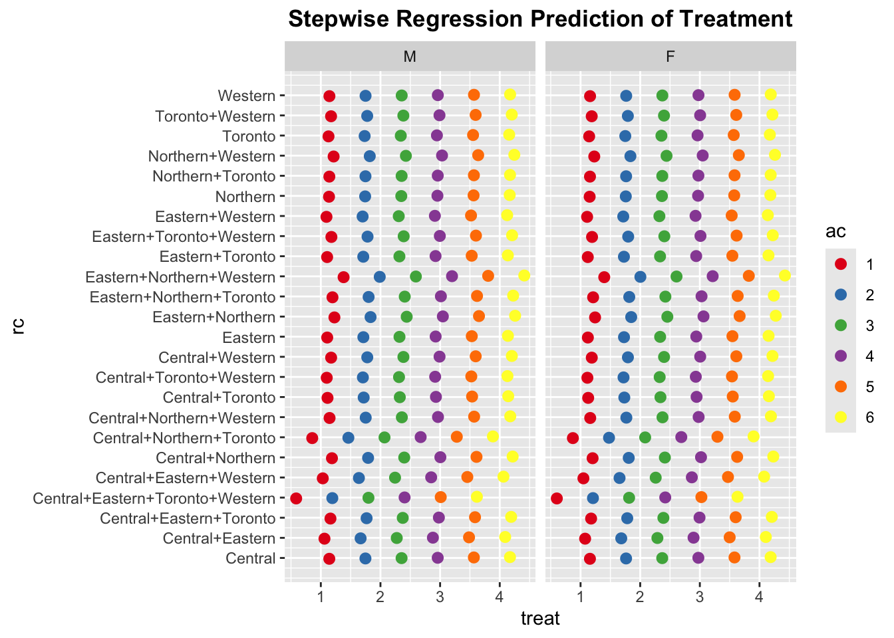
sjPlot::plot_model(
morc,
title = "Stepwise Regression Prediction of Treatment",
type = "pred",
terms = c("rc", "ac", "sg")
) +
theme(
plot.title = element_text(hjust = 0.5, face = "bold"),
axis.text.x = element_text(
angle = 45,
hjust = 1,
vjust = 1,
size = 9
)
) 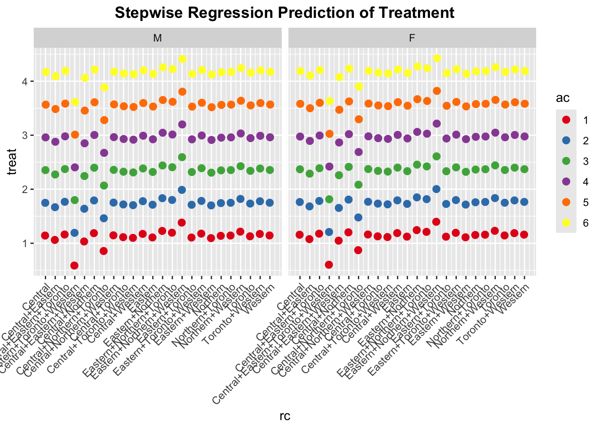
plot(bothstep, which = 1:4, ask = FALSE)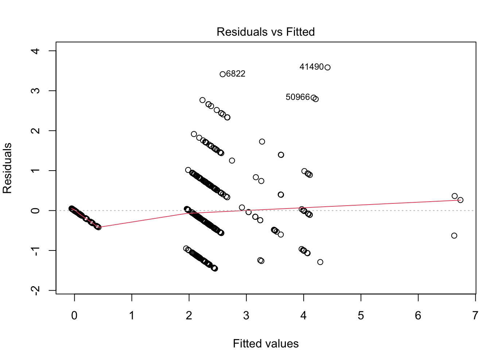


plot(bothstepz, which = 1:4, ask = FALSE)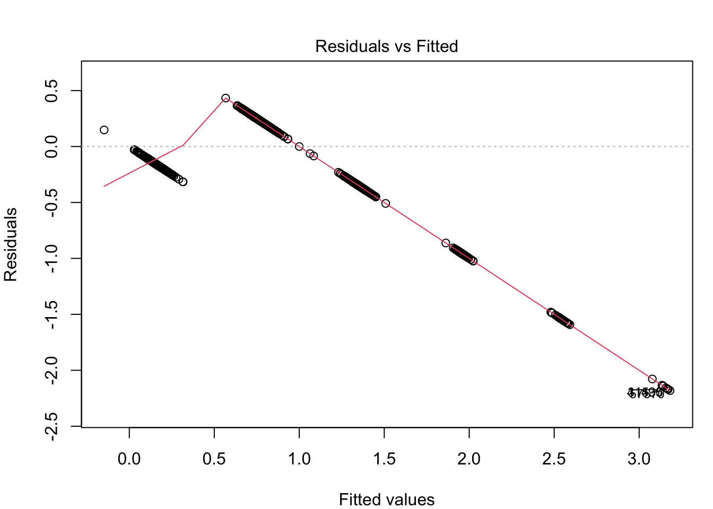
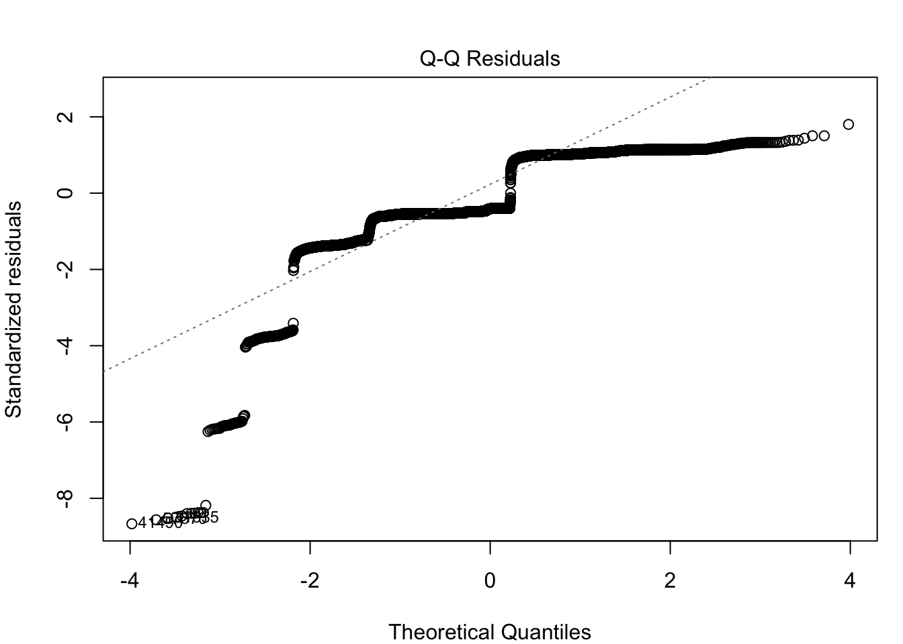

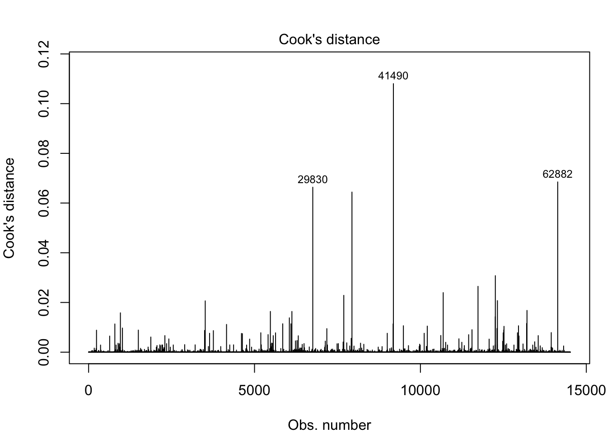